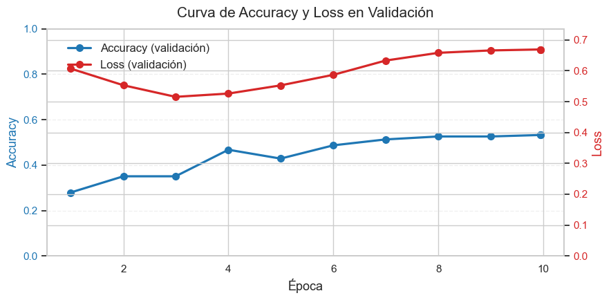
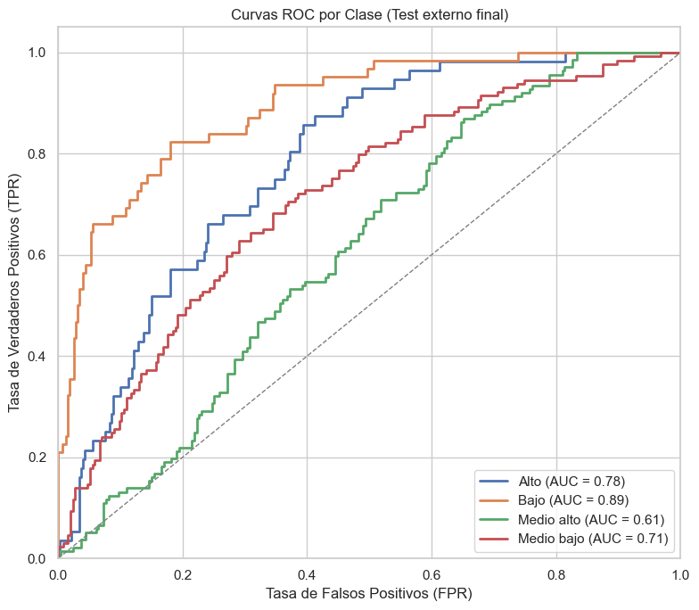

Modelo Transformers#
# Librerías
import os, gc
from pathlib import Path
import numpy as np
import pandas as pd
import torch, torch.nn as nn
import matplotlib.pyplot as plt, seaborn as sns
from sklearn.model_selection import train_test_split
from sklearn.utils.class_weight import compute_class_weight
from sklearn.metrics import classification_report, confusion_matrix
from sklearn.preprocessing import LabelEncoder
from datasets import Dataset
from transformers import (
AutoTokenizer, AutoModelForSequenceClassification,
TrainingArguments, Trainer, EarlyStoppingCallback, TrainerCallback
)
import evaluate
WARNING:tensorflow:From c:\Users\Sistemas\anaconda3\envs\entorno_actualizado\Lib\site-packages\tf_keras\src\losses.py:2976: The name tf.losses.sparse_softmax_cross_entropy is deprecated. Please use tf.compat.v1.losses.sparse_softmax_cross_entropy instead.
# Carga y limpieza desde único dataset
DATA_PATH = Path(r"C:\Users\Sistemas\Desktop\PFINAL\nuevo_df.csv")
df = pd.read_csv(DATA_PATH)
# Limpieza mínima
df['texto_completo'] = df['clean_text'].fillna('').str.strip()
df['Nivel_f'] = df['Nivel_f'].fillna('').str.strip()
# Codificación de etiquetas
label_encoder = LabelEncoder()
df['label'] = label_encoder.fit_transform(df['Nivel_f'])
print("Clases codificadas:", dict(enumerate(label_encoder.classes_)))
Clases codificadas: {0: 'Alto', 1: 'Bajo', 2: 'Medio alto', 3: 'Medio bajo'}
# División de train / val / test (desde un solo dataset)
train_df, test_df = train_test_split(
df, test_size=0.2, random_state=42, stratify=df['label']
)
# Validación
train_df, val_df = train_test_split(
train_df, test_size=0.1, random_state=42, stratify=train_df['label']
)
print(f"Train: {len(train_df)} | Val: {len(val_df)} | Test: {len(test_df)}")
Train: 1382 | Val: 154 | Test: 384
# Pesos de clase (para la pérdida)
class_weights = torch.tensor(
compute_class_weight(class_weight='balanced',
classes=np.unique(train_df['label']),
y=train_df['label']),
dtype=torch.float)
# Búsqueda de hiperparámetros
from itertools import product
from copy import deepcopy
from tqdm import tqdm
param_grid = {
"learning_rate": [1e-5, 3e-5], # Aprendizaje más lento estabiliza
"per_device_train_batch_size": [8, 16], # Más pequeño = más ruido = más generalización
"num_train_epochs": [10],
"weight_decay": [0.01, 0.1, 0.2],
"lr_scheduler_type": ["cosine"], # Cosine decae mejor con menos overfitting
"warmup_ratio": [0.05, 0.1],
"gradient_accumulation_steps": [2, 3], # Simula batch más grande
"fp16": [True], # Usa media precisión para estabilidad con GPU
}
# Generar combinaciones de hiperparámetros
keys = list(param_grid.keys())
combinations = list(product(*param_grid.values()))
print(f"Total combinaciones a evaluar: {len(combinations)}")
Total combinaciones a evaluar: 48
# Tokenizador y modelo base
model_name = "dccuchile/bert-base-spanish-wwm-cased"
# model_name = "PlanTL-GOB-ES/roberta-base-bne"
tokenizer = AutoTokenizer.from_pretrained(model_name)
model_base = AutoModelForSequenceClassification.from_pretrained(
model_name, num_labels=len(label_encoder.classes_)
)
# Conversión a datasets
def to_hfds(df):
return Dataset.from_pandas(df[['texto_completo', 'label']])
train_ds = to_hfds(train_df)
val_ds = to_hfds(val_df)
test_ds = to_hfds(test_df)
# Tokenización
def tok(batch):
return tokenizer(
batch["texto_completo"],
truncation=True,
padding="max_length",
max_length=512
)
def tok2(batch):
return tokenizer(batch["texto_completo"],
truncation=True,
padding="max_length",
max_length=512,
# Estos para SLIDING WINDOW -----------------------
stride=128,
return_overflowing_tokens=True,
return_special_tokens_mask=True)
train_ds = train_ds.map(tok, batched=True).remove_columns("texto_completo")
val_ds = val_ds.map(tok, batched=True).remove_columns("texto_completo")
#test_ds = test_ds.map(tok, batched=True).remove_columns("texto_completo")
# Para SLIDING WIENDOW ---------------------------
from collections import defaultdict
# Crear dataset de test manualmente (sin modificar el original)
test_ds_windowed = Dataset.from_pandas(test_df[['texto_completo', 'label']])
# Tokenizar con sliding window
tokenized_test = tokenizer(
test_ds_windowed["texto_completo"],
truncation=True,
padding="max_length",
max_length=512,
stride=128,
return_overflowing_tokens=True,
return_special_tokens_mask=True,
return_tensors=None
)
# Guardar mapeo de fragmentos a textos originales
test_ds_windowed = test_ds_windowed.map(tok2, batched=True)
sample_mapping = test_ds_windowed["overflow_to_sample_mapping"]
test_ds_windowed = test_ds_windowed.remove_columns("texto_completo")
test_ds_windowed.set_format("torch")
# Formato PyTorch
for ds in (train_ds, val_ds, test_ds):
ds.set_format("torch")
# Métricas
accuracy = evaluate.load("accuracy")
f1 = evaluate.load("f1")
precision = evaluate.load("precision")
recall = evaluate.load("recall")
def compute_metrics(eval_pred):
logits, labels = eval_pred
preds = np.argmax(logits, axis=-1)
return {
"accuracy" : accuracy.compute(predictions=preds, references=labels)["accuracy"],
"f1_macro" : f1.compute(predictions=preds, references=labels, average="macro")["f1"],
"precision_macro" : precision.compute(predictions=preds, references=labels, average="macro")["precision"],
"recall_macro" : recall.compute(predictions=preds, references=labels, average="macro")["recall"],
}
class MetricPrinter(TrainerCallback):
def on_evaluate(self, args, state, control, metrics=None, **kwargs):
if metrics is None: return
print(f"Época {int(state.epoch):>2} | "
f"Acc={metrics.get('eval_accuracy', 0):.4f} "
f"F1={metrics.get('eval_f1_macro', 0):.4f} "
f"Prec={metrics.get('eval_precision_macro', 0):.4f} "
f"Rec={metrics.get('eval_recall_macro', 0):.4f}")
# Trainer personalizado con pérdida focalizada
class FocalLossTrainer(Trainer):
def compute_loss(self, model, inputs, return_outputs=False, **kwargs):
labels = inputs.pop("labels")
outputs = model(**inputs)
logits = outputs.logits
ce_loss = nn.functional.cross_entropy(logits, labels, weight=class_weights.to(model.device), reduction='none')
pt = torch.exp(-ce_loss)
focal_loss = ((1 - pt) ** 2 * ce_loss).mean()
return (focal_loss, outputs) if return_outputs else focal_loss
Some weights of BertForSequenceClassification were not initialized from the model checkpoint at dccuchile/bert-base-spanish-wwm-cased and are newly initialized: ['bert.pooler.dense.bias', 'bert.pooler.dense.weight', 'classifier.bias', 'classifier.weight']
You should probably TRAIN this model on a down-stream task to be able to use it for predictions and inference.
Map: 100%|██████████| 1382/1382 [00:00<00:00, 4108.57 examples/s]
Map: 100%|██████████| 154/154 [00:00<00:00, 4787.91 examples/s]
Map: 100%|██████████| 384/384 [00:00<00:00, 3134.24 examples/s]
# Parámetros de entrenamiento
out_root = r"C:\Users\Sistemas\Desktop\beto solo grid\out beto grid 1"
os.makedirs(out_root, exist_ok=True)
resultados_grid = []
for i, valores in enumerate(tqdm(combinations, desc="🔁 Ejecutando combinaciones")):
params = dict(zip(keys, valores))
print(f"\nCombinación {i+1}/{len(combinations)}: {params}")
output_dir_i = os.path.join(out_root, f"beto_grid_run_{i}")
os.makedirs(output_dir_i, exist_ok=True)
training_args = TrainingArguments(
output_dir=output_dir_i,
evaluation_strategy="epoch",
save_strategy="no",
logging_strategy="no",
learning_rate=params["learning_rate"],
per_device_train_batch_size=params["per_device_train_batch_size"],
per_device_eval_batch_size=8,
num_train_epochs=params["num_train_epochs"],
weight_decay=params["weight_decay"],
lr_scheduler_type=params["lr_scheduler_type"],
load_best_model_at_end=False,
seed=42,
warmup_ratio=params["warmup_ratio"],
gradient_accumulation_steps=params["gradient_accumulation_steps"],
fp16=params["fp16"],
disable_tqdm=True
)
trainer = FocalLossTrainer(
model=deepcopy(model_base),
args=training_args,
train_dataset=train_ds,
eval_dataset=val_ds,
tokenizer=tokenizer,
compute_metrics=compute_metrics
)
trainer.train()
metrics = trainer.evaluate()
resultados_grid.append({**params, **metrics})
# Liberar memoria
del trainer
torch.cuda.empty_cache()
gc.collect()
🔁 Ejecutando combinaciones: 0%| | 0/48 [00:00<?, ?it/s]c:\Users\Sistemas\anaconda3\envs\entorno_actualizado\Lib\site-packages\transformers\training_args.py:1559: FutureWarning: `evaluation_strategy` is deprecated and will be removed in version 4.46 of 🤗 Transformers. Use `eval_strategy` instead
warnings.warn(
Combinación 1/48: {'learning_rate': 1e-05, 'per_device_train_batch_size': 8, 'num_train_epochs': 10, 'weight_decay': 0.01, 'lr_scheduler_type': 'cosine', 'warmup_ratio': 0.05, 'gradient_accumulation_steps': 2, 'fp16': True}
C:\Users\Sistemas\AppData\Local\Temp\ipykernel_8796\1810198055.py:32: FutureWarning: `tokenizer` is deprecated and will be removed in version 5.0.0 for `FocalLossTrainer.__init__`. Use `processing_class` instead.
trainer = FocalLossTrainer(
{'eval_loss': 0.5462207794189453, 'eval_accuracy': 0.3181818181818182, 'eval_f1_macro': 0.30134562407289683, 'eval_precision_macro': 0.30928030303030307, 'eval_recall_macro': 0.48229020979020976, 'eval_runtime': 0.8045, 'eval_samples_per_second': 191.416, 'eval_steps_per_second': 24.859, 'epoch': 0.9942196531791907}
{'eval_loss': 0.5684167146682739, 'eval_accuracy': 0.34415584415584416, 'eval_f1_macro': 0.3443694819257038, 'eval_precision_macro': 0.4213046202462678, 'eval_recall_macro': 0.4466083916083916, 'eval_runtime': 0.8063, 'eval_samples_per_second': 190.999, 'eval_steps_per_second': 24.805, 'epoch': 2.0}
{'eval_loss': 0.5240020155906677, 'eval_accuracy': 0.4155844155844156, 'eval_f1_macro': 0.4195698583387665, 'eval_precision_macro': 0.4803040255927794, 'eval_recall_macro': 0.5176398601398602, 'eval_runtime': 0.7864, 'eval_samples_per_second': 195.82, 'eval_steps_per_second': 25.431, 'epoch': 2.994219653179191}
{'eval_loss': 0.555910587310791, 'eval_accuracy': 0.44155844155844154, 'eval_f1_macro': 0.4393647885173309, 'eval_precision_macro': 0.42883701883701886, 'eval_recall_macro': 0.5266433566433566, 'eval_runtime': 0.7968, 'eval_samples_per_second': 193.28, 'eval_steps_per_second': 25.101, 'epoch': 4.0}
{'eval_loss': 0.560060977935791, 'eval_accuracy': 0.42857142857142855, 'eval_f1_macro': 0.44445075757575764, 'eval_precision_macro': 0.46686780200931144, 'eval_recall_macro': 0.5171853146853147, 'eval_runtime': 0.7938, 'eval_samples_per_second': 194.012, 'eval_steps_per_second': 25.196, 'epoch': 4.994219653179191}
{'eval_loss': 0.5986714363098145, 'eval_accuracy': 0.5064935064935064, 'eval_f1_macro': 0.5156210483800954, 'eval_precision_macro': 0.5019592886735167, 'eval_recall_macro': 0.5701048951048951, 'eval_runtime': 0.8166, 'eval_samples_per_second': 188.595, 'eval_steps_per_second': 24.493, 'epoch': 6.0}
{'eval_loss': 0.6473584771156311, 'eval_accuracy': 0.487012987012987, 'eval_f1_macro': 0.5012470922505964, 'eval_precision_macro': 0.49092377260981906, 'eval_recall_macro': 0.532972027972028, 'eval_runtime': 0.7994, 'eval_samples_per_second': 192.632, 'eval_steps_per_second': 25.017, 'epoch': 6.994219653179191}
{'eval_loss': 0.6785476207733154, 'eval_accuracy': 0.512987012987013, 'eval_f1_macro': 0.5226477183252883, 'eval_precision_macro': 0.5119785978051697, 'eval_recall_macro': 0.5508916083916084, 'eval_runtime': 0.8311, 'eval_samples_per_second': 185.303, 'eval_steps_per_second': 24.065, 'epoch': 8.0}
{'eval_loss': 0.6870209574699402, 'eval_accuracy': 0.512987012987013, 'eval_f1_macro': 0.5255990613828831, 'eval_precision_macro': 0.5153501400560224, 'eval_recall_macro': 0.5511538461538462, 'eval_runtime': 0.8008, 'eval_samples_per_second': 192.307, 'eval_steps_per_second': 24.975, 'epoch': 8.99421965317919}
{'eval_loss': 0.6885650157928467, 'eval_accuracy': 0.525974025974026, 'eval_f1_macro': 0.5347653173879091, 'eval_precision_macro': 0.5255332902391725, 'eval_recall_macro': 0.5602447552447553, 'eval_runtime': 0.8462, 'eval_samples_per_second': 181.98, 'eval_steps_per_second': 23.634, 'epoch': 9.942196531791907}
{'train_runtime': 258.0727, 'train_samples_per_second': 53.551, 'train_steps_per_second': 3.332, 'train_loss': 0.6438803029614826, 'epoch': 9.942196531791907}
{'eval_loss': 0.6885650157928467, 'eval_accuracy': 0.525974025974026, 'eval_f1_macro': 0.5347653173879091, 'eval_precision_macro': 0.5255332902391725, 'eval_recall_macro': 0.5602447552447553, 'eval_runtime': 0.7971, 'eval_samples_per_second': 193.195, 'eval_steps_per_second': 25.09, 'epoch': 9.942196531791907}
🔁 Ejecutando combinaciones: 2%|▏ | 1/48 [04:21<3:24:46, 261.41s/it]c:\Users\Sistemas\anaconda3\envs\entorno_actualizado\Lib\site-packages\transformers\training_args.py:1559: FutureWarning: `evaluation_strategy` is deprecated and will be removed in version 4.46 of 🤗 Transformers. Use `eval_strategy` instead
warnings.warn(
C:\Users\Sistemas\AppData\Local\Temp\ipykernel_8796\1810198055.py:32: FutureWarning: `tokenizer` is deprecated and will be removed in version 5.0.0 for `FocalLossTrainer.__init__`. Use `processing_class` instead.
trainer = FocalLossTrainer(
Combinación 2/48: {'learning_rate': 1e-05, 'per_device_train_batch_size': 8, 'num_train_epochs': 10, 'weight_decay': 0.01, 'lr_scheduler_type': 'cosine', 'warmup_ratio': 0.05, 'gradient_accumulation_steps': 3, 'fp16': True}
c:\Users\Sistemas\anaconda3\envs\entorno_actualizado\Lib\site-packages\sklearn\metrics\_classification.py:1531: UndefinedMetricWarning: Precision is ill-defined and being set to 0.0 in labels with no predicted samples. Use `zero_division` parameter to control this behavior.
_warn_prf(average, modifier, f"{metric.capitalize()} is", len(result))
{'eval_loss': 0.612729549407959, 'eval_accuracy': 0.2727272727272727, 'eval_f1_macro': 0.21262224014517594, 'eval_precision_macro': 0.14080459770114942, 'eval_recall_macro': 0.44727272727272727, 'eval_runtime': 0.8044, 'eval_samples_per_second': 191.442, 'eval_steps_per_second': 24.863, 'epoch': 0.9884393063583815}
{'eval_loss': 0.5131440758705139, 'eval_accuracy': 0.38311688311688313, 'eval_f1_macro': 0.39920861422643195, 'eval_precision_macro': 0.4392883326351068, 'eval_recall_macro': 0.493548951048951, 'eval_runtime': 0.8002, 'eval_samples_per_second': 192.441, 'eval_steps_per_second': 24.992, 'epoch': 1.9942196531791907}
{'eval_loss': 0.5364318490028381, 'eval_accuracy': 0.42857142857142855, 'eval_f1_macro': 0.4448768506987685, 'eval_precision_macro': 0.4340318537539741, 'eval_recall_macro': 0.5130944055944057, 'eval_runtime': 0.8349, 'eval_samples_per_second': 184.449, 'eval_steps_per_second': 23.954, 'epoch': 3.0}
{'eval_loss': 0.514665961265564, 'eval_accuracy': 0.37662337662337664, 'eval_f1_macro': 0.3889751552795031, 'eval_precision_macro': 0.42501677622047007, 'eval_recall_macro': 0.48937062937062936, 'eval_runtime': 0.8001, 'eval_samples_per_second': 192.467, 'eval_steps_per_second': 24.996, 'epoch': 3.9884393063583814}
{'eval_loss': 0.5389891266822815, 'eval_accuracy': 0.3961038961038961, 'eval_f1_macro': 0.41186214865119786, 'eval_precision_macro': 0.44773923082746614, 'eval_recall_macro': 0.5043181818181819, 'eval_runtime': 0.803, 'eval_samples_per_second': 191.778, 'eval_steps_per_second': 24.906, 'epoch': 4.994219653179191}
{'eval_loss': 0.5417311191558838, 'eval_accuracy': 0.4675324675324675, 'eval_f1_macro': 0.4817315026697177, 'eval_precision_macro': 0.4748385258358663, 'eval_recall_macro': 0.5491258741258741, 'eval_runtime': 0.8185, 'eval_samples_per_second': 188.142, 'eval_steps_per_second': 24.434, 'epoch': 6.0}
{'eval_loss': 0.5771840214729309, 'eval_accuracy': 0.5064935064935064, 'eval_f1_macro': 0.5203769237794846, 'eval_precision_macro': 0.5057432432432433, 'eval_recall_macro': 0.5749825174825175, 'eval_runtime': 0.7999, 'eval_samples_per_second': 192.519, 'eval_steps_per_second': 25.002, 'epoch': 6.988439306358382}
{'eval_loss': 0.5774468779563904, 'eval_accuracy': 0.474025974025974, 'eval_f1_macro': 0.4866732647841055, 'eval_precision_macro': 0.4718473773948939, 'eval_recall_macro': 0.5348426573426573, 'eval_runtime': 0.7837, 'eval_samples_per_second': 196.514, 'eval_steps_per_second': 25.521, 'epoch': 7.994219653179191}
{'eval_loss': 0.5812419652938843, 'eval_accuracy': 0.487012987012987, 'eval_f1_macro': 0.49990421455938694, 'eval_precision_macro': 0.4867756512493355, 'eval_recall_macro': 0.544458041958042, 'eval_runtime': 0.8002, 'eval_samples_per_second': 192.444, 'eval_steps_per_second': 24.993, 'epoch': 9.0}
{'eval_loss': 0.58167564868927, 'eval_accuracy': 0.487012987012987, 'eval_f1_macro': 0.49990421455938694, 'eval_precision_macro': 0.4867756512493355, 'eval_recall_macro': 0.544458041958042, 'eval_runtime': 0.8002, 'eval_samples_per_second': 192.453, 'eval_steps_per_second': 24.994, 'epoch': 9.884393063583815}
{'train_runtime': 251.2779, 'train_samples_per_second': 54.999, 'train_steps_per_second': 2.268, 'train_loss': 1.1042157089501097, 'epoch': 9.884393063583815}
{'eval_loss': 0.58167564868927, 'eval_accuracy': 0.487012987012987, 'eval_f1_macro': 0.49990421455938694, 'eval_precision_macro': 0.4867756512493355, 'eval_recall_macro': 0.544458041958042, 'eval_runtime': 0.7692, 'eval_samples_per_second': 200.217, 'eval_steps_per_second': 26.002, 'epoch': 9.884393063583815}
🔁 Ejecutando combinaciones: 4%|▍ | 2/48 [08:34<3:16:36, 256.44s/it]c:\Users\Sistemas\anaconda3\envs\entorno_actualizado\Lib\site-packages\transformers\training_args.py:1559: FutureWarning: `evaluation_strategy` is deprecated and will be removed in version 4.46 of 🤗 Transformers. Use `eval_strategy` instead
warnings.warn(
C:\Users\Sistemas\AppData\Local\Temp\ipykernel_8796\1810198055.py:32: FutureWarning: `tokenizer` is deprecated and will be removed in version 5.0.0 for `FocalLossTrainer.__init__`. Use `processing_class` instead.
trainer = FocalLossTrainer(
Combinación 3/48: {'learning_rate': 1e-05, 'per_device_train_batch_size': 8, 'num_train_epochs': 10, 'weight_decay': 0.01, 'lr_scheduler_type': 'cosine', 'warmup_ratio': 0.1, 'gradient_accumulation_steps': 2, 'fp16': True}
c:\Users\Sistemas\anaconda3\envs\entorno_actualizado\Lib\site-packages\sklearn\metrics\_classification.py:1531: UndefinedMetricWarning: Precision is ill-defined and being set to 0.0 in labels with no predicted samples. Use `zero_division` parameter to control this behavior.
_warn_prf(average, modifier, f"{metric.capitalize()} is", len(result))
{'eval_loss': 0.6070917248725891, 'eval_accuracy': 0.2792207792207792, 'eval_f1_macro': 0.23144466174127193, 'eval_precision_macro': 0.21513157894736842, 'eval_recall_macro': 0.4518181818181818, 'eval_runtime': 0.7828, 'eval_samples_per_second': 196.735, 'eval_steps_per_second': 25.55, 'epoch': 0.9942196531791907}
{'eval_loss': 0.5530053377151489, 'eval_accuracy': 0.35064935064935066, 'eval_f1_macro': 0.3575969540576179, 'eval_precision_macro': 0.598937074829932, 'eval_recall_macro': 0.46809440559440557, 'eval_runtime': 0.8033, 'eval_samples_per_second': 191.71, 'eval_steps_per_second': 24.897, 'epoch': 2.0}
{'eval_loss': 0.5154660940170288, 'eval_accuracy': 0.35064935064935066, 'eval_f1_macro': 0.3529246794871795, 'eval_precision_macro': 0.39638347763347764, 'eval_recall_macro': 0.46568181818181814, 'eval_runtime': 0.7834, 'eval_samples_per_second': 196.572, 'eval_steps_per_second': 25.529, 'epoch': 2.994219653179191}
{'eval_loss': 0.5260918140411377, 'eval_accuracy': 0.4675324675324675, 'eval_f1_macro': 0.46127062620822973, 'eval_precision_macro': 0.4566418954362651, 'eval_recall_macro': 0.5461888111888111, 'eval_runtime': 0.8094, 'eval_samples_per_second': 190.253, 'eval_steps_per_second': 24.708, 'epoch': 4.0}
{'eval_loss': 0.5526356101036072, 'eval_accuracy': 0.42857142857142855, 'eval_f1_macro': 0.44557917848178874, 'eval_precision_macro': 0.4406016033923011, 'eval_recall_macro': 0.521013986013986, 'eval_runtime': 0.8, 'eval_samples_per_second': 192.508, 'eval_steps_per_second': 25.001, 'epoch': 4.994219653179191}
{'eval_loss': 0.5869010090827942, 'eval_accuracy': 0.487012987012987, 'eval_f1_macro': 0.49577636335062075, 'eval_precision_macro': 0.48094250572082375, 'eval_recall_macro': 0.5559440559440559, 'eval_runtime': 0.8091, 'eval_samples_per_second': 190.345, 'eval_steps_per_second': 24.72, 'epoch': 6.0}
{'eval_loss': 0.6330561637878418, 'eval_accuracy': 0.512987012987013, 'eval_f1_macro': 0.5236350658029171, 'eval_precision_macro': 0.5124331550802139, 'eval_recall_macro': 0.5765384615384616, 'eval_runtime': 0.7997, 'eval_samples_per_second': 192.576, 'eval_steps_per_second': 25.01, 'epoch': 6.994219653179191}
{'eval_loss': 0.658094048500061, 'eval_accuracy': 0.525974025974026, 'eval_f1_macro': 0.5390414777173854, 'eval_precision_macro': 0.5281895669088554, 'eval_recall_macro': 0.5741433566433567, 'eval_runtime': 0.8187, 'eval_samples_per_second': 188.102, 'eval_steps_per_second': 24.429, 'epoch': 8.0}
{'eval_loss': 0.665846586227417, 'eval_accuracy': 0.525974025974026, 'eval_f1_macro': 0.5382908052399578, 'eval_precision_macro': 0.5275860362067258, 'eval_recall_macro': 0.5738811188811189, 'eval_runtime': 0.8161, 'eval_samples_per_second': 188.698, 'eval_steps_per_second': 24.506, 'epoch': 8.99421965317919}
{'eval_loss': 0.6690161228179932, 'eval_accuracy': 0.5324675324675324, 'eval_f1_macro': 0.5412097963611961, 'eval_precision_macro': 0.5314864864864866, 'eval_recall_macro': 0.5784265734265734, 'eval_runtime': 0.8042, 'eval_samples_per_second': 191.499, 'eval_steps_per_second': 24.87, 'epoch': 9.942196531791907}
{'train_runtime': 257.994, 'train_samples_per_second': 53.567, 'train_steps_per_second': 3.333, 'train_loss': 0.6709661439407704, 'epoch': 9.942196531791907}
{'eval_loss': 0.6690161228179932, 'eval_accuracy': 0.5324675324675324, 'eval_f1_macro': 0.5412097963611961, 'eval_precision_macro': 0.5314864864864866, 'eval_recall_macro': 0.5784265734265734, 'eval_runtime': 0.7873, 'eval_samples_per_second': 195.616, 'eval_steps_per_second': 25.405, 'epoch': 9.942196531791907}
🔁 Ejecutando combinaciones: 6%|▋ | 3/48 [12:54<3:13:27, 257.95s/it]c:\Users\Sistemas\anaconda3\envs\entorno_actualizado\Lib\site-packages\transformers\training_args.py:1559: FutureWarning: `evaluation_strategy` is deprecated and will be removed in version 4.46 of 🤗 Transformers. Use `eval_strategy` instead
warnings.warn(
C:\Users\Sistemas\AppData\Local\Temp\ipykernel_8796\1810198055.py:32: FutureWarning: `tokenizer` is deprecated and will be removed in version 5.0.0 for `FocalLossTrainer.__init__`. Use `processing_class` instead.
trainer = FocalLossTrainer(
Combinación 4/48: {'learning_rate': 1e-05, 'per_device_train_batch_size': 8, 'num_train_epochs': 10, 'weight_decay': 0.01, 'lr_scheduler_type': 'cosine', 'warmup_ratio': 0.1, 'gradient_accumulation_steps': 3, 'fp16': True}
c:\Users\Sistemas\anaconda3\envs\entorno_actualizado\Lib\site-packages\sklearn\metrics\_classification.py:1531: UndefinedMetricWarning: Precision is ill-defined and being set to 0.0 in labels with no predicted samples. Use `zero_division` parameter to control this behavior.
_warn_prf(average, modifier, f"{metric.capitalize()} is", len(result))
{'eval_loss': 0.6446181535720825, 'eval_accuracy': 0.2662337662337662, 'eval_f1_macro': 0.21249934407304402, 'eval_precision_macro': 0.19732142857142856, 'eval_recall_macro': 0.4290909090909091, 'eval_runtime': 0.7826, 'eval_samples_per_second': 196.772, 'eval_steps_per_second': 25.555, 'epoch': 0.9884393063583815}
{'eval_loss': 0.5205807685852051, 'eval_accuracy': 0.38961038961038963, 'eval_f1_macro': 0.3929026801977621, 'eval_precision_macro': 0.4597894265232975, 'eval_recall_macro': 0.48933566433566433, 'eval_runtime': 0.7946, 'eval_samples_per_second': 193.805, 'eval_steps_per_second': 25.169, 'epoch': 1.9942196531791907}
{'eval_loss': 0.5703561305999756, 'eval_accuracy': 0.4155844155844156, 'eval_f1_macro': 0.4269625229008982, 'eval_precision_macro': 0.42389536363893526, 'eval_recall_macro': 0.5023776223776224, 'eval_runtime': 0.8108, 'eval_samples_per_second': 189.929, 'eval_steps_per_second': 24.666, 'epoch': 3.0}
{'eval_loss': 0.5224501490592957, 'eval_accuracy': 0.33116883116883117, 'eval_f1_macro': 0.33119354775403553, 'eval_precision_macro': 0.3277465262073471, 'eval_recall_macro': 0.45624125874125876, 'eval_runtime': 0.7713, 'eval_samples_per_second': 199.654, 'eval_steps_per_second': 25.929, 'epoch': 3.9884393063583814}
{'eval_loss': 0.5484448671340942, 'eval_accuracy': 0.37012987012987014, 'eval_f1_macro': 0.3840170240222355, 'eval_precision_macro': 0.4124436090225564, 'eval_recall_macro': 0.4850874125874126, 'eval_runtime': 0.784, 'eval_samples_per_second': 196.42, 'eval_steps_per_second': 25.509, 'epoch': 4.994219653179191}
{'eval_loss': 0.5379295945167542, 'eval_accuracy': 0.44155844155844154, 'eval_f1_macro': 0.4580657502599652, 'eval_precision_macro': 0.4642763318670577, 'eval_recall_macro': 0.5363986013986014, 'eval_runtime': 0.8173, 'eval_samples_per_second': 188.435, 'eval_steps_per_second': 24.472, 'epoch': 6.0}
{'eval_loss': 0.5691851377487183, 'eval_accuracy': 0.474025974025974, 'eval_f1_macro': 0.48837187118437114, 'eval_precision_macro': 0.4792751108540582, 'eval_recall_macro': 0.5530944055944056, 'eval_runtime': 0.7667, 'eval_samples_per_second': 200.874, 'eval_steps_per_second': 26.088, 'epoch': 6.988439306358382}
{'eval_loss': 0.5716585516929626, 'eval_accuracy': 0.5, 'eval_f1_macro': 0.5115361590038314, 'eval_precision_macro': 0.5045665716397424, 'eval_recall_macro': 0.5608916083916083, 'eval_runtime': 0.7821, 'eval_samples_per_second': 196.918, 'eval_steps_per_second': 25.574, 'epoch': 7.994219653179191}
{'eval_loss': 0.5742717385292053, 'eval_accuracy': 0.5, 'eval_f1_macro': 0.5111268939393939, 'eval_precision_macro': 0.5034843205574913, 'eval_recall_macro': 0.5660839160839161, 'eval_runtime': 0.7909, 'eval_samples_per_second': 194.726, 'eval_steps_per_second': 25.289, 'epoch': 9.0}
{'eval_loss': 0.5746373534202576, 'eval_accuracy': 0.487012987012987, 'eval_f1_macro': 0.5000062992359398, 'eval_precision_macro': 0.4951923076923077, 'eval_recall_macro': 0.5518006993006993, 'eval_runtime': 0.796, 'eval_samples_per_second': 193.476, 'eval_steps_per_second': 25.127, 'epoch': 9.884393063583815}
{'train_runtime': 247.7833, 'train_samples_per_second': 55.775, 'train_steps_per_second': 2.3, 'train_loss': 1.1553319027549342, 'epoch': 9.884393063583815}
{'eval_loss': 0.5746373534202576, 'eval_accuracy': 0.487012987012987, 'eval_f1_macro': 0.5000062992359398, 'eval_precision_macro': 0.4951923076923077, 'eval_recall_macro': 0.5518006993006993, 'eval_runtime': 0.7674, 'eval_samples_per_second': 200.675, 'eval_steps_per_second': 26.062, 'epoch': 9.884393063583815}
🔁 Ejecutando combinaciones: 8%|▊ | 4/48 [17:03<3:06:42, 254.60s/it]
Combinación 5/48: {'learning_rate': 1e-05, 'per_device_train_batch_size': 8, 'num_train_epochs': 10, 'weight_decay': 0.1, 'lr_scheduler_type': 'cosine', 'warmup_ratio': 0.05, 'gradient_accumulation_steps': 2, 'fp16': True}
c:\Users\Sistemas\anaconda3\envs\entorno_actualizado\Lib\site-packages\transformers\training_args.py:1559: FutureWarning: `evaluation_strategy` is deprecated and will be removed in version 4.46 of 🤗 Transformers. Use `eval_strategy` instead
warnings.warn(
C:\Users\Sistemas\AppData\Local\Temp\ipykernel_8796\1810198055.py:32: FutureWarning: `tokenizer` is deprecated and will be removed in version 5.0.0 for `FocalLossTrainer.__init__`. Use `processing_class` instead.
trainer = FocalLossTrainer(
{'eval_loss': 0.5462583303451538, 'eval_accuracy': 0.3181818181818182, 'eval_f1_macro': 0.30134562407289683, 'eval_precision_macro': 0.30928030303030307, 'eval_recall_macro': 0.48229020979020976, 'eval_runtime': 0.7777, 'eval_samples_per_second': 198.029, 'eval_steps_per_second': 25.718, 'epoch': 0.9942196531791907}
{'eval_loss': 0.5681133270263672, 'eval_accuracy': 0.33766233766233766, 'eval_f1_macro': 0.3345277910495302, 'eval_precision_macro': 0.33459746774964166, 'eval_recall_macro': 0.4420629370629371, 'eval_runtime': 0.7981, 'eval_samples_per_second': 192.957, 'eval_steps_per_second': 25.059, 'epoch': 2.0}
{'eval_loss': 0.5238595008850098, 'eval_accuracy': 0.4155844155844156, 'eval_f1_macro': 0.4195698583387665, 'eval_precision_macro': 0.4803040255927794, 'eval_recall_macro': 0.5176398601398602, 'eval_runtime': 0.7666, 'eval_samples_per_second': 200.879, 'eval_steps_per_second': 26.088, 'epoch': 2.994219653179191}
{'eval_loss': 0.5555652379989624, 'eval_accuracy': 0.44155844155844154, 'eval_f1_macro': 0.4393647885173309, 'eval_precision_macro': 0.42883701883701886, 'eval_recall_macro': 0.5266433566433566, 'eval_runtime': 0.7827, 'eval_samples_per_second': 196.75, 'eval_steps_per_second': 25.552, 'epoch': 4.0}
{'eval_loss': 0.5597761869430542, 'eval_accuracy': 0.42857142857142855, 'eval_f1_macro': 0.44445075757575764, 'eval_precision_macro': 0.46686780200931144, 'eval_recall_macro': 0.5171853146853147, 'eval_runtime': 0.7666, 'eval_samples_per_second': 200.895, 'eval_steps_per_second': 26.09, 'epoch': 4.994219653179191}
{'eval_loss': 0.5984950661659241, 'eval_accuracy': 0.5064935064935064, 'eval_f1_macro': 0.5156210483800954, 'eval_precision_macro': 0.5019592886735167, 'eval_recall_macro': 0.5701048951048951, 'eval_runtime': 0.7805, 'eval_samples_per_second': 197.308, 'eval_steps_per_second': 25.624, 'epoch': 6.0}
{'eval_loss': 0.6469866037368774, 'eval_accuracy': 0.487012987012987, 'eval_f1_macro': 0.5012470922505964, 'eval_precision_macro': 0.49092377260981906, 'eval_recall_macro': 0.532972027972028, 'eval_runtime': 0.8498, 'eval_samples_per_second': 181.226, 'eval_steps_per_second': 23.536, 'epoch': 6.994219653179191}
{'eval_loss': 0.6784318089485168, 'eval_accuracy': 0.512987012987013, 'eval_f1_macro': 0.5226477183252883, 'eval_precision_macro': 0.5119785978051697, 'eval_recall_macro': 0.5508916083916084, 'eval_runtime': 0.7833, 'eval_samples_per_second': 196.608, 'eval_steps_per_second': 25.533, 'epoch': 8.0}
{'eval_loss': 0.6868124008178711, 'eval_accuracy': 0.512987012987013, 'eval_f1_macro': 0.5255990613828831, 'eval_precision_macro': 0.5153501400560224, 'eval_recall_macro': 0.5511538461538462, 'eval_runtime': 0.7667, 'eval_samples_per_second': 200.87, 'eval_steps_per_second': 26.087, 'epoch': 8.99421965317919}
{'eval_loss': 0.6883198022842407, 'eval_accuracy': 0.525974025974026, 'eval_f1_macro': 0.5347653173879091, 'eval_precision_macro': 0.5255332902391725, 'eval_recall_macro': 0.5602447552447553, 'eval_runtime': 0.7832, 'eval_samples_per_second': 196.626, 'eval_steps_per_second': 25.536, 'epoch': 9.942196531791907}
{'train_runtime': 254.2645, 'train_samples_per_second': 54.353, 'train_steps_per_second': 3.382, 'train_loss': 0.6440073412518169, 'epoch': 9.942196531791907}
{'eval_loss': 0.6883198022842407, 'eval_accuracy': 0.525974025974026, 'eval_f1_macro': 0.5347653173879091, 'eval_precision_macro': 0.5255332902391725, 'eval_recall_macro': 0.5602447552447553, 'eval_runtime': 0.7667, 'eval_samples_per_second': 200.865, 'eval_steps_per_second': 26.086, 'epoch': 9.942196531791907}
🔁 Ejecutando combinaciones: 10%|█ | 5/48 [21:19<3:02:48, 255.08s/it]c:\Users\Sistemas\anaconda3\envs\entorno_actualizado\Lib\site-packages\transformers\training_args.py:1559: FutureWarning: `evaluation_strategy` is deprecated and will be removed in version 4.46 of 🤗 Transformers. Use `eval_strategy` instead
warnings.warn(
C:\Users\Sistemas\AppData\Local\Temp\ipykernel_8796\1810198055.py:32: FutureWarning: `tokenizer` is deprecated and will be removed in version 5.0.0 for `FocalLossTrainer.__init__`. Use `processing_class` instead.
trainer = FocalLossTrainer(
Combinación 6/48: {'learning_rate': 1e-05, 'per_device_train_batch_size': 8, 'num_train_epochs': 10, 'weight_decay': 0.1, 'lr_scheduler_type': 'cosine', 'warmup_ratio': 0.05, 'gradient_accumulation_steps': 3, 'fp16': True}
c:\Users\Sistemas\anaconda3\envs\entorno_actualizado\Lib\site-packages\sklearn\metrics\_classification.py:1531: UndefinedMetricWarning: Precision is ill-defined and being set to 0.0 in labels with no predicted samples. Use `zero_division` parameter to control this behavior.
_warn_prf(average, modifier, f"{metric.capitalize()} is", len(result))
{'eval_loss': 0.6127339005470276, 'eval_accuracy': 0.2727272727272727, 'eval_f1_macro': 0.21262224014517594, 'eval_precision_macro': 0.14080459770114942, 'eval_recall_macro': 0.44727272727272727, 'eval_runtime': 0.7649, 'eval_samples_per_second': 201.325, 'eval_steps_per_second': 26.146, 'epoch': 0.9884393063583815}
{'eval_loss': 0.5132005214691162, 'eval_accuracy': 0.38311688311688313, 'eval_f1_macro': 0.39920861422643195, 'eval_precision_macro': 0.4392883326351068, 'eval_recall_macro': 0.493548951048951, 'eval_runtime': 0.7499, 'eval_samples_per_second': 205.361, 'eval_steps_per_second': 26.67, 'epoch': 1.9942196531791907}
{'eval_loss': 0.5361500382423401, 'eval_accuracy': 0.42857142857142855, 'eval_f1_macro': 0.4448768506987685, 'eval_precision_macro': 0.4340318537539741, 'eval_recall_macro': 0.5130944055944057, 'eval_runtime': 0.7739, 'eval_samples_per_second': 198.982, 'eval_steps_per_second': 25.842, 'epoch': 3.0}
{'eval_loss': 0.514609158039093, 'eval_accuracy': 0.37662337662337664, 'eval_f1_macro': 0.3889751552795031, 'eval_precision_macro': 0.42501677622047007, 'eval_recall_macro': 0.48937062937062936, 'eval_runtime': 0.75, 'eval_samples_per_second': 205.335, 'eval_steps_per_second': 26.667, 'epoch': 3.9884393063583814}
{'eval_loss': 0.5389444231987, 'eval_accuracy': 0.3961038961038961, 'eval_f1_macro': 0.41186214865119786, 'eval_precision_macro': 0.44773923082746614, 'eval_recall_macro': 0.5043181818181819, 'eval_runtime': 0.7502, 'eval_samples_per_second': 205.275, 'eval_steps_per_second': 26.659, 'epoch': 4.994219653179191}
{'eval_loss': 0.5417580604553223, 'eval_accuracy': 0.4675324675324675, 'eval_f1_macro': 0.4817315026697177, 'eval_precision_macro': 0.4748385258358663, 'eval_recall_macro': 0.5491258741258741, 'eval_runtime': 0.778, 'eval_samples_per_second': 197.941, 'eval_steps_per_second': 25.707, 'epoch': 6.0}
{'eval_loss': 0.57725989818573, 'eval_accuracy': 0.5064935064935064, 'eval_f1_macro': 0.5203769237794846, 'eval_precision_macro': 0.5057432432432433, 'eval_recall_macro': 0.5749825174825175, 'eval_runtime': 0.7845, 'eval_samples_per_second': 196.307, 'eval_steps_per_second': 25.494, 'epoch': 6.988439306358382}
{'eval_loss': 0.5773435235023499, 'eval_accuracy': 0.474025974025974, 'eval_f1_macro': 0.4866732647841055, 'eval_precision_macro': 0.4718473773948939, 'eval_recall_macro': 0.5348426573426573, 'eval_runtime': 0.7669, 'eval_samples_per_second': 200.797, 'eval_steps_per_second': 26.077, 'epoch': 7.994219653179191}
{'eval_loss': 0.5812097191810608, 'eval_accuracy': 0.487012987012987, 'eval_f1_macro': 0.49990421455938694, 'eval_precision_macro': 0.4867756512493355, 'eval_recall_macro': 0.544458041958042, 'eval_runtime': 0.7832, 'eval_samples_per_second': 196.626, 'eval_steps_per_second': 25.536, 'epoch': 9.0}
{'eval_loss': 0.581659734249115, 'eval_accuracy': 0.487012987012987, 'eval_f1_macro': 0.49990421455938694, 'eval_precision_macro': 0.4867756512493355, 'eval_recall_macro': 0.544458041958042, 'eval_runtime': 0.7805, 'eval_samples_per_second': 197.311, 'eval_steps_per_second': 25.625, 'epoch': 9.884393063583815}
{'train_runtime': 244.3941, 'train_samples_per_second': 56.548, 'train_steps_per_second': 2.332, 'train_loss': 1.1043222527754935, 'epoch': 9.884393063583815}
{'eval_loss': 0.581659734249115, 'eval_accuracy': 0.487012987012987, 'eval_f1_macro': 0.49990421455938694, 'eval_precision_macro': 0.4867756512493355, 'eval_recall_macro': 0.544458041958042, 'eval_runtime': 0.7578, 'eval_samples_per_second': 203.226, 'eval_steps_per_second': 26.393, 'epoch': 9.884393063583815}
🔁 Ejecutando combinaciones: 12%|█▎ | 6/48 [25:25<2:56:25, 252.03s/it]c:\Users\Sistemas\anaconda3\envs\entorno_actualizado\Lib\site-packages\transformers\training_args.py:1559: FutureWarning: `evaluation_strategy` is deprecated and will be removed in version 4.46 of 🤗 Transformers. Use `eval_strategy` instead
warnings.warn(
C:\Users\Sistemas\AppData\Local\Temp\ipykernel_8796\1810198055.py:32: FutureWarning: `tokenizer` is deprecated and will be removed in version 5.0.0 for `FocalLossTrainer.__init__`. Use `processing_class` instead.
trainer = FocalLossTrainer(
Combinación 7/48: {'learning_rate': 1e-05, 'per_device_train_batch_size': 8, 'num_train_epochs': 10, 'weight_decay': 0.1, 'lr_scheduler_type': 'cosine', 'warmup_ratio': 0.1, 'gradient_accumulation_steps': 2, 'fp16': True}
c:\Users\Sistemas\anaconda3\envs\entorno_actualizado\Lib\site-packages\sklearn\metrics\_classification.py:1531: UndefinedMetricWarning: Precision is ill-defined and being set to 0.0 in labels with no predicted samples. Use `zero_division` parameter to control this behavior.
_warn_prf(average, modifier, f"{metric.capitalize()} is", len(result))
{'eval_loss': 0.6070396900177002, 'eval_accuracy': 0.2792207792207792, 'eval_f1_macro': 0.23144466174127193, 'eval_precision_macro': 0.21513157894736842, 'eval_recall_macro': 0.4518181818181818, 'eval_runtime': 0.7669, 'eval_samples_per_second': 200.806, 'eval_steps_per_second': 26.079, 'epoch': 0.9942196531791907}
{'eval_loss': 0.5526353716850281, 'eval_accuracy': 0.35064935064935066, 'eval_f1_macro': 0.3575969540576179, 'eval_precision_macro': 0.598937074829932, 'eval_recall_macro': 0.46809440559440557, 'eval_runtime': 0.7805, 'eval_samples_per_second': 197.321, 'eval_steps_per_second': 25.626, 'epoch': 2.0}
{'eval_loss': 0.5159099698066711, 'eval_accuracy': 0.35064935064935066, 'eval_f1_macro': 0.3529246794871795, 'eval_precision_macro': 0.39638347763347764, 'eval_recall_macro': 0.46568181818181814, 'eval_runtime': 0.7665, 'eval_samples_per_second': 200.915, 'eval_steps_per_second': 26.093, 'epoch': 2.994219653179191}
{'eval_loss': 0.5261199474334717, 'eval_accuracy': 0.461038961038961, 'eval_f1_macro': 0.4536747364039955, 'eval_precision_macro': 0.4458558617245348, 'eval_recall_macro': 0.5413811188811188, 'eval_runtime': 0.792, 'eval_samples_per_second': 194.434, 'eval_steps_per_second': 25.251, 'epoch': 4.0}
{'eval_loss': 0.552639901638031, 'eval_accuracy': 0.42857142857142855, 'eval_f1_macro': 0.44557917848178874, 'eval_precision_macro': 0.4406016033923011, 'eval_recall_macro': 0.521013986013986, 'eval_runtime': 0.7623, 'eval_samples_per_second': 202.018, 'eval_steps_per_second': 26.236, 'epoch': 4.994219653179191}
{'eval_loss': 0.5869349837303162, 'eval_accuracy': 0.487012987012987, 'eval_f1_macro': 0.49577636335062075, 'eval_precision_macro': 0.48094250572082375, 'eval_recall_macro': 0.5559440559440559, 'eval_runtime': 0.7885, 'eval_samples_per_second': 195.298, 'eval_steps_per_second': 25.363, 'epoch': 6.0}
{'eval_loss': 0.6330130696296692, 'eval_accuracy': 0.512987012987013, 'eval_f1_macro': 0.5236350658029171, 'eval_precision_macro': 0.5124331550802139, 'eval_recall_macro': 0.5765384615384616, 'eval_runtime': 0.7834, 'eval_samples_per_second': 196.569, 'eval_steps_per_second': 25.528, 'epoch': 6.994219653179191}
{'eval_loss': 0.6579211354255676, 'eval_accuracy': 0.525974025974026, 'eval_f1_macro': 0.5390414777173854, 'eval_precision_macro': 0.5281895669088554, 'eval_recall_macro': 0.5741433566433567, 'eval_runtime': 0.8029, 'eval_samples_per_second': 191.799, 'eval_steps_per_second': 24.909, 'epoch': 8.0}
{'eval_loss': 0.6658471822738647, 'eval_accuracy': 0.525974025974026, 'eval_f1_macro': 0.5382908052399578, 'eval_precision_macro': 0.5275860362067258, 'eval_recall_macro': 0.5738811188811189, 'eval_runtime': 0.7853, 'eval_samples_per_second': 196.108, 'eval_steps_per_second': 25.469, 'epoch': 8.99421965317919}
{'eval_loss': 0.6689553260803223, 'eval_accuracy': 0.5324675324675324, 'eval_f1_macro': 0.5412097963611961, 'eval_precision_macro': 0.5314864864864866, 'eval_recall_macro': 0.5784265734265734, 'eval_runtime': 0.8001, 'eval_samples_per_second': 192.465, 'eval_steps_per_second': 24.996, 'epoch': 9.942196531791907}
{'train_runtime': 255.6976, 'train_samples_per_second': 54.048, 'train_steps_per_second': 3.363, 'train_loss': 0.6712006324945494, 'epoch': 9.942196531791907}
{'eval_loss': 0.6689553260803223, 'eval_accuracy': 0.5324675324675324, 'eval_f1_macro': 0.5412097963611961, 'eval_precision_macro': 0.5314864864864866, 'eval_recall_macro': 0.5784265734265734, 'eval_runtime': 0.7691, 'eval_samples_per_second': 200.24, 'eval_steps_per_second': 26.005, 'epoch': 9.942196531791907}
🔁 Ejecutando combinaciones: 15%|█▍ | 7/48 [29:42<2:53:24, 253.76s/it]c:\Users\Sistemas\anaconda3\envs\entorno_actualizado\Lib\site-packages\transformers\training_args.py:1559: FutureWarning: `evaluation_strategy` is deprecated and will be removed in version 4.46 of 🤗 Transformers. Use `eval_strategy` instead
warnings.warn(
C:\Users\Sistemas\AppData\Local\Temp\ipykernel_8796\1810198055.py:32: FutureWarning: `tokenizer` is deprecated and will be removed in version 5.0.0 for `FocalLossTrainer.__init__`. Use `processing_class` instead.
trainer = FocalLossTrainer(
Combinación 8/48: {'learning_rate': 1e-05, 'per_device_train_batch_size': 8, 'num_train_epochs': 10, 'weight_decay': 0.1, 'lr_scheduler_type': 'cosine', 'warmup_ratio': 0.1, 'gradient_accumulation_steps': 3, 'fp16': True}
c:\Users\Sistemas\anaconda3\envs\entorno_actualizado\Lib\site-packages\sklearn\metrics\_classification.py:1531: UndefinedMetricWarning: Precision is ill-defined and being set to 0.0 in labels with no predicted samples. Use `zero_division` parameter to control this behavior.
_warn_prf(average, modifier, f"{metric.capitalize()} is", len(result))
{'eval_loss': 0.6447244882583618, 'eval_accuracy': 0.2662337662337662, 'eval_f1_macro': 0.21249934407304402, 'eval_precision_macro': 0.19732142857142856, 'eval_recall_macro': 0.4290909090909091, 'eval_runtime': 0.7668, 'eval_samples_per_second': 200.835, 'eval_steps_per_second': 26.082, 'epoch': 0.9884393063583815}
{'eval_loss': 0.5207263827323914, 'eval_accuracy': 0.38961038961038963, 'eval_f1_macro': 0.3929026801977621, 'eval_precision_macro': 0.4597894265232975, 'eval_recall_macro': 0.48933566433566433, 'eval_runtime': 0.7637, 'eval_samples_per_second': 201.65, 'eval_steps_per_second': 26.188, 'epoch': 1.9942196531791907}
{'eval_loss': 0.5710417032241821, 'eval_accuracy': 0.4155844155844156, 'eval_f1_macro': 0.4269625229008982, 'eval_precision_macro': 0.42389536363893526, 'eval_recall_macro': 0.5023776223776224, 'eval_runtime': 0.7869, 'eval_samples_per_second': 195.71, 'eval_steps_per_second': 25.417, 'epoch': 3.0}
{'eval_loss': 0.5224393606185913, 'eval_accuracy': 0.33116883116883117, 'eval_f1_macro': 0.33119354775403553, 'eval_precision_macro': 0.3277465262073471, 'eval_recall_macro': 0.45624125874125876, 'eval_runtime': 0.7852, 'eval_samples_per_second': 196.12, 'eval_steps_per_second': 25.47, 'epoch': 3.9884393063583814}
{'eval_loss': 0.5485365390777588, 'eval_accuracy': 0.37012987012987014, 'eval_f1_macro': 0.3840170240222355, 'eval_precision_macro': 0.4124436090225564, 'eval_recall_macro': 0.4850874125874126, 'eval_runtime': 0.7945, 'eval_samples_per_second': 193.824, 'eval_steps_per_second': 25.172, 'epoch': 4.994219653179191}
{'eval_loss': 0.5379675030708313, 'eval_accuracy': 0.44155844155844154, 'eval_f1_macro': 0.4580657502599652, 'eval_precision_macro': 0.4642763318670577, 'eval_recall_macro': 0.5363986013986014, 'eval_runtime': 0.7834, 'eval_samples_per_second': 196.587, 'eval_steps_per_second': 25.531, 'epoch': 6.0}
{'eval_loss': 0.5693209171295166, 'eval_accuracy': 0.474025974025974, 'eval_f1_macro': 0.48837187118437114, 'eval_precision_macro': 0.4792751108540582, 'eval_recall_macro': 0.5530944055944056, 'eval_runtime': 0.7763, 'eval_samples_per_second': 198.387, 'eval_steps_per_second': 25.765, 'epoch': 6.988439306358382}
{'eval_loss': 0.571590006351471, 'eval_accuracy': 0.5, 'eval_f1_macro': 0.5115361590038314, 'eval_precision_macro': 0.5045665716397424, 'eval_recall_macro': 0.5608916083916083, 'eval_runtime': 0.7593, 'eval_samples_per_second': 202.817, 'eval_steps_per_second': 26.34, 'epoch': 7.994219653179191}
{'eval_loss': 0.5743618607521057, 'eval_accuracy': 0.5, 'eval_f1_macro': 0.5111268939393939, 'eval_precision_macro': 0.5034843205574913, 'eval_recall_macro': 0.5660839160839161, 'eval_runtime': 0.8806, 'eval_samples_per_second': 174.875, 'eval_steps_per_second': 22.711, 'epoch': 9.0}
{'eval_loss': 0.5747886896133423, 'eval_accuracy': 0.487012987012987, 'eval_f1_macro': 0.5000062992359398, 'eval_precision_macro': 0.4951923076923077, 'eval_recall_macro': 0.5518006993006993, 'eval_runtime': 0.8, 'eval_samples_per_second': 192.508, 'eval_steps_per_second': 25.001, 'epoch': 9.884393063583815}
{'train_runtime': 247.602, 'train_samples_per_second': 55.815, 'train_steps_per_second': 2.302, 'train_loss': 1.1554835269325658, 'epoch': 9.884393063583815}
{'eval_loss': 0.5747886896133423, 'eval_accuracy': 0.487012987012987, 'eval_f1_macro': 0.5000062992359398, 'eval_precision_macro': 0.4951923076923077, 'eval_recall_macro': 0.5518006993006993, 'eval_runtime': 0.7831, 'eval_samples_per_second': 196.646, 'eval_steps_per_second': 25.538, 'epoch': 9.884393063583815}
🔁 Ejecutando combinaciones: 17%|█▋ | 8/48 [33:52<2:48:13, 252.34s/it]c:\Users\Sistemas\anaconda3\envs\entorno_actualizado\Lib\site-packages\transformers\training_args.py:1559: FutureWarning: `evaluation_strategy` is deprecated and will be removed in version 4.46 of 🤗 Transformers. Use `eval_strategy` instead
warnings.warn(
C:\Users\Sistemas\AppData\Local\Temp\ipykernel_8796\1810198055.py:32: FutureWarning: `tokenizer` is deprecated and will be removed in version 5.0.0 for `FocalLossTrainer.__init__`. Use `processing_class` instead.
trainer = FocalLossTrainer(
Combinación 9/48: {'learning_rate': 1e-05, 'per_device_train_batch_size': 8, 'num_train_epochs': 10, 'weight_decay': 0.2, 'lr_scheduler_type': 'cosine', 'warmup_ratio': 0.05, 'gradient_accumulation_steps': 2, 'fp16': True}
{'eval_loss': 0.5462377071380615, 'eval_accuracy': 0.3181818181818182, 'eval_f1_macro': 0.30134562407289683, 'eval_precision_macro': 0.30928030303030307, 'eval_recall_macro': 0.48229020979020976, 'eval_runtime': 0.7799, 'eval_samples_per_second': 197.459, 'eval_steps_per_second': 25.644, 'epoch': 0.9942196531791907}
{'eval_loss': 0.5675762295722961, 'eval_accuracy': 0.33766233766233766, 'eval_f1_macro': 0.3345277910495302, 'eval_precision_macro': 0.33459746774964166, 'eval_recall_macro': 0.4420629370629371, 'eval_runtime': 0.8025, 'eval_samples_per_second': 191.9, 'eval_steps_per_second': 24.922, 'epoch': 2.0}
{'eval_loss': 0.5236184000968933, 'eval_accuracy': 0.4155844155844156, 'eval_f1_macro': 0.4195698583387665, 'eval_precision_macro': 0.4803040255927794, 'eval_recall_macro': 0.5176398601398602, 'eval_runtime': 0.7802, 'eval_samples_per_second': 197.375, 'eval_steps_per_second': 25.633, 'epoch': 2.994219653179191}
{'eval_loss': 0.5553464293479919, 'eval_accuracy': 0.44805194805194803, 'eval_f1_macro': 0.448539525619249, 'eval_precision_macro': 0.4362612612612613, 'eval_recall_macro': 0.5314510489510489, 'eval_runtime': 0.8035, 'eval_samples_per_second': 191.655, 'eval_steps_per_second': 24.89, 'epoch': 4.0}
{'eval_loss': 0.5596304535865784, 'eval_accuracy': 0.42857142857142855, 'eval_f1_macro': 0.44445075757575764, 'eval_precision_macro': 0.46686780200931144, 'eval_recall_macro': 0.5171853146853147, 'eval_runtime': 0.7665, 'eval_samples_per_second': 200.908, 'eval_steps_per_second': 26.092, 'epoch': 4.994219653179191}
{'eval_loss': 0.5983502268791199, 'eval_accuracy': 0.5064935064935064, 'eval_f1_macro': 0.5156210483800954, 'eval_precision_macro': 0.5019592886735167, 'eval_recall_macro': 0.5701048951048951, 'eval_runtime': 0.7851, 'eval_samples_per_second': 196.157, 'eval_steps_per_second': 25.475, 'epoch': 6.0}
{'eval_loss': 0.6469687819480896, 'eval_accuracy': 0.487012987012987, 'eval_f1_macro': 0.5012470922505964, 'eval_precision_macro': 0.49092377260981906, 'eval_recall_macro': 0.532972027972028, 'eval_runtime': 0.7878, 'eval_samples_per_second': 195.472, 'eval_steps_per_second': 25.386, 'epoch': 6.994219653179191}
{'eval_loss': 0.6784414649009705, 'eval_accuracy': 0.512987012987013, 'eval_f1_macro': 0.5226477183252883, 'eval_precision_macro': 0.5119785978051697, 'eval_recall_macro': 0.5508916083916084, 'eval_runtime': 0.797, 'eval_samples_per_second': 193.233, 'eval_steps_per_second': 25.095, 'epoch': 8.0}
{'eval_loss': 0.686673641204834, 'eval_accuracy': 0.512987012987013, 'eval_f1_macro': 0.5255990613828831, 'eval_precision_macro': 0.5153501400560224, 'eval_recall_macro': 0.5511538461538462, 'eval_runtime': 0.7833, 'eval_samples_per_second': 196.609, 'eval_steps_per_second': 25.534, 'epoch': 8.99421965317919}
{'eval_loss': 0.688029408454895, 'eval_accuracy': 0.525974025974026, 'eval_f1_macro': 0.5347653173879091, 'eval_precision_macro': 0.5255332902391725, 'eval_recall_macro': 0.5602447552447553, 'eval_runtime': 0.8033, 'eval_samples_per_second': 191.719, 'eval_steps_per_second': 24.899, 'epoch': 9.942196531791907}
{'train_runtime': 256.5302, 'train_samples_per_second': 53.873, 'train_steps_per_second': 3.352, 'train_loss': 0.644158935546875, 'epoch': 9.942196531791907}
{'eval_loss': 0.688029408454895, 'eval_accuracy': 0.525974025974026, 'eval_f1_macro': 0.5347653173879091, 'eval_precision_macro': 0.5255332902391725, 'eval_recall_macro': 0.5602447552447553, 'eval_runtime': 0.7664, 'eval_samples_per_second': 200.942, 'eval_steps_per_second': 26.096, 'epoch': 9.942196531791907}
🔁 Ejecutando combinaciones: 19%|█▉ | 9/48 [38:10<2:45:12, 254.17s/it]c:\Users\Sistemas\anaconda3\envs\entorno_actualizado\Lib\site-packages\transformers\training_args.py:1559: FutureWarning: `evaluation_strategy` is deprecated and will be removed in version 4.46 of 🤗 Transformers. Use `eval_strategy` instead
warnings.warn(
C:\Users\Sistemas\AppData\Local\Temp\ipykernel_8796\1810198055.py:32: FutureWarning: `tokenizer` is deprecated and will be removed in version 5.0.0 for `FocalLossTrainer.__init__`. Use `processing_class` instead.
trainer = FocalLossTrainer(
Combinación 10/48: {'learning_rate': 1e-05, 'per_device_train_batch_size': 8, 'num_train_epochs': 10, 'weight_decay': 0.2, 'lr_scheduler_type': 'cosine', 'warmup_ratio': 0.05, 'gradient_accumulation_steps': 3, 'fp16': True}
c:\Users\Sistemas\anaconda3\envs\entorno_actualizado\Lib\site-packages\sklearn\metrics\_classification.py:1531: UndefinedMetricWarning: Precision is ill-defined and being set to 0.0 in labels with no predicted samples. Use `zero_division` parameter to control this behavior.
_warn_prf(average, modifier, f"{metric.capitalize()} is", len(result))
{'eval_loss': 0.612756073474884, 'eval_accuracy': 0.2727272727272727, 'eval_f1_macro': 0.21262224014517594, 'eval_precision_macro': 0.14080459770114942, 'eval_recall_macro': 0.44727272727272727, 'eval_runtime': 0.8475, 'eval_samples_per_second': 181.716, 'eval_steps_per_second': 23.6, 'epoch': 0.9884393063583815}
{'eval_loss': 0.5130831003189087, 'eval_accuracy': 0.38311688311688313, 'eval_f1_macro': 0.39920861422643195, 'eval_precision_macro': 0.4392883326351068, 'eval_recall_macro': 0.493548951048951, 'eval_runtime': 0.7824, 'eval_samples_per_second': 196.818, 'eval_steps_per_second': 25.561, 'epoch': 1.9942196531791907}
{'eval_loss': 0.5359535813331604, 'eval_accuracy': 0.42857142857142855, 'eval_f1_macro': 0.4435223761969878, 'eval_precision_macro': 0.4348475749256463, 'eval_recall_macro': 0.5130944055944057, 'eval_runtime': 0.8011, 'eval_samples_per_second': 192.229, 'eval_steps_per_second': 24.965, 'epoch': 3.0}
{'eval_loss': 0.5145136117935181, 'eval_accuracy': 0.37662337662337664, 'eval_f1_macro': 0.3889751552795031, 'eval_precision_macro': 0.42501677622047007, 'eval_recall_macro': 0.48937062937062936, 'eval_runtime': 0.7792, 'eval_samples_per_second': 197.643, 'eval_steps_per_second': 25.668, 'epoch': 3.9884393063583814}
{'eval_loss': 0.5389552712440491, 'eval_accuracy': 0.3961038961038961, 'eval_f1_macro': 0.41186214865119786, 'eval_precision_macro': 0.44773923082746614, 'eval_recall_macro': 0.5043181818181819, 'eval_runtime': 0.7828, 'eval_samples_per_second': 196.727, 'eval_steps_per_second': 25.549, 'epoch': 4.994219653179191}
{'eval_loss': 0.5416646003723145, 'eval_accuracy': 0.4675324675324675, 'eval_f1_macro': 0.4817315026697177, 'eval_precision_macro': 0.4748385258358663, 'eval_recall_macro': 0.5491258741258741, 'eval_runtime': 0.7976, 'eval_samples_per_second': 193.087, 'eval_steps_per_second': 25.076, 'epoch': 6.0}
{'eval_loss': 0.5774516463279724, 'eval_accuracy': 0.5064935064935064, 'eval_f1_macro': 0.5203769237794846, 'eval_precision_macro': 0.5057432432432433, 'eval_recall_macro': 0.5749825174825175, 'eval_runtime': 0.7669, 'eval_samples_per_second': 200.806, 'eval_steps_per_second': 26.079, 'epoch': 6.988439306358382}
{'eval_loss': 0.5774288177490234, 'eval_accuracy': 0.4805194805194805, 'eval_f1_macro': 0.49257125626864723, 'eval_precision_macro': 0.47880814250783293, 'eval_recall_macro': 0.5396503496503497, 'eval_runtime': 0.7836, 'eval_samples_per_second': 196.528, 'eval_steps_per_second': 25.523, 'epoch': 7.994219653179191}
{'eval_loss': 0.5811526775360107, 'eval_accuracy': 0.487012987012987, 'eval_f1_macro': 0.49990421455938694, 'eval_precision_macro': 0.4867756512493355, 'eval_recall_macro': 0.544458041958042, 'eval_runtime': 0.8032, 'eval_samples_per_second': 191.729, 'eval_steps_per_second': 24.9, 'epoch': 9.0}
{'eval_loss': 0.5817100405693054, 'eval_accuracy': 0.487012987012987, 'eval_f1_macro': 0.49990421455938694, 'eval_precision_macro': 0.4867756512493355, 'eval_recall_macro': 0.544458041958042, 'eval_runtime': 0.7996, 'eval_samples_per_second': 192.602, 'eval_steps_per_second': 25.013, 'epoch': 9.884393063583815}
{'train_runtime': 248.907, 'train_samples_per_second': 55.523, 'train_steps_per_second': 2.29, 'train_loss': 1.10447998046875, 'epoch': 9.884393063583815}
{'eval_loss': 0.5817100405693054, 'eval_accuracy': 0.487012987012987, 'eval_f1_macro': 0.49990421455938694, 'eval_precision_macro': 0.4867756512493355, 'eval_recall_macro': 0.544458041958042, 'eval_runtime': 0.7756, 'eval_samples_per_second': 198.545, 'eval_steps_per_second': 25.785, 'epoch': 9.884393063583815}
🔁 Ejecutando combinaciones: 21%|██ | 10/48 [42:20<2:40:15, 253.05s/it]c:\Users\Sistemas\anaconda3\envs\entorno_actualizado\Lib\site-packages\transformers\training_args.py:1559: FutureWarning: `evaluation_strategy` is deprecated and will be removed in version 4.46 of 🤗 Transformers. Use `eval_strategy` instead
warnings.warn(
C:\Users\Sistemas\AppData\Local\Temp\ipykernel_8796\1810198055.py:32: FutureWarning: `tokenizer` is deprecated and will be removed in version 5.0.0 for `FocalLossTrainer.__init__`. Use `processing_class` instead.
trainer = FocalLossTrainer(
Combinación 11/48: {'learning_rate': 1e-05, 'per_device_train_batch_size': 8, 'num_train_epochs': 10, 'weight_decay': 0.2, 'lr_scheduler_type': 'cosine', 'warmup_ratio': 0.1, 'gradient_accumulation_steps': 2, 'fp16': True}
c:\Users\Sistemas\anaconda3\envs\entorno_actualizado\Lib\site-packages\sklearn\metrics\_classification.py:1531: UndefinedMetricWarning: Precision is ill-defined and being set to 0.0 in labels with no predicted samples. Use `zero_division` parameter to control this behavior.
_warn_prf(average, modifier, f"{metric.capitalize()} is", len(result))
{'eval_loss': 0.6069967150688171, 'eval_accuracy': 0.2792207792207792, 'eval_f1_macro': 0.23144466174127193, 'eval_precision_macro': 0.21513157894736842, 'eval_recall_macro': 0.4518181818181818, 'eval_runtime': 0.7802, 'eval_samples_per_second': 197.379, 'eval_steps_per_second': 25.634, 'epoch': 0.9942196531791907}
{'eval_loss': 0.5522815585136414, 'eval_accuracy': 0.35064935064935066, 'eval_f1_macro': 0.3575969540576179, 'eval_precision_macro': 0.598937074829932, 'eval_recall_macro': 0.46809440559440557, 'eval_runtime': 0.8036, 'eval_samples_per_second': 191.642, 'eval_steps_per_second': 24.889, 'epoch': 2.0}
{'eval_loss': 0.5158089995384216, 'eval_accuracy': 0.35064935064935066, 'eval_f1_macro': 0.3529246794871795, 'eval_precision_macro': 0.39638347763347764, 'eval_recall_macro': 0.46568181818181814, 'eval_runtime': 0.7832, 'eval_samples_per_second': 196.631, 'eval_steps_per_second': 25.536, 'epoch': 2.994219653179191}
{'eval_loss': 0.5260907411575317, 'eval_accuracy': 0.461038961038961, 'eval_f1_macro': 0.4536747364039955, 'eval_precision_macro': 0.4458558617245348, 'eval_recall_macro': 0.5413811188811188, 'eval_runtime': 0.8, 'eval_samples_per_second': 192.506, 'eval_steps_per_second': 25.001, 'epoch': 4.0}
{'eval_loss': 0.5526576042175293, 'eval_accuracy': 0.42207792207792205, 'eval_f1_macro': 0.43958304542104293, 'eval_precision_macro': 0.4338578088578089, 'eval_recall_macro': 0.5164685314685314, 'eval_runtime': 0.7995, 'eval_samples_per_second': 192.612, 'eval_steps_per_second': 25.015, 'epoch': 4.994219653179191}
{'eval_loss': 0.5867843627929688, 'eval_accuracy': 0.487012987012987, 'eval_f1_macro': 0.49577636335062075, 'eval_precision_macro': 0.48094250572082375, 'eval_recall_macro': 0.5559440559440559, 'eval_runtime': 0.7835, 'eval_samples_per_second': 196.564, 'eval_steps_per_second': 25.528, 'epoch': 6.0}
{'eval_loss': 0.6328970789909363, 'eval_accuracy': 0.512987012987013, 'eval_f1_macro': 0.5236350658029171, 'eval_precision_macro': 0.5124331550802139, 'eval_recall_macro': 0.5765384615384616, 'eval_runtime': 0.79, 'eval_samples_per_second': 194.948, 'eval_steps_per_second': 25.318, 'epoch': 6.994219653179191}
{'eval_loss': 0.6575927734375, 'eval_accuracy': 0.525974025974026, 'eval_f1_macro': 0.5390414777173854, 'eval_precision_macro': 0.5281895669088554, 'eval_recall_macro': 0.5741433566433567, 'eval_runtime': 0.7808, 'eval_samples_per_second': 197.229, 'eval_steps_per_second': 25.614, 'epoch': 8.0}
{'eval_loss': 0.6653795838356018, 'eval_accuracy': 0.525974025974026, 'eval_f1_macro': 0.5382908052399578, 'eval_precision_macro': 0.5275860362067258, 'eval_recall_macro': 0.5738811188811189, 'eval_runtime': 0.7864, 'eval_samples_per_second': 195.828, 'eval_steps_per_second': 25.432, 'epoch': 8.99421965317919}
{'eval_loss': 0.6686403155326843, 'eval_accuracy': 0.5324675324675324, 'eval_f1_macro': 0.5412097963611961, 'eval_precision_macro': 0.5314864864864866, 'eval_recall_macro': 0.5784265734265734, 'eval_runtime': 0.7987, 'eval_samples_per_second': 192.815, 'eval_steps_per_second': 25.041, 'epoch': 9.942196531791907}
{'train_runtime': 256.8889, 'train_samples_per_second': 53.798, 'train_steps_per_second': 3.348, 'train_loss': 0.6713831701944041, 'epoch': 9.942196531791907}
{'eval_loss': 0.6686403155326843, 'eval_accuracy': 0.5324675324675324, 'eval_f1_macro': 0.5412097963611961, 'eval_precision_macro': 0.5314864864864866, 'eval_recall_macro': 0.5784265734265734, 'eval_runtime': 0.7761, 'eval_samples_per_second': 198.432, 'eval_steps_per_second': 25.77, 'epoch': 9.942196531791907}
🔁 Ejecutando combinaciones: 23%|██▎ | 11/48 [46:39<2:37:04, 254.73s/it]c:\Users\Sistemas\anaconda3\envs\entorno_actualizado\Lib\site-packages\transformers\training_args.py:1559: FutureWarning: `evaluation_strategy` is deprecated and will be removed in version 4.46 of 🤗 Transformers. Use `eval_strategy` instead
warnings.warn(
C:\Users\Sistemas\AppData\Local\Temp\ipykernel_8796\1810198055.py:32: FutureWarning: `tokenizer` is deprecated and will be removed in version 5.0.0 for `FocalLossTrainer.__init__`. Use `processing_class` instead.
trainer = FocalLossTrainer(
Combinación 12/48: {'learning_rate': 1e-05, 'per_device_train_batch_size': 8, 'num_train_epochs': 10, 'weight_decay': 0.2, 'lr_scheduler_type': 'cosine', 'warmup_ratio': 0.1, 'gradient_accumulation_steps': 3, 'fp16': True}
c:\Users\Sistemas\anaconda3\envs\entorno_actualizado\Lib\site-packages\sklearn\metrics\_classification.py:1531: UndefinedMetricWarning: Precision is ill-defined and being set to 0.0 in labels with no predicted samples. Use `zero_division` parameter to control this behavior.
_warn_prf(average, modifier, f"{metric.capitalize()} is", len(result))
{'eval_loss': 0.6446512937545776, 'eval_accuracy': 0.2662337662337662, 'eval_f1_macro': 0.21249934407304402, 'eval_precision_macro': 0.19732142857142856, 'eval_recall_macro': 0.4290909090909091, 'eval_runtime': 0.7743, 'eval_samples_per_second': 198.881, 'eval_steps_per_second': 25.829, 'epoch': 0.9884393063583815}
{'eval_loss': 0.5206608772277832, 'eval_accuracy': 0.38961038961038963, 'eval_f1_macro': 0.3929026801977621, 'eval_precision_macro': 0.4597894265232975, 'eval_recall_macro': 0.48933566433566433, 'eval_runtime': 0.7666, 'eval_samples_per_second': 200.893, 'eval_steps_per_second': 26.09, 'epoch': 1.9942196531791907}
{'eval_loss': 0.5704622268676758, 'eval_accuracy': 0.4155844155844156, 'eval_f1_macro': 0.4269625229008982, 'eval_precision_macro': 0.42389536363893526, 'eval_recall_macro': 0.5023776223776224, 'eval_runtime': 0.7809, 'eval_samples_per_second': 197.21, 'eval_steps_per_second': 25.612, 'epoch': 3.0}
{'eval_loss': 0.522368311882019, 'eval_accuracy': 0.33116883116883117, 'eval_f1_macro': 0.33119354775403553, 'eval_precision_macro': 0.3277465262073471, 'eval_recall_macro': 0.45624125874125876, 'eval_runtime': 0.7664, 'eval_samples_per_second': 200.948, 'eval_steps_per_second': 26.097, 'epoch': 3.9884393063583814}
{'eval_loss': 0.5483235716819763, 'eval_accuracy': 0.37012987012987014, 'eval_f1_macro': 0.3840170240222355, 'eval_precision_macro': 0.4124436090225564, 'eval_recall_macro': 0.4850874125874126, 'eval_runtime': 0.7667, 'eval_samples_per_second': 200.871, 'eval_steps_per_second': 26.087, 'epoch': 4.994219653179191}
{'eval_loss': 0.5378336906433105, 'eval_accuracy': 0.44155844155844154, 'eval_f1_macro': 0.4580657502599652, 'eval_precision_macro': 0.4642763318670577, 'eval_recall_macro': 0.5363986013986014, 'eval_runtime': 0.816, 'eval_samples_per_second': 188.718, 'eval_steps_per_second': 24.509, 'epoch': 6.0}
{'eval_loss': 0.5690044164657593, 'eval_accuracy': 0.474025974025974, 'eval_f1_macro': 0.48837187118437114, 'eval_precision_macro': 0.4792751108540582, 'eval_recall_macro': 0.5530944055944056, 'eval_runtime': 0.7701, 'eval_samples_per_second': 199.979, 'eval_steps_per_second': 25.971, 'epoch': 6.988439306358382}
{'eval_loss': 0.5714928507804871, 'eval_accuracy': 0.5, 'eval_f1_macro': 0.5115361590038314, 'eval_precision_macro': 0.5045665716397424, 'eval_recall_macro': 0.5608916083916083, 'eval_runtime': 0.7668, 'eval_samples_per_second': 200.829, 'eval_steps_per_second': 26.082, 'epoch': 7.994219653179191}
{'eval_loss': 0.5740486979484558, 'eval_accuracy': 0.5, 'eval_f1_macro': 0.5111268939393939, 'eval_precision_macro': 0.5034843205574913, 'eval_recall_macro': 0.5660839160839161, 'eval_runtime': 0.7835, 'eval_samples_per_second': 196.564, 'eval_steps_per_second': 25.528, 'epoch': 9.0}
{'eval_loss': 0.5745038986206055, 'eval_accuracy': 0.487012987012987, 'eval_f1_macro': 0.5000062992359398, 'eval_precision_macro': 0.4951923076923077, 'eval_recall_macro': 0.5518006993006993, 'eval_runtime': 0.7831, 'eval_samples_per_second': 196.643, 'eval_steps_per_second': 25.538, 'epoch': 9.884393063583815}
{'train_runtime': 247.0973, 'train_samples_per_second': 55.929, 'train_steps_per_second': 2.307, 'train_loss': 1.1556685598273027, 'epoch': 9.884393063583815}
{'eval_loss': 0.5745038986206055, 'eval_accuracy': 0.487012987012987, 'eval_f1_macro': 0.5000062992359398, 'eval_precision_macro': 0.4951923076923077, 'eval_recall_macro': 0.5518006993006993, 'eval_runtime': 0.7665, 'eval_samples_per_second': 200.924, 'eval_steps_per_second': 26.094, 'epoch': 9.884393063583815}
🔁 Ejecutando combinaciones: 25%|██▌ | 12/48 [50:48<2:31:44, 252.90s/it]c:\Users\Sistemas\anaconda3\envs\entorno_actualizado\Lib\site-packages\transformers\training_args.py:1559: FutureWarning: `evaluation_strategy` is deprecated and will be removed in version 4.46 of 🤗 Transformers. Use `eval_strategy` instead
warnings.warn(
C:\Users\Sistemas\AppData\Local\Temp\ipykernel_8796\1810198055.py:32: FutureWarning: `tokenizer` is deprecated and will be removed in version 5.0.0 for `FocalLossTrainer.__init__`. Use `processing_class` instead.
trainer = FocalLossTrainer(
Combinación 13/48: {'learning_rate': 1e-05, 'per_device_train_batch_size': 16, 'num_train_epochs': 10, 'weight_decay': 0.01, 'lr_scheduler_type': 'cosine', 'warmup_ratio': 0.05, 'gradient_accumulation_steps': 2, 'fp16': True}
c:\Users\Sistemas\anaconda3\envs\entorno_actualizado\Lib\site-packages\sklearn\metrics\_classification.py:1531: UndefinedMetricWarning: Precision is ill-defined and being set to 0.0 in labels with no predicted samples. Use `zero_division` parameter to control this behavior.
_warn_prf(average, modifier, f"{metric.capitalize()} is", len(result))
{'eval_loss': 0.6128076910972595, 'eval_accuracy': 0.2662337662337662, 'eval_f1_macro': 0.22751937984496123, 'eval_precision_macro': 0.1633956386292835, 'eval_recall_macro': 0.43727272727272726, 'eval_runtime': 0.8023, 'eval_samples_per_second': 191.937, 'eval_steps_per_second': 24.927, 'epoch': 0.9885057471264368}
{'eval_loss': 0.5121971964836121, 'eval_accuracy': 0.37662337662337664, 'eval_f1_macro': 0.39556194984466875, 'eval_precision_macro': 0.4364330000775014, 'eval_recall_macro': 0.4917832167832168, 'eval_runtime': 0.8025, 'eval_samples_per_second': 191.889, 'eval_steps_per_second': 24.921, 'epoch': 2.0}
{'eval_loss': 0.5386723279953003, 'eval_accuracy': 0.42857142857142855, 'eval_f1_macro': 0.434020065182037, 'eval_precision_macro': 0.4812078677624896, 'eval_recall_macro': 0.5330244755244755, 'eval_runtime': 0.7786, 'eval_samples_per_second': 197.788, 'eval_steps_per_second': 25.687, 'epoch': 2.9885057471264367}
{'eval_loss': 0.5558582544326782, 'eval_accuracy': 0.43506493506493504, 'eval_f1_macro': 0.43912662662662666, 'eval_precision_macro': 0.4651504035216434, 'eval_recall_macro': 0.5313286713286713, 'eval_runtime': 0.8001, 'eval_samples_per_second': 192.486, 'eval_steps_per_second': 24.998, 'epoch': 4.0}
{'eval_loss': 0.5391969680786133, 'eval_accuracy': 0.36363636363636365, 'eval_f1_macro': 0.37065205506152943, 'eval_precision_macro': 0.41495535714285714, 'eval_recall_macro': 0.4815909090909091, 'eval_runtime': 0.7866, 'eval_samples_per_second': 195.79, 'eval_steps_per_second': 25.427, 'epoch': 4.988505747126437}
{'eval_loss': 0.5375433564186096, 'eval_accuracy': 0.44805194805194803, 'eval_f1_macro': 0.4635651763391029, 'eval_precision_macro': 0.4892857142857143, 'eval_recall_macro': 0.5412062937062937, 'eval_runtime': 0.8168, 'eval_samples_per_second': 188.531, 'eval_steps_per_second': 24.485, 'epoch': 6.0}
{'eval_loss': 0.5602443814277649, 'eval_accuracy': 0.4025974025974026, 'eval_f1_macro': 0.42110857221991416, 'eval_precision_macro': 0.44644559741333933, 'eval_recall_macro': 0.49847902097902097, 'eval_runtime': 0.7834, 'eval_samples_per_second': 196.588, 'eval_steps_per_second': 25.531, 'epoch': 6.988505747126437}
{'eval_loss': 0.5610265731811523, 'eval_accuracy': 0.4805194805194805, 'eval_f1_macro': 0.4981996040135575, 'eval_precision_macro': 0.51586535988064, 'eval_recall_macro': 0.5543356643356644, 'eval_runtime': 0.8075, 'eval_samples_per_second': 190.702, 'eval_steps_per_second': 24.767, 'epoch': 8.0}
{'eval_loss': 0.5607150197029114, 'eval_accuracy': 0.474025974025974, 'eval_f1_macro': 0.48774996063612025, 'eval_precision_macro': 0.493799337916985, 'eval_recall_macro': 0.5490034965034966, 'eval_runtime': 0.7825, 'eval_samples_per_second': 196.799, 'eval_steps_per_second': 25.558, 'epoch': 8.988505747126437}
{'eval_loss': 0.5614124536514282, 'eval_accuracy': 0.474025974025974, 'eval_f1_macro': 0.48757988907155897, 'eval_precision_macro': 0.4967028069969247, 'eval_recall_macro': 0.5490034965034966, 'eval_runtime': 0.8166, 'eval_samples_per_second': 188.595, 'eval_steps_per_second': 24.493, 'epoch': 9.885057471264368}
{'train_runtime': 233.1473, 'train_samples_per_second': 59.276, 'train_steps_per_second': 1.844, 'train_loss': 0.7728927257449127, 'epoch': 9.885057471264368}
{'eval_loss': 0.5614124536514282, 'eval_accuracy': 0.474025974025974, 'eval_f1_macro': 0.48757988907155897, 'eval_precision_macro': 0.4967028069969247, 'eval_recall_macro': 0.5490034965034966, 'eval_runtime': 0.7663, 'eval_samples_per_second': 200.956, 'eval_steps_per_second': 26.098, 'epoch': 9.885057471264368}
🔁 Ejecutando combinaciones: 27%|██▋ | 13/48 [54:43<2:24:19, 247.42s/it]c:\Users\Sistemas\anaconda3\envs\entorno_actualizado\Lib\site-packages\transformers\training_args.py:1559: FutureWarning: `evaluation_strategy` is deprecated and will be removed in version 4.46 of 🤗 Transformers. Use `eval_strategy` instead
warnings.warn(
C:\Users\Sistemas\AppData\Local\Temp\ipykernel_8796\1810198055.py:32: FutureWarning: `tokenizer` is deprecated and will be removed in version 5.0.0 for `FocalLossTrainer.__init__`. Use `processing_class` instead.
trainer = FocalLossTrainer(
Combinación 14/48: {'learning_rate': 1e-05, 'per_device_train_batch_size': 16, 'num_train_epochs': 10, 'weight_decay': 0.01, 'lr_scheduler_type': 'cosine', 'warmup_ratio': 0.05, 'gradient_accumulation_steps': 3, 'fp16': True}
{'eval_loss': 0.6492773294448853, 'eval_accuracy': 0.2792207792207792, 'eval_f1_macro': 0.22536380892122745, 'eval_precision_macro': 0.22810618500273672, 'eval_recall_macro': 0.4518181818181818, 'eval_runtime': 0.7865, 'eval_samples_per_second': 195.81, 'eval_steps_per_second': 25.43, 'epoch': 1.0}
{'eval_loss': 0.537218451499939, 'eval_accuracy': 0.33116883116883117, 'eval_f1_macro': 0.32960095870992706, 'eval_precision_macro': 0.3513390812765487, 'eval_recall_macro': 0.47496503496503495, 'eval_runtime': 0.8027, 'eval_samples_per_second': 191.843, 'eval_steps_per_second': 24.915, 'epoch': 2.0}
{'eval_loss': 0.5333231091499329, 'eval_accuracy': 0.33766233766233766, 'eval_f1_macro': 0.3273007470439816, 'eval_precision_macro': 0.3682468694096601, 'eval_recall_macro': 0.4702272727272727, 'eval_runtime': 0.8, 'eval_samples_per_second': 192.503, 'eval_steps_per_second': 25.0, 'epoch': 3.0}
{'eval_loss': 0.5231116414070129, 'eval_accuracy': 0.35714285714285715, 'eval_f1_macro': 0.35391813987482024, 'eval_precision_macro': 0.39976851851851847, 'eval_recall_macro': 0.49094405594405593, 'eval_runtime': 0.7999, 'eval_samples_per_second': 192.514, 'eval_steps_per_second': 25.002, 'epoch': 4.0}
{'eval_loss': 0.5479225516319275, 'eval_accuracy': 0.35714285714285715, 'eval_f1_macro': 0.35809177812401977, 'eval_precision_macro': 0.42253708189893324, 'eval_recall_macro': 0.476520979020979, 'eval_runtime': 0.7805, 'eval_samples_per_second': 197.309, 'eval_steps_per_second': 25.625, 'epoch': 5.0}
{'eval_loss': 0.5375288724899292, 'eval_accuracy': 0.37662337662337664, 'eval_f1_macro': 0.38233702571937866, 'eval_precision_macro': 0.43073308391200366, 'eval_recall_macro': 0.4906818181818182, 'eval_runtime': 0.8001, 'eval_samples_per_second': 192.487, 'eval_steps_per_second': 24.998, 'epoch': 6.0}
{'eval_loss': 0.5198267102241516, 'eval_accuracy': 0.3961038961038961, 'eval_f1_macro': 0.40854306042263994, 'eval_precision_macro': 0.43595201238390097, 'eval_recall_macro': 0.5048426573426573, 'eval_runtime': 0.8168, 'eval_samples_per_second': 188.537, 'eval_steps_per_second': 24.485, 'epoch': 7.0}
{'eval_loss': 0.5170435905456543, 'eval_accuracy': 0.42207792207792205, 'eval_f1_macro': 0.4392483970267315, 'eval_precision_macro': 0.45770340012143296, 'eval_recall_macro': 0.5227622377622377, 'eval_runtime': 0.8001, 'eval_samples_per_second': 192.475, 'eval_steps_per_second': 24.997, 'epoch': 8.0}
{'eval_loss': 0.521865963935852, 'eval_accuracy': 0.43506493506493504, 'eval_f1_macro': 0.4488917917770582, 'eval_precision_macro': 0.46862745098039216, 'eval_recall_macro': 0.5321153846153847, 'eval_runtime': 0.7999, 'eval_samples_per_second': 192.524, 'eval_steps_per_second': 25.003, 'epoch': 9.0}
{'eval_loss': 0.5219808220863342, 'eval_accuracy': 0.43506493506493504, 'eval_f1_macro': 0.4488917917770582, 'eval_precision_macro': 0.46862745098039216, 'eval_recall_macro': 0.5321153846153847, 'eval_runtime': 0.7834, 'eval_samples_per_second': 196.573, 'eval_steps_per_second': 25.529, 'epoch': 10.0}
{'train_runtime': 231.7201, 'train_samples_per_second': 59.641, 'train_steps_per_second': 1.252, 'train_loss': 1.2860569394867996, 'epoch': 10.0}
{'eval_loss': 0.5219808220863342, 'eval_accuracy': 0.43506493506493504, 'eval_f1_macro': 0.4488917917770582, 'eval_precision_macro': 0.46862745098039216, 'eval_recall_macro': 0.5321153846153847, 'eval_runtime': 0.7828, 'eval_samples_per_second': 196.734, 'eval_steps_per_second': 25.55, 'epoch': 10.0}
🔁 Ejecutando combinaciones: 29%|██▉ | 14/48 [58:36<2:17:48, 243.19s/it]c:\Users\Sistemas\anaconda3\envs\entorno_actualizado\Lib\site-packages\transformers\training_args.py:1559: FutureWarning: `evaluation_strategy` is deprecated and will be removed in version 4.46 of 🤗 Transformers. Use `eval_strategy` instead
warnings.warn(
C:\Users\Sistemas\AppData\Local\Temp\ipykernel_8796\1810198055.py:32: FutureWarning: `tokenizer` is deprecated and will be removed in version 5.0.0 for `FocalLossTrainer.__init__`. Use `processing_class` instead.
trainer = FocalLossTrainer(
Combinación 15/48: {'learning_rate': 1e-05, 'per_device_train_batch_size': 16, 'num_train_epochs': 10, 'weight_decay': 0.01, 'lr_scheduler_type': 'cosine', 'warmup_ratio': 0.1, 'gradient_accumulation_steps': 2, 'fp16': True}
c:\Users\Sistemas\anaconda3\envs\entorno_actualizado\Lib\site-packages\sklearn\metrics\_classification.py:1531: UndefinedMetricWarning: Precision is ill-defined and being set to 0.0 in labels with no predicted samples. Use `zero_division` parameter to control this behavior.
_warn_prf(average, modifier, f"{metric.capitalize()} is", len(result))
{'eval_loss': 0.6564681529998779, 'eval_accuracy': 0.2857142857142857, 'eval_f1_macro': 0.2389585182298995, 'eval_precision_macro': 0.27640577507598785, 'eval_recall_macro': 0.45636363636363636, 'eval_runtime': 0.7829, 'eval_samples_per_second': 196.695, 'eval_steps_per_second': 25.545, 'epoch': 0.9885057471264368}
{'eval_loss': 0.5183246731758118, 'eval_accuracy': 0.37662337662337664, 'eval_f1_macro': 0.3884118433688309, 'eval_precision_macro': 0.43609785276451946, 'eval_recall_macro': 0.5007517482517482, 'eval_runtime': 0.801, 'eval_samples_per_second': 192.267, 'eval_steps_per_second': 24.97, 'epoch': 2.0}
{'eval_loss': 0.5514304637908936, 'eval_accuracy': 0.4155844155844156, 'eval_f1_macro': 0.41946931734165777, 'eval_precision_macro': 0.46894132653061227, 'eval_recall_macro': 0.5173776223776223, 'eval_runtime': 0.7923, 'eval_samples_per_second': 194.376, 'eval_steps_per_second': 25.244, 'epoch': 2.9885057471264367}
{'eval_loss': 0.5534368753433228, 'eval_accuracy': 0.37662337662337664, 'eval_f1_macro': 0.3801994154469299, 'eval_precision_macro': 0.42289560751836963, 'eval_recall_macro': 0.4901573426573427, 'eval_runtime': 0.8001, 'eval_samples_per_second': 192.468, 'eval_steps_per_second': 24.996, 'epoch': 4.0}
{'eval_loss': 0.5346742272377014, 'eval_accuracy': 0.33116883116883117, 'eval_f1_macro': 0.33501658728007333, 'eval_precision_macro': 0.35312713602187285, 'eval_recall_macro': 0.45860139860139865, 'eval_runtime': 0.7668, 'eval_samples_per_second': 200.825, 'eval_steps_per_second': 26.081, 'epoch': 4.988505747126437}
{'eval_loss': 0.5379781126976013, 'eval_accuracy': 0.42857142857142855, 'eval_f1_macro': 0.44500754340111764, 'eval_precision_macro': 0.4614880133158446, 'eval_recall_macro': 0.5218531468531469, 'eval_runtime': 0.7836, 'eval_samples_per_second': 196.517, 'eval_steps_per_second': 25.522, 'epoch': 6.0}
{'eval_loss': 0.5641878843307495, 'eval_accuracy': 0.42207792207792205, 'eval_f1_macro': 0.4405391144727353, 'eval_precision_macro': 0.4648612318490615, 'eval_recall_macro': 0.51756993006993, 'eval_runtime': 0.779, 'eval_samples_per_second': 197.677, 'eval_steps_per_second': 25.672, 'epoch': 6.988505747126437}
{'eval_loss': 0.5624445676803589, 'eval_accuracy': 0.4675324675324675, 'eval_f1_macro': 0.48628053672199834, 'eval_precision_macro': 0.49502995642701525, 'eval_recall_macro': 0.5499125874125874, 'eval_runtime': 0.8007, 'eval_samples_per_second': 192.327, 'eval_steps_per_second': 24.978, 'epoch': 8.0}
{'eval_loss': 0.5633929371833801, 'eval_accuracy': 0.474025974025974, 'eval_f1_macro': 0.48816792071302734, 'eval_precision_macro': 0.4889831656346749, 'eval_recall_macro': 0.5539335664335664, 'eval_runtime': 0.77, 'eval_samples_per_second': 200.013, 'eval_steps_per_second': 25.976, 'epoch': 8.988505747126437}
{'eval_loss': 0.5641422271728516, 'eval_accuracy': 0.474025974025974, 'eval_f1_macro': 0.49002416365499535, 'eval_precision_macro': 0.495483682983683, 'eval_recall_macro': 0.5541958041958042, 'eval_runtime': 0.8008, 'eval_samples_per_second': 192.309, 'eval_steps_per_second': 24.975, 'epoch': 9.885057471264368}
{'train_runtime': 232.1342, 'train_samples_per_second': 59.535, 'train_steps_per_second': 1.852, 'train_loss': 0.7937959892805233, 'epoch': 9.885057471264368}
{'eval_loss': 0.5641422271728516, 'eval_accuracy': 0.474025974025974, 'eval_f1_macro': 0.49002416365499535, 'eval_precision_macro': 0.495483682983683, 'eval_recall_macro': 0.5541958041958042, 'eval_runtime': 0.7684, 'eval_samples_per_second': 200.421, 'eval_steps_per_second': 26.029, 'epoch': 9.885057471264368}
🔁 Ejecutando combinaciones: 31%|███▏ | 15/48 [1:02:30<2:12:12, 240.37s/it]c:\Users\Sistemas\anaconda3\envs\entorno_actualizado\Lib\site-packages\transformers\training_args.py:1559: FutureWarning: `evaluation_strategy` is deprecated and will be removed in version 4.46 of 🤗 Transformers. Use `eval_strategy` instead
warnings.warn(
C:\Users\Sistemas\AppData\Local\Temp\ipykernel_8796\1810198055.py:32: FutureWarning: `tokenizer` is deprecated and will be removed in version 5.0.0 for `FocalLossTrainer.__init__`. Use `processing_class` instead.
trainer = FocalLossTrainer(
Combinación 16/48: {'learning_rate': 1e-05, 'per_device_train_batch_size': 16, 'num_train_epochs': 10, 'weight_decay': 0.01, 'lr_scheduler_type': 'cosine', 'warmup_ratio': 0.1, 'gradient_accumulation_steps': 3, 'fp16': True}
c:\Users\Sistemas\anaconda3\envs\entorno_actualizado\Lib\site-packages\sklearn\metrics\_classification.py:1531: UndefinedMetricWarning: Precision is ill-defined and being set to 0.0 in labels with no predicted samples. Use `zero_division` parameter to control this behavior.
_warn_prf(average, modifier, f"{metric.capitalize()} is", len(result))
{'eval_loss': 0.7129920125007629, 'eval_accuracy': 0.22727272727272727, 'eval_f1_macro': 0.17384647872452752, 'eval_precision_macro': 0.11521335807050093, 'eval_recall_macro': 0.36772727272727274, 'eval_runtime': 0.7862, 'eval_samples_per_second': 195.877, 'eval_steps_per_second': 25.439, 'epoch': 1.0}
{'eval_loss': 0.5409743189811707, 'eval_accuracy': 0.3116883116883117, 'eval_f1_macro': 0.30719341974077763, 'eval_precision_macro': 0.32887457167332956, 'eval_recall_macro': 0.460541958041958, 'eval_runtime': 0.7887, 'eval_samples_per_second': 195.252, 'eval_steps_per_second': 25.357, 'epoch': 2.0}
{'eval_loss': 0.5240941047668457, 'eval_accuracy': 0.33766233766233766, 'eval_f1_macro': 0.3286493697195606, 'eval_precision_macro': 0.40800865800865804, 'eval_recall_macro': 0.46367132867132865, 'eval_runtime': 0.7822, 'eval_samples_per_second': 196.877, 'eval_steps_per_second': 25.568, 'epoch': 3.0}
{'eval_loss': 0.5290893912315369, 'eval_accuracy': 0.35064935064935066, 'eval_f1_macro': 0.3420402499117212, 'eval_precision_macro': 0.36417747247092724, 'eval_recall_macro': 0.48639860139860136, 'eval_runtime': 0.816, 'eval_samples_per_second': 188.717, 'eval_steps_per_second': 24.509, 'epoch': 4.0}
{'eval_loss': 0.5323823094367981, 'eval_accuracy': 0.3246753246753247, 'eval_f1_macro': 0.3226702538722999, 'eval_precision_macro': 0.3504562675790269, 'eval_recall_macro': 0.47293706293706295, 'eval_runtime': 0.8032, 'eval_samples_per_second': 191.728, 'eval_steps_per_second': 24.9, 'epoch': 5.0}
{'eval_loss': 0.5230095386505127, 'eval_accuracy': 0.35714285714285715, 'eval_f1_macro': 0.36524360978131115, 'eval_precision_macro': 0.39312661711113983, 'eval_recall_macro': 0.476520979020979, 'eval_runtime': 0.8164, 'eval_samples_per_second': 188.622, 'eval_steps_per_second': 24.496, 'epoch': 6.0}
{'eval_loss': 0.5171064734458923, 'eval_accuracy': 0.3961038961038961, 'eval_f1_macro': 0.4127054168113369, 'eval_precision_macro': 0.438459662471954, 'eval_recall_macro': 0.5051048951048951, 'eval_runtime': 0.7972, 'eval_samples_per_second': 193.165, 'eval_steps_per_second': 25.086, 'epoch': 7.0}
{'eval_loss': 0.5158668160438538, 'eval_accuracy': 0.42857142857142855, 'eval_f1_macro': 0.4457422464524433, 'eval_precision_macro': 0.4777879901960784, 'eval_recall_macro': 0.5215909090909091, 'eval_runtime': 0.7999, 'eval_samples_per_second': 192.523, 'eval_steps_per_second': 25.003, 'epoch': 8.0}
{'eval_loss': 0.5177358984947205, 'eval_accuracy': 0.44805194805194803, 'eval_f1_macro': 0.4646326173479731, 'eval_precision_macro': 0.49159214483459146, 'eval_recall_macro': 0.541993006993007, 'eval_runtime': 0.8135, 'eval_samples_per_second': 189.302, 'eval_steps_per_second': 24.585, 'epoch': 9.0}
{'eval_loss': 0.5183169841766357, 'eval_accuracy': 0.44805194805194803, 'eval_f1_macro': 0.46471370796083433, 'eval_precision_macro': 0.4863680387409201, 'eval_recall_macro': 0.541993006993007, 'eval_runtime': 0.7977, 'eval_samples_per_second': 193.064, 'eval_steps_per_second': 25.073, 'epoch': 10.0}
{'train_runtime': 231.2187, 'train_samples_per_second': 59.77, 'train_steps_per_second': 1.254, 'train_loss': 1.3014739990234374, 'epoch': 10.0}
{'eval_loss': 0.5183169841766357, 'eval_accuracy': 0.44805194805194803, 'eval_f1_macro': 0.46471370796083433, 'eval_precision_macro': 0.4863680387409201, 'eval_recall_macro': 0.541993006993007, 'eval_runtime': 0.7667, 'eval_samples_per_second': 200.867, 'eval_steps_per_second': 26.087, 'epoch': 10.0}
🔁 Ejecutando combinaciones: 33%|███▎ | 16/48 [1:06:23<2:06:59, 238.11s/it]c:\Users\Sistemas\anaconda3\envs\entorno_actualizado\Lib\site-packages\transformers\training_args.py:1559: FutureWarning: `evaluation_strategy` is deprecated and will be removed in version 4.46 of 🤗 Transformers. Use `eval_strategy` instead
warnings.warn(
C:\Users\Sistemas\AppData\Local\Temp\ipykernel_8796\1810198055.py:32: FutureWarning: `tokenizer` is deprecated and will be removed in version 5.0.0 for `FocalLossTrainer.__init__`. Use `processing_class` instead.
trainer = FocalLossTrainer(
Combinación 17/48: {'learning_rate': 1e-05, 'per_device_train_batch_size': 16, 'num_train_epochs': 10, 'weight_decay': 0.1, 'lr_scheduler_type': 'cosine', 'warmup_ratio': 0.05, 'gradient_accumulation_steps': 2, 'fp16': True}
c:\Users\Sistemas\anaconda3\envs\entorno_actualizado\Lib\site-packages\sklearn\metrics\_classification.py:1531: UndefinedMetricWarning: Precision is ill-defined and being set to 0.0 in labels with no predicted samples. Use `zero_division` parameter to control this behavior.
_warn_prf(average, modifier, f"{metric.capitalize()} is", len(result))
{'eval_loss': 0.6128110289573669, 'eval_accuracy': 0.2662337662337662, 'eval_f1_macro': 0.22751937984496123, 'eval_precision_macro': 0.1633956386292835, 'eval_recall_macro': 0.43727272727272726, 'eval_runtime': 0.7837, 'eval_samples_per_second': 196.494, 'eval_steps_per_second': 25.519, 'epoch': 0.9885057471264368}
{'eval_loss': 0.5121816396713257, 'eval_accuracy': 0.37662337662337664, 'eval_f1_macro': 0.39556194984466875, 'eval_precision_macro': 0.4364330000775014, 'eval_recall_macro': 0.4917832167832168, 'eval_runtime': 0.7948, 'eval_samples_per_second': 193.755, 'eval_steps_per_second': 25.163, 'epoch': 2.0}
{'eval_loss': 0.5385315418243408, 'eval_accuracy': 0.42857142857142855, 'eval_f1_macro': 0.434020065182037, 'eval_precision_macro': 0.4812078677624896, 'eval_recall_macro': 0.5330244755244755, 'eval_runtime': 0.8002, 'eval_samples_per_second': 192.446, 'eval_steps_per_second': 24.993, 'epoch': 2.9885057471264367}
{'eval_loss': 0.5559635162353516, 'eval_accuracy': 0.42857142857142855, 'eval_f1_macro': 0.4333621731487586, 'eval_precision_macro': 0.45862520458265144, 'eval_recall_macro': 0.5267832167832168, 'eval_runtime': 0.8029, 'eval_samples_per_second': 191.803, 'eval_steps_per_second': 24.909, 'epoch': 4.0}
{'eval_loss': 0.5390738844871521, 'eval_accuracy': 0.36363636363636365, 'eval_f1_macro': 0.37065205506152943, 'eval_precision_macro': 0.41495535714285714, 'eval_recall_macro': 0.4815909090909091, 'eval_runtime': 0.7821, 'eval_samples_per_second': 196.912, 'eval_steps_per_second': 25.573, 'epoch': 4.988505747126437}
{'eval_loss': 0.5376509428024292, 'eval_accuracy': 0.44805194805194803, 'eval_f1_macro': 0.4635651763391029, 'eval_precision_macro': 0.4892857142857143, 'eval_recall_macro': 0.5412062937062937, 'eval_runtime': 0.7886, 'eval_samples_per_second': 195.271, 'eval_steps_per_second': 25.36, 'epoch': 6.0}
{'eval_loss': 0.5602605938911438, 'eval_accuracy': 0.4025974025974026, 'eval_f1_macro': 0.42110857221991416, 'eval_precision_macro': 0.44644559741333933, 'eval_recall_macro': 0.49847902097902097, 'eval_runtime': 0.7667, 'eval_samples_per_second': 200.85, 'eval_steps_per_second': 26.084, 'epoch': 6.988505747126437}
{'eval_loss': 0.5609621405601501, 'eval_accuracy': 0.4805194805194805, 'eval_f1_macro': 0.4981996040135575, 'eval_precision_macro': 0.51586535988064, 'eval_recall_macro': 0.5543356643356644, 'eval_runtime': 0.7783, 'eval_samples_per_second': 197.855, 'eval_steps_per_second': 25.695, 'epoch': 8.0}
{'eval_loss': 0.5607003569602966, 'eval_accuracy': 0.474025974025974, 'eval_f1_macro': 0.48774996063612025, 'eval_precision_macro': 0.493799337916985, 'eval_recall_macro': 0.5490034965034966, 'eval_runtime': 0.7794, 'eval_samples_per_second': 197.593, 'eval_steps_per_second': 25.661, 'epoch': 8.988505747126437}
{'eval_loss': 0.5613789558410645, 'eval_accuracy': 0.474025974025974, 'eval_f1_macro': 0.48757988907155897, 'eval_precision_macro': 0.4967028069969247, 'eval_recall_macro': 0.5490034965034966, 'eval_runtime': 0.7965, 'eval_samples_per_second': 193.344, 'eval_steps_per_second': 25.11, 'epoch': 9.885057471264368}
{'train_runtime': 233.1003, 'train_samples_per_second': 59.288, 'train_steps_per_second': 1.845, 'train_loss': 0.7729046488917151, 'epoch': 9.885057471264368}
{'eval_loss': 0.5613789558410645, 'eval_accuracy': 0.474025974025974, 'eval_f1_macro': 0.48757988907155897, 'eval_precision_macro': 0.4967028069969247, 'eval_recall_macro': 0.5490034965034966, 'eval_runtime': 0.7667, 'eval_samples_per_second': 200.855, 'eval_steps_per_second': 26.085, 'epoch': 9.885057471264368}
🔁 Ejecutando combinaciones: 35%|███▌ | 17/48 [1:10:17<2:02:30, 237.10s/it]c:\Users\Sistemas\anaconda3\envs\entorno_actualizado\Lib\site-packages\transformers\training_args.py:1559: FutureWarning: `evaluation_strategy` is deprecated and will be removed in version 4.46 of 🤗 Transformers. Use `eval_strategy` instead
warnings.warn(
C:\Users\Sistemas\AppData\Local\Temp\ipykernel_8796\1810198055.py:32: FutureWarning: `tokenizer` is deprecated and will be removed in version 5.0.0 for `FocalLossTrainer.__init__`. Use `processing_class` instead.
trainer = FocalLossTrainer(
Combinación 18/48: {'learning_rate': 1e-05, 'per_device_train_batch_size': 16, 'num_train_epochs': 10, 'weight_decay': 0.1, 'lr_scheduler_type': 'cosine', 'warmup_ratio': 0.05, 'gradient_accumulation_steps': 3, 'fp16': True}
{'eval_loss': 0.6492992043495178, 'eval_accuracy': 0.2792207792207792, 'eval_f1_macro': 0.22536380892122745, 'eval_precision_macro': 0.22810618500273672, 'eval_recall_macro': 0.4518181818181818, 'eval_runtime': 0.766, 'eval_samples_per_second': 201.037, 'eval_steps_per_second': 26.109, 'epoch': 1.0}
{'eval_loss': 0.5371615290641785, 'eval_accuracy': 0.33116883116883117, 'eval_f1_macro': 0.32960095870992706, 'eval_precision_macro': 0.3513390812765487, 'eval_recall_macro': 0.47496503496503495, 'eval_runtime': 0.7834, 'eval_samples_per_second': 196.587, 'eval_steps_per_second': 25.531, 'epoch': 2.0}
{'eval_loss': 0.5333120226860046, 'eval_accuracy': 0.33766233766233766, 'eval_f1_macro': 0.3273007470439816, 'eval_precision_macro': 0.3682468694096601, 'eval_recall_macro': 0.4702272727272727, 'eval_runtime': 0.7831, 'eval_samples_per_second': 196.655, 'eval_steps_per_second': 25.54, 'epoch': 3.0}
{'eval_loss': 0.5231574177742004, 'eval_accuracy': 0.35714285714285715, 'eval_f1_macro': 0.35391813987482024, 'eval_precision_macro': 0.39976851851851847, 'eval_recall_macro': 0.49094405594405593, 'eval_runtime': 0.8001, 'eval_samples_per_second': 192.483, 'eval_steps_per_second': 24.998, 'epoch': 4.0}
{'eval_loss': 0.5477519035339355, 'eval_accuracy': 0.35714285714285715, 'eval_f1_macro': 0.35809177812401977, 'eval_precision_macro': 0.42253708189893324, 'eval_recall_macro': 0.476520979020979, 'eval_runtime': 0.7648, 'eval_samples_per_second': 201.352, 'eval_steps_per_second': 26.15, 'epoch': 5.0}
{'eval_loss': 0.5375710129737854, 'eval_accuracy': 0.37662337662337664, 'eval_f1_macro': 0.38233702571937866, 'eval_precision_macro': 0.43073308391200366, 'eval_recall_macro': 0.4906818181818182, 'eval_runtime': 0.7806, 'eval_samples_per_second': 197.294, 'eval_steps_per_second': 25.623, 'epoch': 6.0}
{'eval_loss': 0.5199244618415833, 'eval_accuracy': 0.3961038961038961, 'eval_f1_macro': 0.40854306042263994, 'eval_precision_macro': 0.43595201238390097, 'eval_recall_macro': 0.5048426573426573, 'eval_runtime': 0.7834, 'eval_samples_per_second': 196.573, 'eval_steps_per_second': 25.529, 'epoch': 7.0}
{'eval_loss': 0.5170235633850098, 'eval_accuracy': 0.42207792207792205, 'eval_f1_macro': 0.4392483970267315, 'eval_precision_macro': 0.45770340012143296, 'eval_recall_macro': 0.5227622377622377, 'eval_runtime': 0.7998, 'eval_samples_per_second': 192.544, 'eval_steps_per_second': 25.006, 'epoch': 8.0}
{'eval_loss': 0.5218666195869446, 'eval_accuracy': 0.43506493506493504, 'eval_f1_macro': 0.4488917917770582, 'eval_precision_macro': 0.46862745098039216, 'eval_recall_macro': 0.5321153846153847, 'eval_runtime': 0.7834, 'eval_samples_per_second': 196.573, 'eval_steps_per_second': 25.529, 'epoch': 9.0}
{'eval_loss': 0.5220026969909668, 'eval_accuracy': 0.43506493506493504, 'eval_f1_macro': 0.4488917917770582, 'eval_precision_macro': 0.46862745098039216, 'eval_recall_macro': 0.5321153846153847, 'eval_runtime': 0.8032, 'eval_samples_per_second': 191.739, 'eval_steps_per_second': 24.901, 'epoch': 10.0}
{'train_runtime': 230.926, 'train_samples_per_second': 59.846, 'train_steps_per_second': 1.256, 'train_loss': 1.2861764842066272, 'epoch': 10.0}
{'eval_loss': 0.5220026969909668, 'eval_accuracy': 0.43506493506493504, 'eval_f1_macro': 0.4488917917770582, 'eval_precision_macro': 0.46862745098039216, 'eval_recall_macro': 0.5321153846153847, 'eval_runtime': 0.785, 'eval_samples_per_second': 196.189, 'eval_steps_per_second': 25.479, 'epoch': 10.0}
🔁 Ejecutando combinaciones: 38%|███▊ | 18/48 [1:14:10<1:57:53, 235.77s/it]c:\Users\Sistemas\anaconda3\envs\entorno_actualizado\Lib\site-packages\transformers\training_args.py:1559: FutureWarning: `evaluation_strategy` is deprecated and will be removed in version 4.46 of 🤗 Transformers. Use `eval_strategy` instead
warnings.warn(
C:\Users\Sistemas\AppData\Local\Temp\ipykernel_8796\1810198055.py:32: FutureWarning: `tokenizer` is deprecated and will be removed in version 5.0.0 for `FocalLossTrainer.__init__`. Use `processing_class` instead.
trainer = FocalLossTrainer(
Combinación 19/48: {'learning_rate': 1e-05, 'per_device_train_batch_size': 16, 'num_train_epochs': 10, 'weight_decay': 0.1, 'lr_scheduler_type': 'cosine', 'warmup_ratio': 0.1, 'gradient_accumulation_steps': 2, 'fp16': True}
c:\Users\Sistemas\anaconda3\envs\entorno_actualizado\Lib\site-packages\sklearn\metrics\_classification.py:1531: UndefinedMetricWarning: Precision is ill-defined and being set to 0.0 in labels with no predicted samples. Use `zero_division` parameter to control this behavior.
_warn_prf(average, modifier, f"{metric.capitalize()} is", len(result))
{'eval_loss': 0.6564627289772034, 'eval_accuracy': 0.2857142857142857, 'eval_f1_macro': 0.2389585182298995, 'eval_precision_macro': 0.27640577507598785, 'eval_recall_macro': 0.45636363636363636, 'eval_runtime': 0.7865, 'eval_samples_per_second': 195.815, 'eval_steps_per_second': 25.431, 'epoch': 0.9885057471264368}
{'eval_loss': 0.5182977914810181, 'eval_accuracy': 0.37662337662337664, 'eval_f1_macro': 0.3884118433688309, 'eval_precision_macro': 0.43609785276451946, 'eval_recall_macro': 0.5007517482517482, 'eval_runtime': 0.787, 'eval_samples_per_second': 195.679, 'eval_steps_per_second': 25.413, 'epoch': 2.0}
{'eval_loss': 0.5514860153198242, 'eval_accuracy': 0.4155844155844156, 'eval_f1_macro': 0.41946931734165777, 'eval_precision_macro': 0.46894132653061227, 'eval_recall_macro': 0.5173776223776223, 'eval_runtime': 0.7832, 'eval_samples_per_second': 196.618, 'eval_steps_per_second': 25.535, 'epoch': 2.9885057471264367}
{'eval_loss': 0.5533642768859863, 'eval_accuracy': 0.37662337662337664, 'eval_f1_macro': 0.3801994154469299, 'eval_precision_macro': 0.42289560751836963, 'eval_recall_macro': 0.4901573426573427, 'eval_runtime': 0.7903, 'eval_samples_per_second': 194.869, 'eval_steps_per_second': 25.308, 'epoch': 4.0}
{'eval_loss': 0.5345914959907532, 'eval_accuracy': 0.33116883116883117, 'eval_f1_macro': 0.33501658728007333, 'eval_precision_macro': 0.35312713602187285, 'eval_recall_macro': 0.45860139860139865, 'eval_runtime': 0.7667, 'eval_samples_per_second': 200.868, 'eval_steps_per_second': 26.087, 'epoch': 4.988505747126437}
{'eval_loss': 0.5378341674804688, 'eval_accuracy': 0.42857142857142855, 'eval_f1_macro': 0.44500754340111764, 'eval_precision_macro': 0.4614880133158446, 'eval_recall_macro': 0.5218531468531469, 'eval_runtime': 0.7879, 'eval_samples_per_second': 195.46, 'eval_steps_per_second': 25.384, 'epoch': 6.0}
{'eval_loss': 0.5640723705291748, 'eval_accuracy': 0.42207792207792205, 'eval_f1_macro': 0.4405391144727353, 'eval_precision_macro': 0.4648612318490615, 'eval_recall_macro': 0.51756993006993, 'eval_runtime': 0.7667, 'eval_samples_per_second': 200.855, 'eval_steps_per_second': 26.085, 'epoch': 6.988505747126437}
{'eval_loss': 0.5624079704284668, 'eval_accuracy': 0.4675324675324675, 'eval_f1_macro': 0.48628053672199834, 'eval_precision_macro': 0.49502995642701525, 'eval_recall_macro': 0.5499125874125874, 'eval_runtime': 0.8075, 'eval_samples_per_second': 190.707, 'eval_steps_per_second': 24.767, 'epoch': 8.0}
{'eval_loss': 0.5632786154747009, 'eval_accuracy': 0.474025974025974, 'eval_f1_macro': 0.48816792071302734, 'eval_precision_macro': 0.4889831656346749, 'eval_recall_macro': 0.5539335664335664, 'eval_runtime': 0.7831, 'eval_samples_per_second': 196.651, 'eval_steps_per_second': 25.539, 'epoch': 8.988505747126437}
{'eval_loss': 0.5641580820083618, 'eval_accuracy': 0.474025974025974, 'eval_f1_macro': 0.49002416365499535, 'eval_precision_macro': 0.495483682983683, 'eval_recall_macro': 0.5541958041958042, 'eval_runtime': 0.7865, 'eval_samples_per_second': 195.796, 'eval_steps_per_second': 25.428, 'epoch': 9.885057471264368}
{'train_runtime': 233.3319, 'train_samples_per_second': 59.229, 'train_steps_per_second': 1.843, 'train_loss': 0.793904362168423, 'epoch': 9.885057471264368}
{'eval_loss': 0.5641580820083618, 'eval_accuracy': 0.474025974025974, 'eval_f1_macro': 0.49002416365499535, 'eval_precision_macro': 0.495483682983683, 'eval_recall_macro': 0.5541958041958042, 'eval_runtime': 0.7665, 'eval_samples_per_second': 200.912, 'eval_steps_per_second': 26.092, 'epoch': 9.885057471264368}
🔁 Ejecutando combinaciones: 40%|███▉ | 19/48 [1:18:05<1:53:51, 235.56s/it]c:\Users\Sistemas\anaconda3\envs\entorno_actualizado\Lib\site-packages\transformers\training_args.py:1559: FutureWarning: `evaluation_strategy` is deprecated and will be removed in version 4.46 of 🤗 Transformers. Use `eval_strategy` instead
warnings.warn(
C:\Users\Sistemas\AppData\Local\Temp\ipykernel_8796\1810198055.py:32: FutureWarning: `tokenizer` is deprecated and will be removed in version 5.0.0 for `FocalLossTrainer.__init__`. Use `processing_class` instead.
trainer = FocalLossTrainer(
Combinación 20/48: {'learning_rate': 1e-05, 'per_device_train_batch_size': 16, 'num_train_epochs': 10, 'weight_decay': 0.1, 'lr_scheduler_type': 'cosine', 'warmup_ratio': 0.1, 'gradient_accumulation_steps': 3, 'fp16': True}
c:\Users\Sistemas\anaconda3\envs\entorno_actualizado\Lib\site-packages\sklearn\metrics\_classification.py:1531: UndefinedMetricWarning: Precision is ill-defined and being set to 0.0 in labels with no predicted samples. Use `zero_division` parameter to control this behavior.
_warn_prf(average, modifier, f"{metric.capitalize()} is", len(result))
{'eval_loss': 0.7130296230316162, 'eval_accuracy': 0.22727272727272727, 'eval_f1_macro': 0.17384647872452752, 'eval_precision_macro': 0.11521335807050093, 'eval_recall_macro': 0.36772727272727274, 'eval_runtime': 0.7837, 'eval_samples_per_second': 196.501, 'eval_steps_per_second': 25.52, 'epoch': 1.0}
{'eval_loss': 0.5409567952156067, 'eval_accuracy': 0.3116883116883117, 'eval_f1_macro': 0.30719341974077763, 'eval_precision_macro': 0.32887457167332956, 'eval_recall_macro': 0.460541958041958, 'eval_runtime': 0.8025, 'eval_samples_per_second': 191.9, 'eval_steps_per_second': 24.922, 'epoch': 2.0}
{'eval_loss': 0.5240113735198975, 'eval_accuracy': 0.33766233766233766, 'eval_f1_macro': 0.3286493697195606, 'eval_precision_macro': 0.40800865800865804, 'eval_recall_macro': 0.46367132867132865, 'eval_runtime': 0.7952, 'eval_samples_per_second': 193.663, 'eval_steps_per_second': 25.151, 'epoch': 3.0}
{'eval_loss': 0.5291495323181152, 'eval_accuracy': 0.35064935064935066, 'eval_f1_macro': 0.3420402499117212, 'eval_precision_macro': 0.36417747247092724, 'eval_recall_macro': 0.48639860139860136, 'eval_runtime': 0.7999, 'eval_samples_per_second': 192.53, 'eval_steps_per_second': 25.004, 'epoch': 4.0}
{'eval_loss': 0.532538652420044, 'eval_accuracy': 0.3246753246753247, 'eval_f1_macro': 0.3226702538722999, 'eval_precision_macro': 0.3504562675790269, 'eval_recall_macro': 0.47293706293706295, 'eval_runtime': 0.7832, 'eval_samples_per_second': 196.622, 'eval_steps_per_second': 25.535, 'epoch': 5.0}
{'eval_loss': 0.5229878425598145, 'eval_accuracy': 0.35714285714285715, 'eval_f1_macro': 0.36524360978131115, 'eval_precision_macro': 0.39312661711113983, 'eval_recall_macro': 0.476520979020979, 'eval_runtime': 0.7815, 'eval_samples_per_second': 197.045, 'eval_steps_per_second': 25.59, 'epoch': 6.0}
{'eval_loss': 0.5170146822929382, 'eval_accuracy': 0.3961038961038961, 'eval_f1_macro': 0.4127054168113369, 'eval_precision_macro': 0.438459662471954, 'eval_recall_macro': 0.5051048951048951, 'eval_runtime': 0.7836, 'eval_samples_per_second': 196.519, 'eval_steps_per_second': 25.522, 'epoch': 7.0}
{'eval_loss': 0.5158088207244873, 'eval_accuracy': 0.42857142857142855, 'eval_f1_macro': 0.4457422464524433, 'eval_precision_macro': 0.4777879901960784, 'eval_recall_macro': 0.5215909090909091, 'eval_runtime': 0.8111, 'eval_samples_per_second': 189.871, 'eval_steps_per_second': 24.659, 'epoch': 8.0}
{'eval_loss': 0.5177448391914368, 'eval_accuracy': 0.44805194805194803, 'eval_f1_macro': 0.4646326173479731, 'eval_precision_macro': 0.49159214483459146, 'eval_recall_macro': 0.541993006993007, 'eval_runtime': 0.7877, 'eval_samples_per_second': 195.496, 'eval_steps_per_second': 25.389, 'epoch': 9.0}
{'eval_loss': 0.5183533430099487, 'eval_accuracy': 0.44805194805194803, 'eval_f1_macro': 0.46471370796083433, 'eval_precision_macro': 0.4863680387409201, 'eval_recall_macro': 0.541993006993007, 'eval_runtime': 0.8003, 'eval_samples_per_second': 192.433, 'eval_steps_per_second': 24.991, 'epoch': 10.0}
{'train_runtime': 231.8707, 'train_samples_per_second': 59.602, 'train_steps_per_second': 1.251, 'train_loss': 1.3015909129175647, 'epoch': 10.0}
{'eval_loss': 0.5183533430099487, 'eval_accuracy': 0.44805194805194803, 'eval_f1_macro': 0.46471370796083433, 'eval_precision_macro': 0.4863680387409201, 'eval_recall_macro': 0.541993006993007, 'eval_runtime': 0.7807, 'eval_samples_per_second': 197.249, 'eval_steps_per_second': 25.617, 'epoch': 10.0}
🔁 Ejecutando combinaciones: 42%|████▏ | 20/48 [1:21:59<1:49:39, 234.97s/it]c:\Users\Sistemas\anaconda3\envs\entorno_actualizado\Lib\site-packages\transformers\training_args.py:1559: FutureWarning: `evaluation_strategy` is deprecated and will be removed in version 4.46 of 🤗 Transformers. Use `eval_strategy` instead
warnings.warn(
C:\Users\Sistemas\AppData\Local\Temp\ipykernel_8796\1810198055.py:32: FutureWarning: `tokenizer` is deprecated and will be removed in version 5.0.0 for `FocalLossTrainer.__init__`. Use `processing_class` instead.
trainer = FocalLossTrainer(
Combinación 21/48: {'learning_rate': 1e-05, 'per_device_train_batch_size': 16, 'num_train_epochs': 10, 'weight_decay': 0.2, 'lr_scheduler_type': 'cosine', 'warmup_ratio': 0.05, 'gradient_accumulation_steps': 2, 'fp16': True}
c:\Users\Sistemas\anaconda3\envs\entorno_actualizado\Lib\site-packages\sklearn\metrics\_classification.py:1531: UndefinedMetricWarning: Precision is ill-defined and being set to 0.0 in labels with no predicted samples. Use `zero_division` parameter to control this behavior.
_warn_prf(average, modifier, f"{metric.capitalize()} is", len(result))
{'eval_loss': 0.61283278465271, 'eval_accuracy': 0.2662337662337662, 'eval_f1_macro': 0.2290969899665552, 'eval_precision_macro': 0.1656144781144781, 'eval_recall_macro': 0.43727272727272726, 'eval_runtime': 0.7833, 'eval_samples_per_second': 196.611, 'eval_steps_per_second': 25.534, 'epoch': 0.9885057471264368}
{'eval_loss': 0.5121185779571533, 'eval_accuracy': 0.37662337662337664, 'eval_f1_macro': 0.39556194984466875, 'eval_precision_macro': 0.4364330000775014, 'eval_recall_macro': 0.4917832167832168, 'eval_runtime': 0.8168, 'eval_samples_per_second': 188.547, 'eval_steps_per_second': 24.487, 'epoch': 2.0}
{'eval_loss': 0.538404107093811, 'eval_accuracy': 0.42207792207792205, 'eval_f1_macro': 0.4281435786548656, 'eval_precision_macro': 0.4665383697338585, 'eval_recall_macro': 0.5282167832167832, 'eval_runtime': 0.7834, 'eval_samples_per_second': 196.566, 'eval_steps_per_second': 25.528, 'epoch': 2.9885057471264367}
{'eval_loss': 0.5560176968574524, 'eval_accuracy': 0.42857142857142855, 'eval_f1_macro': 0.4333621731487586, 'eval_precision_macro': 0.45862520458265144, 'eval_recall_macro': 0.5267832167832168, 'eval_runtime': 0.7841, 'eval_samples_per_second': 196.396, 'eval_steps_per_second': 25.506, 'epoch': 4.0}
{'eval_loss': 0.5391976237297058, 'eval_accuracy': 0.36363636363636365, 'eval_f1_macro': 0.37065205506152943, 'eval_precision_macro': 0.41495535714285714, 'eval_recall_macro': 0.4815909090909091, 'eval_runtime': 0.7668, 'eval_samples_per_second': 200.843, 'eval_steps_per_second': 26.083, 'epoch': 4.988505747126437}
{'eval_loss': 0.5377150177955627, 'eval_accuracy': 0.44805194805194803, 'eval_f1_macro': 0.4635651763391029, 'eval_precision_macro': 0.4892857142857143, 'eval_recall_macro': 0.5412062937062937, 'eval_runtime': 0.7863, 'eval_samples_per_second': 195.858, 'eval_steps_per_second': 25.436, 'epoch': 6.0}
{'eval_loss': 0.5603854656219482, 'eval_accuracy': 0.4025974025974026, 'eval_f1_macro': 0.42110857221991416, 'eval_precision_macro': 0.44644559741333933, 'eval_recall_macro': 0.49847902097902097, 'eval_runtime': 0.7667, 'eval_samples_per_second': 200.854, 'eval_steps_per_second': 26.085, 'epoch': 6.988505747126437}
{'eval_loss': 0.5608869791030884, 'eval_accuracy': 0.4805194805194805, 'eval_f1_macro': 0.4981996040135575, 'eval_precision_macro': 0.51586535988064, 'eval_recall_macro': 0.5543356643356644, 'eval_runtime': 0.7833, 'eval_samples_per_second': 196.614, 'eval_steps_per_second': 25.534, 'epoch': 8.0}
{'eval_loss': 0.5607160329818726, 'eval_accuracy': 0.474025974025974, 'eval_f1_macro': 0.48774996063612025, 'eval_precision_macro': 0.493799337916985, 'eval_recall_macro': 0.5490034965034966, 'eval_runtime': 0.7742, 'eval_samples_per_second': 198.926, 'eval_steps_per_second': 25.835, 'epoch': 8.988505747126437}
{'eval_loss': 0.5613520741462708, 'eval_accuracy': 0.474025974025974, 'eval_f1_macro': 0.48757988907155897, 'eval_precision_macro': 0.4967028069969247, 'eval_recall_macro': 0.5490034965034966, 'eval_runtime': 0.8001, 'eval_samples_per_second': 192.466, 'eval_steps_per_second': 24.996, 'epoch': 9.885057471264368}
{'train_runtime': 232.8353, 'train_samples_per_second': 59.355, 'train_steps_per_second': 1.847, 'train_loss': 0.7728835704714753, 'epoch': 9.885057471264368}
{'eval_loss': 0.5613520741462708, 'eval_accuracy': 0.474025974025974, 'eval_f1_macro': 0.48757988907155897, 'eval_precision_macro': 0.4967028069969247, 'eval_recall_macro': 0.5490034965034966, 'eval_runtime': 0.7833, 'eval_samples_per_second': 196.61, 'eval_steps_per_second': 25.534, 'epoch': 9.885057471264368}
🔁 Ejecutando combinaciones: 44%|████▍ | 21/48 [1:25:53<1:45:40, 234.83s/it]c:\Users\Sistemas\anaconda3\envs\entorno_actualizado\Lib\site-packages\transformers\training_args.py:1559: FutureWarning: `evaluation_strategy` is deprecated and will be removed in version 4.46 of 🤗 Transformers. Use `eval_strategy` instead
warnings.warn(
C:\Users\Sistemas\AppData\Local\Temp\ipykernel_8796\1810198055.py:32: FutureWarning: `tokenizer` is deprecated and will be removed in version 5.0.0 for `FocalLossTrainer.__init__`. Use `processing_class` instead.
trainer = FocalLossTrainer(
Combinación 22/48: {'learning_rate': 1e-05, 'per_device_train_batch_size': 16, 'num_train_epochs': 10, 'weight_decay': 0.2, 'lr_scheduler_type': 'cosine', 'warmup_ratio': 0.05, 'gradient_accumulation_steps': 3, 'fp16': True}
{'eval_loss': 0.6493245959281921, 'eval_accuracy': 0.2792207792207792, 'eval_f1_macro': 0.22536380892122745, 'eval_precision_macro': 0.22810618500273672, 'eval_recall_macro': 0.4518181818181818, 'eval_runtime': 0.7659, 'eval_samples_per_second': 201.06, 'eval_steps_per_second': 26.112, 'epoch': 1.0}
{'eval_loss': 0.537247896194458, 'eval_accuracy': 0.33116883116883117, 'eval_f1_macro': 0.32960095870992706, 'eval_precision_macro': 0.3513390812765487, 'eval_recall_macro': 0.47496503496503495, 'eval_runtime': 0.7834, 'eval_samples_per_second': 196.591, 'eval_steps_per_second': 25.531, 'epoch': 2.0}
{'eval_loss': 0.5333734154701233, 'eval_accuracy': 0.33766233766233766, 'eval_f1_macro': 0.3273007470439816, 'eval_precision_macro': 0.3682468694096601, 'eval_recall_macro': 0.4702272727272727, 'eval_runtime': 0.8031, 'eval_samples_per_second': 191.757, 'eval_steps_per_second': 24.904, 'epoch': 3.0}
{'eval_loss': 0.5231713652610779, 'eval_accuracy': 0.35714285714285715, 'eval_f1_macro': 0.35391813987482024, 'eval_precision_macro': 0.39976851851851847, 'eval_recall_macro': 0.49094405594405593, 'eval_runtime': 0.7831, 'eval_samples_per_second': 196.654, 'eval_steps_per_second': 25.539, 'epoch': 4.0}
{'eval_loss': 0.5477056503295898, 'eval_accuracy': 0.35714285714285715, 'eval_f1_macro': 0.35809177812401977, 'eval_precision_macro': 0.42253708189893324, 'eval_recall_macro': 0.476520979020979, 'eval_runtime': 0.783, 'eval_samples_per_second': 196.674, 'eval_steps_per_second': 25.542, 'epoch': 5.0}
{'eval_loss': 0.5375892519950867, 'eval_accuracy': 0.37662337662337664, 'eval_f1_macro': 0.38233702571937866, 'eval_precision_macro': 0.43073308391200366, 'eval_recall_macro': 0.4906818181818182, 'eval_runtime': 0.7764, 'eval_samples_per_second': 198.34, 'eval_steps_per_second': 25.758, 'epoch': 6.0}
{'eval_loss': 0.519872784614563, 'eval_accuracy': 0.3961038961038961, 'eval_f1_macro': 0.40854306042263994, 'eval_precision_macro': 0.43595201238390097, 'eval_recall_macro': 0.5048426573426573, 'eval_runtime': 0.7864, 'eval_samples_per_second': 195.827, 'eval_steps_per_second': 25.432, 'epoch': 7.0}
{'eval_loss': 0.5168634057044983, 'eval_accuracy': 0.42207792207792205, 'eval_f1_macro': 0.4392483970267315, 'eval_precision_macro': 0.45770340012143296, 'eval_recall_macro': 0.5227622377622377, 'eval_runtime': 0.7999, 'eval_samples_per_second': 192.534, 'eval_steps_per_second': 25.004, 'epoch': 8.0}
{'eval_loss': 0.5217589139938354, 'eval_accuracy': 0.43506493506493504, 'eval_f1_macro': 0.4488917917770582, 'eval_precision_macro': 0.46862745098039216, 'eval_recall_macro': 0.5321153846153847, 'eval_runtime': 0.7975, 'eval_samples_per_second': 193.111, 'eval_steps_per_second': 25.079, 'epoch': 9.0}
{'eval_loss': 0.5218631625175476, 'eval_accuracy': 0.43506493506493504, 'eval_f1_macro': 0.4488917917770582, 'eval_precision_macro': 0.46862745098039216, 'eval_recall_macro': 0.5321153846153847, 'eval_runtime': 0.7833, 'eval_samples_per_second': 196.603, 'eval_steps_per_second': 25.533, 'epoch': 10.0}
{'train_runtime': 232.3538, 'train_samples_per_second': 59.478, 'train_steps_per_second': 1.248, 'train_loss': 1.28624162345097, 'epoch': 10.0}
{'eval_loss': 0.5218631625175476, 'eval_accuracy': 0.43506493506493504, 'eval_f1_macro': 0.4488917917770582, 'eval_precision_macro': 0.46862745098039216, 'eval_recall_macro': 0.5321153846153847, 'eval_runtime': 0.7642, 'eval_samples_per_second': 201.529, 'eval_steps_per_second': 26.173, 'epoch': 10.0}
🔁 Ejecutando combinaciones: 46%|████▌ | 22/48 [1:29:47<1:41:39, 234.58s/it]c:\Users\Sistemas\anaconda3\envs\entorno_actualizado\Lib\site-packages\transformers\training_args.py:1559: FutureWarning: `evaluation_strategy` is deprecated and will be removed in version 4.46 of 🤗 Transformers. Use `eval_strategy` instead
warnings.warn(
C:\Users\Sistemas\AppData\Local\Temp\ipykernel_8796\1810198055.py:32: FutureWarning: `tokenizer` is deprecated and will be removed in version 5.0.0 for `FocalLossTrainer.__init__`. Use `processing_class` instead.
trainer = FocalLossTrainer(
Combinación 23/48: {'learning_rate': 1e-05, 'per_device_train_batch_size': 16, 'num_train_epochs': 10, 'weight_decay': 0.2, 'lr_scheduler_type': 'cosine', 'warmup_ratio': 0.1, 'gradient_accumulation_steps': 2, 'fp16': True}
c:\Users\Sistemas\anaconda3\envs\entorno_actualizado\Lib\site-packages\sklearn\metrics\_classification.py:1531: UndefinedMetricWarning: Precision is ill-defined and being set to 0.0 in labels with no predicted samples. Use `zero_division` parameter to control this behavior.
_warn_prf(average, modifier, f"{metric.capitalize()} is", len(result))
{'eval_loss': 0.6564603447914124, 'eval_accuracy': 0.2857142857142857, 'eval_f1_macro': 0.2389585182298995, 'eval_precision_macro': 0.27640577507598785, 'eval_recall_macro': 0.45636363636363636, 'eval_runtime': 0.7698, 'eval_samples_per_second': 200.05, 'eval_steps_per_second': 25.98, 'epoch': 0.9885057471264368}
{'eval_loss': 0.5182580947875977, 'eval_accuracy': 0.37662337662337664, 'eval_f1_macro': 0.3884118433688309, 'eval_precision_macro': 0.43609785276451946, 'eval_recall_macro': 0.5007517482517482, 'eval_runtime': 0.7804, 'eval_samples_per_second': 197.327, 'eval_steps_per_second': 25.627, 'epoch': 2.0}
{'eval_loss': 0.5513553619384766, 'eval_accuracy': 0.4155844155844156, 'eval_f1_macro': 0.41946931734165777, 'eval_precision_macro': 0.46894132653061227, 'eval_recall_macro': 0.5173776223776223, 'eval_runtime': 0.7668, 'eval_samples_per_second': 200.837, 'eval_steps_per_second': 26.083, 'epoch': 2.9885057471264367}
{'eval_loss': 0.5531705021858215, 'eval_accuracy': 0.37662337662337664, 'eval_f1_macro': 0.3801994154469299, 'eval_precision_macro': 0.42289560751836963, 'eval_recall_macro': 0.4901573426573427, 'eval_runtime': 0.7811, 'eval_samples_per_second': 197.168, 'eval_steps_per_second': 25.606, 'epoch': 4.0}
{'eval_loss': 0.5344502925872803, 'eval_accuracy': 0.33116883116883117, 'eval_f1_macro': 0.33501658728007333, 'eval_precision_macro': 0.35312713602187285, 'eval_recall_macro': 0.45860139860139865, 'eval_runtime': 0.7835, 'eval_samples_per_second': 196.547, 'eval_steps_per_second': 25.526, 'epoch': 4.988505747126437}
{'eval_loss': 0.5377627015113831, 'eval_accuracy': 0.42857142857142855, 'eval_f1_macro': 0.44500754340111764, 'eval_precision_macro': 0.4614880133158446, 'eval_recall_macro': 0.5218531468531469, 'eval_runtime': 0.7941, 'eval_samples_per_second': 193.939, 'eval_steps_per_second': 25.187, 'epoch': 6.0}
{'eval_loss': 0.5639336705207825, 'eval_accuracy': 0.42207792207792205, 'eval_f1_macro': 0.4405391144727353, 'eval_precision_macro': 0.4648612318490615, 'eval_recall_macro': 0.51756993006993, 'eval_runtime': 0.7812, 'eval_samples_per_second': 197.133, 'eval_steps_per_second': 25.602, 'epoch': 6.988505747126437}
{'eval_loss': 0.5622631907463074, 'eval_accuracy': 0.4675324675324675, 'eval_f1_macro': 0.48628053672199834, 'eval_precision_macro': 0.49502995642701525, 'eval_recall_macro': 0.5499125874125874, 'eval_runtime': 0.7832, 'eval_samples_per_second': 196.63, 'eval_steps_per_second': 25.536, 'epoch': 8.0}
{'eval_loss': 0.5631956458091736, 'eval_accuracy': 0.474025974025974, 'eval_f1_macro': 0.48816792071302734, 'eval_precision_macro': 0.4889831656346749, 'eval_recall_macro': 0.5539335664335664, 'eval_runtime': 0.783, 'eval_samples_per_second': 196.691, 'eval_steps_per_second': 25.544, 'epoch': 8.988505747126437}
{'eval_loss': 0.5639471411705017, 'eval_accuracy': 0.474025974025974, 'eval_f1_macro': 0.49002416365499535, 'eval_precision_macro': 0.495483682983683, 'eval_recall_macro': 0.5541958041958042, 'eval_runtime': 0.7863, 'eval_samples_per_second': 195.86, 'eval_steps_per_second': 25.436, 'epoch': 9.885057471264368}
{'train_runtime': 232.9534, 'train_samples_per_second': 59.325, 'train_steps_per_second': 1.846, 'train_loss': 0.7940625567768895, 'epoch': 9.885057471264368}
{'eval_loss': 0.5639471411705017, 'eval_accuracy': 0.474025974025974, 'eval_f1_macro': 0.49002416365499535, 'eval_precision_macro': 0.495483682983683, 'eval_recall_macro': 0.5541958041958042, 'eval_runtime': 0.7647, 'eval_samples_per_second': 201.391, 'eval_steps_per_second': 26.155, 'epoch': 9.885057471264368}
🔁 Ejecutando combinaciones: 48%|████▊ | 23/48 [1:33:42<1:37:45, 234.60s/it]c:\Users\Sistemas\anaconda3\envs\entorno_actualizado\Lib\site-packages\transformers\training_args.py:1559: FutureWarning: `evaluation_strategy` is deprecated and will be removed in version 4.46 of 🤗 Transformers. Use `eval_strategy` instead
warnings.warn(
C:\Users\Sistemas\AppData\Local\Temp\ipykernel_8796\1810198055.py:32: FutureWarning: `tokenizer` is deprecated and will be removed in version 5.0.0 for `FocalLossTrainer.__init__`. Use `processing_class` instead.
trainer = FocalLossTrainer(
Combinación 24/48: {'learning_rate': 1e-05, 'per_device_train_batch_size': 16, 'num_train_epochs': 10, 'weight_decay': 0.2, 'lr_scheduler_type': 'cosine', 'warmup_ratio': 0.1, 'gradient_accumulation_steps': 3, 'fp16': True}
c:\Users\Sistemas\anaconda3\envs\entorno_actualizado\Lib\site-packages\sklearn\metrics\_classification.py:1531: UndefinedMetricWarning: Precision is ill-defined and being set to 0.0 in labels with no predicted samples. Use `zero_division` parameter to control this behavior.
_warn_prf(average, modifier, f"{metric.capitalize()} is", len(result))
{'eval_loss': 0.7130331993103027, 'eval_accuracy': 0.22727272727272727, 'eval_f1_macro': 0.17384647872452752, 'eval_precision_macro': 0.11521335807050093, 'eval_recall_macro': 0.36772727272727274, 'eval_runtime': 0.7834, 'eval_samples_per_second': 196.583, 'eval_steps_per_second': 25.53, 'epoch': 1.0}
{'eval_loss': 0.5409293174743652, 'eval_accuracy': 0.3116883116883117, 'eval_f1_macro': 0.30719341974077763, 'eval_precision_macro': 0.32887457167332956, 'eval_recall_macro': 0.460541958041958, 'eval_runtime': 0.7998, 'eval_samples_per_second': 192.553, 'eval_steps_per_second': 25.007, 'epoch': 2.0}
{'eval_loss': 0.5240577459335327, 'eval_accuracy': 0.33766233766233766, 'eval_f1_macro': 0.3286493697195606, 'eval_precision_macro': 0.40800865800865804, 'eval_recall_macro': 0.46367132867132865, 'eval_runtime': 0.7996, 'eval_samples_per_second': 192.595, 'eval_steps_per_second': 25.012, 'epoch': 3.0}
{'eval_loss': 0.5291852355003357, 'eval_accuracy': 0.35064935064935066, 'eval_f1_macro': 0.3420402499117212, 'eval_precision_macro': 0.36417747247092724, 'eval_recall_macro': 0.48639860139860136, 'eval_runtime': 0.8032, 'eval_samples_per_second': 191.735, 'eval_steps_per_second': 24.901, 'epoch': 4.0}
{'eval_loss': 0.5324335694313049, 'eval_accuracy': 0.3246753246753247, 'eval_f1_macro': 0.3226702538722999, 'eval_precision_macro': 0.3504562675790269, 'eval_recall_macro': 0.47293706293706295, 'eval_runtime': 0.8031, 'eval_samples_per_second': 191.766, 'eval_steps_per_second': 24.905, 'epoch': 5.0}
{'eval_loss': 0.522940456867218, 'eval_accuracy': 0.35714285714285715, 'eval_f1_macro': 0.36524360978131115, 'eval_precision_macro': 0.39312661711113983, 'eval_recall_macro': 0.476520979020979, 'eval_runtime': 0.7963, 'eval_samples_per_second': 193.393, 'eval_steps_per_second': 25.116, 'epoch': 6.0}
{'eval_loss': 0.5170189738273621, 'eval_accuracy': 0.3961038961038961, 'eval_f1_macro': 0.4124677002583979, 'eval_precision_macro': 0.4441176470588235, 'eval_recall_macro': 0.5051048951048951, 'eval_runtime': 0.7999, 'eval_samples_per_second': 192.516, 'eval_steps_per_second': 25.002, 'epoch': 7.0}
{'eval_loss': 0.5158019065856934, 'eval_accuracy': 0.42857142857142855, 'eval_f1_macro': 0.4457422464524433, 'eval_precision_macro': 0.4777879901960784, 'eval_recall_macro': 0.5215909090909091, 'eval_runtime': 0.8, 'eval_samples_per_second': 192.511, 'eval_steps_per_second': 25.001, 'epoch': 8.0}
{'eval_loss': 0.5177293419837952, 'eval_accuracy': 0.44805194805194803, 'eval_f1_macro': 0.4646326173479731, 'eval_precision_macro': 0.49159214483459146, 'eval_recall_macro': 0.541993006993007, 'eval_runtime': 0.8004, 'eval_samples_per_second': 192.413, 'eval_steps_per_second': 24.989, 'epoch': 9.0}
{'eval_loss': 0.5183386206626892, 'eval_accuracy': 0.44805194805194803, 'eval_f1_macro': 0.46471370796083433, 'eval_precision_macro': 0.4863680387409201, 'eval_recall_macro': 0.541993006993007, 'eval_runtime': 0.7968, 'eval_samples_per_second': 193.272, 'eval_steps_per_second': 25.1, 'epoch': 10.0}
{'train_runtime': 232.2095, 'train_samples_per_second': 59.515, 'train_steps_per_second': 1.249, 'train_loss': 1.3016926732556573, 'epoch': 10.0}
{'eval_loss': 0.5183386206626892, 'eval_accuracy': 0.44805194805194803, 'eval_f1_macro': 0.46471370796083433, 'eval_precision_macro': 0.4863680387409201, 'eval_recall_macro': 0.541993006993007, 'eval_runtime': 0.7743, 'eval_samples_per_second': 198.878, 'eval_steps_per_second': 25.828, 'epoch': 10.0}
🔁 Ejecutando combinaciones: 50%|█████ | 24/48 [1:37:36<1:33:45, 234.39s/it]c:\Users\Sistemas\anaconda3\envs\entorno_actualizado\Lib\site-packages\transformers\training_args.py:1559: FutureWarning: `evaluation_strategy` is deprecated and will be removed in version 4.46 of 🤗 Transformers. Use `eval_strategy` instead
warnings.warn(
C:\Users\Sistemas\AppData\Local\Temp\ipykernel_8796\1810198055.py:32: FutureWarning: `tokenizer` is deprecated and will be removed in version 5.0.0 for `FocalLossTrainer.__init__`. Use `processing_class` instead.
trainer = FocalLossTrainer(
Combinación 25/48: {'learning_rate': 3e-05, 'per_device_train_batch_size': 8, 'num_train_epochs': 10, 'weight_decay': 0.01, 'lr_scheduler_type': 'cosine', 'warmup_ratio': 0.05, 'gradient_accumulation_steps': 2, 'fp16': True}
{'eval_loss': 0.5308677554130554, 'eval_accuracy': 0.3246753246753247, 'eval_f1_macro': 0.3093395252837977, 'eval_precision_macro': 0.2651761285909713, 'eval_recall_macro': 0.43863636363636366, 'eval_runtime': 0.795, 'eval_samples_per_second': 193.701, 'eval_steps_per_second': 25.156, 'epoch': 0.9942196531791907}
{'eval_loss': 0.5541160702705383, 'eval_accuracy': 0.37012987012987014, 'eval_f1_macro': 0.38338291932881596, 'eval_precision_macro': 0.4571342327182149, 'eval_recall_macro': 0.4732867132867133, 'eval_runtime': 0.8003, 'eval_samples_per_second': 192.436, 'eval_steps_per_second': 24.992, 'epoch': 2.0}
{'eval_loss': 0.5406379699707031, 'eval_accuracy': 0.44155844155844154, 'eval_f1_macro': 0.4557363653104443, 'eval_precision_macro': 0.4744226579520697, 'eval_recall_macro': 0.5046678321678322, 'eval_runtime': 0.7864, 'eval_samples_per_second': 195.82, 'eval_steps_per_second': 25.431, 'epoch': 2.994219653179191}
{'eval_loss': 0.671015739440918, 'eval_accuracy': 0.487012987012987, 'eval_f1_macro': 0.494577417173766, 'eval_precision_macro': 0.47612254766510087, 'eval_recall_macro': 0.5518531468531468, 'eval_runtime': 0.8032, 'eval_samples_per_second': 191.743, 'eval_steps_per_second': 24.902, 'epoch': 4.0}
{'eval_loss': 0.8540245294570923, 'eval_accuracy': 0.45454545454545453, 'eval_f1_macro': 0.46534380942848563, 'eval_precision_macro': 0.4577620919057278, 'eval_recall_macro': 0.48596153846153844, 'eval_runtime': 0.7785, 'eval_samples_per_second': 197.804, 'eval_steps_per_second': 25.689, 'epoch': 4.994219653179191}
{'eval_loss': 1.1163686513900757, 'eval_accuracy': 0.474025974025974, 'eval_f1_macro': 0.48111281589434524, 'eval_precision_macro': 0.490901249126485, 'eval_recall_macro': 0.48407342657342656, 'eval_runtime': 0.8, 'eval_samples_per_second': 192.507, 'eval_steps_per_second': 25.001, 'epoch': 6.0}
{'eval_loss': 1.291586995124817, 'eval_accuracy': 0.487012987012987, 'eval_f1_macro': 0.48493644466530283, 'eval_precision_macro': 0.48408521303258145, 'eval_recall_macro': 0.487972027972028, 'eval_runtime': 0.7836, 'eval_samples_per_second': 196.532, 'eval_steps_per_second': 25.524, 'epoch': 6.994219653179191}
{'eval_loss': 1.382035732269287, 'eval_accuracy': 0.512987012987013, 'eval_f1_macro': 0.509076289282395, 'eval_precision_macro': 0.5080137844611529, 'eval_recall_macro': 0.512395104895105, 'eval_runtime': 0.8, 'eval_samples_per_second': 192.507, 'eval_steps_per_second': 25.001, 'epoch': 8.0}
{'eval_loss': 1.431387186050415, 'eval_accuracy': 0.5, 'eval_f1_macro': 0.49933865904739694, 'eval_precision_macro': 0.49943454393251546, 'eval_recall_macro': 0.5030419580419581, 'eval_runtime': 0.7973, 'eval_samples_per_second': 193.152, 'eval_steps_per_second': 25.085, 'epoch': 8.99421965317919}
{'eval_loss': 1.4310561418533325, 'eval_accuracy': 0.4805194805194805, 'eval_f1_macro': 0.48222677972621525, 'eval_precision_macro': 0.47699144719696596, 'eval_recall_macro': 0.48940559440559445, 'eval_runtime': 0.8002, 'eval_samples_per_second': 192.446, 'eval_steps_per_second': 24.993, 'epoch': 9.942196531791907}
{'train_runtime': 256.5002, 'train_samples_per_second': 53.879, 'train_steps_per_second': 3.353, 'train_loss': 0.42109335965888445, 'epoch': 9.942196531791907}
{'eval_loss': 1.4310561418533325, 'eval_accuracy': 0.4805194805194805, 'eval_f1_macro': 0.48222677972621525, 'eval_precision_macro': 0.47699144719696596, 'eval_recall_macro': 0.48940559440559445, 'eval_runtime': 0.766, 'eval_samples_per_second': 201.057, 'eval_steps_per_second': 26.111, 'epoch': 9.942196531791907}
🔁 Ejecutando combinaciones: 52%|█████▏ | 25/48 [1:41:54<1:32:35, 241.53s/it]c:\Users\Sistemas\anaconda3\envs\entorno_actualizado\Lib\site-packages\transformers\training_args.py:1559: FutureWarning: `evaluation_strategy` is deprecated and will be removed in version 4.46 of 🤗 Transformers. Use `eval_strategy` instead
warnings.warn(
C:\Users\Sistemas\AppData\Local\Temp\ipykernel_8796\1810198055.py:32: FutureWarning: `tokenizer` is deprecated and will be removed in version 5.0.0 for `FocalLossTrainer.__init__`. Use `processing_class` instead.
trainer = FocalLossTrainer(
Combinación 26/48: {'learning_rate': 3e-05, 'per_device_train_batch_size': 8, 'num_train_epochs': 10, 'weight_decay': 0.01, 'lr_scheduler_type': 'cosine', 'warmup_ratio': 0.05, 'gradient_accumulation_steps': 3, 'fp16': True}
{'eval_loss': 0.5099352598190308, 'eval_accuracy': 0.38311688311688313, 'eval_f1_macro': 0.39546254415381854, 'eval_precision_macro': 0.44710806697108063, 'eval_recall_macro': 0.4952797202797202, 'eval_runtime': 0.7832, 'eval_samples_per_second': 196.618, 'eval_steps_per_second': 25.535, 'epoch': 0.9884393063583815}
{'eval_loss': 0.510844349861145, 'eval_accuracy': 0.38311688311688313, 'eval_f1_macro': 0.39703160068228743, 'eval_precision_macro': 0.4375661375661376, 'eval_recall_macro': 0.4974300699300699, 'eval_runtime': 0.7668, 'eval_samples_per_second': 200.833, 'eval_steps_per_second': 26.082, 'epoch': 1.9942196531791907}
{'eval_loss': 0.7618894577026367, 'eval_accuracy': 0.34415584415584416, 'eval_f1_macro': 0.34277693346842286, 'eval_precision_macro': 0.3584139947570074, 'eval_recall_macro': 0.4167132867132867, 'eval_runtime': 0.8001, 'eval_samples_per_second': 192.474, 'eval_steps_per_second': 24.997, 'epoch': 3.0}
{'eval_loss': 0.7268425822257996, 'eval_accuracy': 0.461038961038961, 'eval_f1_macro': 0.4475949163449163, 'eval_precision_macro': 0.48031898656898653, 'eval_recall_macro': 0.49250000000000005, 'eval_runtime': 0.7997, 'eval_samples_per_second': 192.562, 'eval_steps_per_second': 25.008, 'epoch': 3.9884393063583814}
{'eval_loss': 0.7544841766357422, 'eval_accuracy': 0.45454545454545453, 'eval_f1_macro': 0.46717747815085864, 'eval_precision_macro': 0.4616940077466393, 'eval_recall_macro': 0.48323426573426576, 'eval_runtime': 0.7961, 'eval_samples_per_second': 193.449, 'eval_steps_per_second': 25.123, 'epoch': 4.994219653179191}
{'eval_loss': 0.8831723928451538, 'eval_accuracy': 0.44155844155844154, 'eval_f1_macro': 0.4536203370236984, 'eval_precision_macro': 0.4503900019387188, 'eval_recall_macro': 0.4637587412587412, 'eval_runtime': 0.8005, 'eval_samples_per_second': 192.375, 'eval_steps_per_second': 24.984, 'epoch': 6.0}
{'eval_loss': 1.0746172666549683, 'eval_accuracy': 0.512987012987013, 'eval_f1_macro': 0.5105151578987686, 'eval_precision_macro': 0.508256029684601, 'eval_recall_macro': 0.5137587412587412, 'eval_runtime': 0.7856, 'eval_samples_per_second': 196.023, 'eval_steps_per_second': 25.457, 'epoch': 6.988439306358382}
{'eval_loss': 1.1498024463653564, 'eval_accuracy': 0.4805194805194805, 'eval_f1_macro': 0.4879915861224272, 'eval_precision_macro': 0.4922207609834385, 'eval_recall_macro': 0.48940559440559445, 'eval_runtime': 0.7813, 'eval_samples_per_second': 197.112, 'eval_steps_per_second': 25.599, 'epoch': 7.994219653179191}
{'eval_loss': 1.1707710027694702, 'eval_accuracy': 0.4675324675324675, 'eval_f1_macro': 0.4734119910590499, 'eval_precision_macro': 0.4692789968652038, 'eval_recall_macro': 0.4797902097902098, 'eval_runtime': 0.8163, 'eval_samples_per_second': 188.656, 'eval_steps_per_second': 24.501, 'epoch': 9.0}
{'eval_loss': 1.1786526441574097, 'eval_accuracy': 0.487012987012987, 'eval_f1_macro': 0.4856631964526701, 'eval_precision_macro': 0.4846417922159447, 'eval_recall_macro': 0.48823426573426576, 'eval_runtime': 0.8014, 'eval_samples_per_second': 192.161, 'eval_steps_per_second': 24.956, 'epoch': 9.884393063583815}
{'train_runtime': 247.9367, 'train_samples_per_second': 55.74, 'train_steps_per_second': 2.299, 'train_loss': 0.6879495721114309, 'epoch': 9.884393063583815}
{'eval_loss': 1.1786526441574097, 'eval_accuracy': 0.487012987012987, 'eval_f1_macro': 0.4856631964526701, 'eval_precision_macro': 0.4846417922159447, 'eval_recall_macro': 0.48823426573426576, 'eval_runtime': 0.7772, 'eval_samples_per_second': 198.154, 'eval_steps_per_second': 25.734, 'epoch': 9.884393063583815}
🔁 Ejecutando combinaciones: 54%|█████▍ | 26/48 [1:46:04<1:29:26, 243.95s/it]c:\Users\Sistemas\anaconda3\envs\entorno_actualizado\Lib\site-packages\transformers\training_args.py:1559: FutureWarning: `evaluation_strategy` is deprecated and will be removed in version 4.46 of 🤗 Transformers. Use `eval_strategy` instead
warnings.warn(
C:\Users\Sistemas\AppData\Local\Temp\ipykernel_8796\1810198055.py:32: FutureWarning: `tokenizer` is deprecated and will be removed in version 5.0.0 for `FocalLossTrainer.__init__`. Use `processing_class` instead.
trainer = FocalLossTrainer(
Combinación 27/48: {'learning_rate': 3e-05, 'per_device_train_batch_size': 8, 'num_train_epochs': 10, 'weight_decay': 0.01, 'lr_scheduler_type': 'cosine', 'warmup_ratio': 0.1, 'gradient_accumulation_steps': 2, 'fp16': True}
{'eval_loss': 0.5357453227043152, 'eval_accuracy': 0.44805194805194803, 'eval_f1_macro': 0.4306627022393657, 'eval_precision_macro': 0.4432364005302272, 'eval_recall_macro': 0.5301398601398601, 'eval_runtime': 0.7999, 'eval_samples_per_second': 192.535, 'eval_steps_per_second': 25.005, 'epoch': 0.9942196531791907}
c:\Users\Sistemas\anaconda3\envs\entorno_actualizado\Lib\site-packages\sklearn\metrics\_classification.py:1531: UndefinedMetricWarning: Precision is ill-defined and being set to 0.0 in labels with no predicted samples. Use `zero_division` parameter to control this behavior.
_warn_prf(average, modifier, f"{metric.capitalize()} is", len(result))
{'eval_loss': 0.7077949047088623, 'eval_accuracy': 0.2857142857142857, 'eval_f1_macro': 0.2861904761904762, 'eval_precision_macro': 0.3429738058551618, 'eval_recall_macro': 0.4388461538461539, 'eval_runtime': 0.8, 'eval_samples_per_second': 192.495, 'eval_steps_per_second': 24.999, 'epoch': 2.0}
{'eval_loss': 0.5581226944923401, 'eval_accuracy': 0.4090909090909091, 'eval_f1_macro': 0.4252045558285348, 'eval_precision_macro': 0.45059229269755585, 'eval_recall_macro': 0.48057692307692307, 'eval_runtime': 0.7834, 'eval_samples_per_second': 196.586, 'eval_steps_per_second': 25.531, 'epoch': 2.994219653179191}
{'eval_loss': 0.6351707577705383, 'eval_accuracy': 0.4935064935064935, 'eval_f1_macro': 0.49703736230787426, 'eval_precision_macro': 0.48359508708345916, 'eval_recall_macro': 0.5388811188811189, 'eval_runtime': 0.8, 'eval_samples_per_second': 192.502, 'eval_steps_per_second': 25.0, 'epoch': 4.0}
{'eval_loss': 0.7898769378662109, 'eval_accuracy': 0.474025974025974, 'eval_f1_macro': 0.4806194690265487, 'eval_precision_macro': 0.4836184366832977, 'eval_recall_macro': 0.48155594405594404, 'eval_runtime': 0.7864, 'eval_samples_per_second': 195.828, 'eval_steps_per_second': 25.432, 'epoch': 4.994219653179191}
{'eval_loss': 0.9971554279327393, 'eval_accuracy': 0.4675324675324675, 'eval_f1_macro': 0.4763923262994157, 'eval_precision_macro': 0.4714310142661715, 'eval_recall_macro': 0.4925874125874126, 'eval_runtime': 0.8165, 'eval_samples_per_second': 188.602, 'eval_steps_per_second': 24.494, 'epoch': 6.0}
{'eval_loss': 1.0917640924453735, 'eval_accuracy': 0.538961038961039, 'eval_f1_macro': 0.5326273532668881, 'eval_precision_macro': 0.5382267193825416, 'eval_recall_macro': 0.5277972027972028, 'eval_runtime': 0.7832, 'eval_samples_per_second': 196.629, 'eval_steps_per_second': 25.536, 'epoch': 6.994219653179191}
{'eval_loss': 1.2399648427963257, 'eval_accuracy': 0.5194805194805194, 'eval_f1_macro': 0.5176993996569469, 'eval_precision_macro': 0.5221343873517786, 'eval_recall_macro': 0.5138986013986013, 'eval_runtime': 0.8001, 'eval_samples_per_second': 192.466, 'eval_steps_per_second': 24.996, 'epoch': 8.0}
{'eval_loss': 1.291048526763916, 'eval_accuracy': 0.5194805194805194, 'eval_f1_macro': 0.5163036139636868, 'eval_precision_macro': 0.5147395707740535, 'eval_recall_macro': 0.5185664335664336, 'eval_runtime': 0.7883, 'eval_samples_per_second': 195.36, 'eval_steps_per_second': 25.371, 'epoch': 8.99421965317919}
{'eval_loss': 1.2987240552902222, 'eval_accuracy': 0.525974025974026, 'eval_f1_macro': 0.5218647850817193, 'eval_precision_macro': 0.5215822313279941, 'eval_recall_macro': 0.5231118881118881, 'eval_runtime': 0.802, 'eval_samples_per_second': 192.013, 'eval_steps_per_second': 24.937, 'epoch': 9.942196531791907}
{'train_runtime': 256.5158, 'train_samples_per_second': 53.876, 'train_steps_per_second': 3.353, 'train_loss': 0.4703026705009993, 'epoch': 9.942196531791907}
{'eval_loss': 1.2987240552902222, 'eval_accuracy': 0.525974025974026, 'eval_f1_macro': 0.5218647850817193, 'eval_precision_macro': 0.5215822313279941, 'eval_recall_macro': 0.5231118881118881, 'eval_runtime': 0.7666, 'eval_samples_per_second': 200.877, 'eval_steps_per_second': 26.088, 'epoch': 9.942196531791907}
🔁 Ejecutando combinaciones: 56%|█████▋ | 27/48 [1:50:22<1:26:52, 248.22s/it]c:\Users\Sistemas\anaconda3\envs\entorno_actualizado\Lib\site-packages\transformers\training_args.py:1559: FutureWarning: `evaluation_strategy` is deprecated and will be removed in version 4.46 of 🤗 Transformers. Use `eval_strategy` instead
warnings.warn(
C:\Users\Sistemas\AppData\Local\Temp\ipykernel_8796\1810198055.py:32: FutureWarning: `tokenizer` is deprecated and will be removed in version 5.0.0 for `FocalLossTrainer.__init__`. Use `processing_class` instead.
trainer = FocalLossTrainer(
Combinación 28/48: {'learning_rate': 3e-05, 'per_device_train_batch_size': 8, 'num_train_epochs': 10, 'weight_decay': 0.01, 'lr_scheduler_type': 'cosine', 'warmup_ratio': 0.1, 'gradient_accumulation_steps': 3, 'fp16': True}
{'eval_loss': 0.5277377963066101, 'eval_accuracy': 0.33116883116883117, 'eval_f1_macro': 0.3251960085531005, 'eval_precision_macro': 0.3424159663865546, 'eval_recall_macro': 0.48671328671328673, 'eval_runtime': 0.8045, 'eval_samples_per_second': 191.427, 'eval_steps_per_second': 24.861, 'epoch': 0.9884393063583815}
{'eval_loss': 0.5503774881362915, 'eval_accuracy': 0.37662337662337664, 'eval_f1_macro': 0.38265507203715515, 'eval_precision_macro': 0.4973327438844681, 'eval_recall_macro': 0.4856993006993007, 'eval_runtime': 0.7816, 'eval_samples_per_second': 197.024, 'eval_steps_per_second': 25.588, 'epoch': 1.9942196531791907}
{'eval_loss': 0.9055896401405334, 'eval_accuracy': 0.33116883116883117, 'eval_f1_macro': 0.32026433457508224, 'eval_precision_macro': 0.39202099908699617, 'eval_recall_macro': 0.4141258741258741, 'eval_runtime': 0.7993, 'eval_samples_per_second': 192.66, 'eval_steps_per_second': 25.021, 'epoch': 3.0}
{'eval_loss': 0.7103176116943359, 'eval_accuracy': 0.44155844155844154, 'eval_f1_macro': 0.4383886007648383, 'eval_precision_macro': 0.45552635770027067, 'eval_recall_macro': 0.4911363636363636, 'eval_runtime': 0.7837, 'eval_samples_per_second': 196.503, 'eval_steps_per_second': 25.52, 'epoch': 3.9884393063583814}
{'eval_loss': 0.8301949501037598, 'eval_accuracy': 0.4805194805194805, 'eval_f1_macro': 0.48087503362927086, 'eval_precision_macro': 0.4958831491089556, 'eval_recall_macro': 0.48798951048951045, 'eval_runtime': 0.786, 'eval_samples_per_second': 195.93, 'eval_steps_per_second': 25.446, 'epoch': 4.994219653179191}
{'eval_loss': 0.8797910809516907, 'eval_accuracy': 0.4935064935064935, 'eval_f1_macro': 0.4966911292819014, 'eval_precision_macro': 0.49760196733784406, 'eval_recall_macro': 0.500909090909091, 'eval_runtime': 0.8002, 'eval_samples_per_second': 192.454, 'eval_steps_per_second': 24.994, 'epoch': 6.0}
{'eval_loss': 1.0116022825241089, 'eval_accuracy': 0.5, 'eval_f1_macro': 0.49746307035780724, 'eval_precision_macro': 0.49683554817275744, 'eval_recall_macro': 0.5044055944055944, 'eval_runtime': 0.7868, 'eval_samples_per_second': 195.721, 'eval_steps_per_second': 25.418, 'epoch': 6.988439306358382}
{'eval_loss': 1.1271183490753174, 'eval_accuracy': 0.5064935064935064, 'eval_f1_macro': 0.49834204413472705, 'eval_precision_macro': 0.5016087388282026, 'eval_recall_macro': 0.4961013986013986, 'eval_runtime': 0.8294, 'eval_samples_per_second': 185.687, 'eval_steps_per_second': 24.115, 'epoch': 7.994219653179191}
{'eval_loss': 1.148028016090393, 'eval_accuracy': 0.5064935064935064, 'eval_f1_macro': 0.5064566602852574, 'eval_precision_macro': 0.5113737173121483, 'eval_recall_macro': 0.5031818181818182, 'eval_runtime': 0.8001, 'eval_samples_per_second': 192.479, 'eval_steps_per_second': 24.997, 'epoch': 9.0}
{'eval_loss': 1.141698956489563, 'eval_accuracy': 0.5, 'eval_f1_macro': 0.4971665783430489, 'eval_precision_macro': 0.49642080745341616, 'eval_recall_macro': 0.4981118881118881, 'eval_runtime': 0.8009, 'eval_samples_per_second': 192.279, 'eval_steps_per_second': 24.971, 'epoch': 9.884393063583815}
{'train_runtime': 247.7971, 'train_samples_per_second': 55.771, 'train_steps_per_second': 2.3, 'train_loss': 0.7382834986636513, 'epoch': 9.884393063583815}
{'eval_loss': 1.141698956489563, 'eval_accuracy': 0.5, 'eval_f1_macro': 0.4971665783430489, 'eval_precision_macro': 0.49642080745341616, 'eval_recall_macro': 0.4981118881118881, 'eval_runtime': 0.7969, 'eval_samples_per_second': 193.254, 'eval_steps_per_second': 25.098, 'epoch': 9.884393063583815}
🔁 Ejecutando combinaciones: 58%|█████▊ | 28/48 [1:54:31<1:22:52, 248.60s/it]c:\Users\Sistemas\anaconda3\envs\entorno_actualizado\Lib\site-packages\transformers\training_args.py:1559: FutureWarning: `evaluation_strategy` is deprecated and will be removed in version 4.46 of 🤗 Transformers. Use `eval_strategy` instead
warnings.warn(
C:\Users\Sistemas\AppData\Local\Temp\ipykernel_8796\1810198055.py:32: FutureWarning: `tokenizer` is deprecated and will be removed in version 5.0.0 for `FocalLossTrainer.__init__`. Use `processing_class` instead.
trainer = FocalLossTrainer(
Combinación 29/48: {'learning_rate': 3e-05, 'per_device_train_batch_size': 8, 'num_train_epochs': 10, 'weight_decay': 0.1, 'lr_scheduler_type': 'cosine', 'warmup_ratio': 0.05, 'gradient_accumulation_steps': 2, 'fp16': True}
{'eval_loss': 0.5306435227394104, 'eval_accuracy': 0.3246753246753247, 'eval_f1_macro': 0.3093395252837977, 'eval_precision_macro': 0.2651761285909713, 'eval_recall_macro': 0.43863636363636366, 'eval_runtime': 0.7833, 'eval_samples_per_second': 196.607, 'eval_steps_per_second': 25.533, 'epoch': 0.9942196531791907}
{'eval_loss': 0.5566354393959045, 'eval_accuracy': 0.37012987012987014, 'eval_f1_macro': 0.3851470969118028, 'eval_precision_macro': 0.46047044489012523, 'eval_recall_macro': 0.47847902097902095, 'eval_runtime': 0.8, 'eval_samples_per_second': 192.49, 'eval_steps_per_second': 24.999, 'epoch': 2.0}
{'eval_loss': 0.5441759824752808, 'eval_accuracy': 0.42207792207792205, 'eval_f1_macro': 0.43455390356089957, 'eval_precision_macro': 0.4542835595776772, 'eval_recall_macro': 0.47875874125874124, 'eval_runtime': 0.7835, 'eval_samples_per_second': 196.543, 'eval_steps_per_second': 25.525, 'epoch': 2.994219653179191}
{'eval_loss': 0.6721535325050354, 'eval_accuracy': 0.5064935064935064, 'eval_f1_macro': 0.5142354993364143, 'eval_precision_macro': 0.49900346797225625, 'eval_recall_macro': 0.5605594405594405, 'eval_runtime': 0.7974, 'eval_samples_per_second': 193.123, 'eval_steps_per_second': 25.081, 'epoch': 4.0}
{'eval_loss': 0.8556404709815979, 'eval_accuracy': 0.44805194805194803, 'eval_f1_macro': 0.45153846153846156, 'eval_precision_macro': 0.44743589743589746, 'eval_recall_macro': 0.4625874125874126, 'eval_runtime': 0.7857, 'eval_samples_per_second': 195.993, 'eval_steps_per_second': 25.454, 'epoch': 4.994219653179191}
{'eval_loss': 1.1176828145980835, 'eval_accuracy': 0.4805194805194805, 'eval_f1_macro': 0.48761102557831537, 'eval_precision_macro': 0.4981316512661613, 'eval_recall_macro': 0.48888111888111885, 'eval_runtime': 0.8001, 'eval_samples_per_second': 192.474, 'eval_steps_per_second': 24.997, 'epoch': 6.0}
{'eval_loss': 1.2800374031066895, 'eval_accuracy': 0.474025974025974, 'eval_f1_macro': 0.46864745898359345, 'eval_precision_macro': 0.47398736529171315, 'eval_recall_macro': 0.4677097902097902, 'eval_runtime': 0.7809, 'eval_samples_per_second': 197.22, 'eval_steps_per_second': 25.613, 'epoch': 6.994219653179191}
{'eval_loss': 1.3736867904663086, 'eval_accuracy': 0.487012987012987, 'eval_f1_macro': 0.47906958562866947, 'eval_precision_macro': 0.48497285656667954, 'eval_recall_macro': 0.476486013986014, 'eval_runtime': 0.8292, 'eval_samples_per_second': 185.711, 'eval_steps_per_second': 24.118, 'epoch': 8.0}
{'eval_loss': 1.4245531558990479, 'eval_accuracy': 0.4935064935064935, 'eval_f1_macro': 0.48862324988814565, 'eval_precision_macro': 0.4958272417153996, 'eval_recall_macro': 0.48674825174825176, 'eval_runtime': 0.7836, 'eval_samples_per_second': 196.533, 'eval_steps_per_second': 25.524, 'epoch': 8.99421965317919}
{'eval_loss': 1.4197207689285278, 'eval_accuracy': 0.4935064935064935, 'eval_f1_macro': 0.49432642828869244, 'eval_precision_macro': 0.4976430976430976, 'eval_recall_macro': 0.4935664335664336, 'eval_runtime': 0.797, 'eval_samples_per_second': 193.215, 'eval_steps_per_second': 25.093, 'epoch': 9.942196531791907}
{'train_runtime': 256.9361, 'train_samples_per_second': 53.788, 'train_steps_per_second': 3.347, 'train_loss': 0.4207311940747638, 'epoch': 9.942196531791907}
{'eval_loss': 1.4197207689285278, 'eval_accuracy': 0.4935064935064935, 'eval_f1_macro': 0.49432642828869244, 'eval_precision_macro': 0.4976430976430976, 'eval_recall_macro': 0.4935664335664336, 'eval_runtime': 0.762, 'eval_samples_per_second': 202.11, 'eval_steps_per_second': 26.248, 'epoch': 9.942196531791907}
🔁 Ejecutando combinaciones: 60%|██████ | 29/48 [1:58:50<1:19:40, 251.62s/it]c:\Users\Sistemas\anaconda3\envs\entorno_actualizado\Lib\site-packages\transformers\training_args.py:1559: FutureWarning: `evaluation_strategy` is deprecated and will be removed in version 4.46 of 🤗 Transformers. Use `eval_strategy` instead
warnings.warn(
C:\Users\Sistemas\AppData\Local\Temp\ipykernel_8796\1810198055.py:32: FutureWarning: `tokenizer` is deprecated and will be removed in version 5.0.0 for `FocalLossTrainer.__init__`. Use `processing_class` instead.
trainer = FocalLossTrainer(
Combinación 30/48: {'learning_rate': 3e-05, 'per_device_train_batch_size': 8, 'num_train_epochs': 10, 'weight_decay': 0.1, 'lr_scheduler_type': 'cosine', 'warmup_ratio': 0.05, 'gradient_accumulation_steps': 3, 'fp16': True}
{'eval_loss': 0.5099497437477112, 'eval_accuracy': 0.38311688311688313, 'eval_f1_macro': 0.39546254415381854, 'eval_precision_macro': 0.44710806697108063, 'eval_recall_macro': 0.4952797202797202, 'eval_runtime': 0.7799, 'eval_samples_per_second': 197.449, 'eval_steps_per_second': 25.643, 'epoch': 0.9884393063583815}
{'eval_loss': 0.510707437992096, 'eval_accuracy': 0.3961038961038961, 'eval_f1_macro': 0.41173851112198206, 'eval_precision_macro': 0.45308616404308205, 'eval_recall_macro': 0.5067832167832168, 'eval_runtime': 0.7836, 'eval_samples_per_second': 196.538, 'eval_steps_per_second': 25.524, 'epoch': 1.9942196531791907}
{'eval_loss': 0.7702614665031433, 'eval_accuracy': 0.34415584415584416, 'eval_f1_macro': 0.3306656536919695, 'eval_precision_macro': 0.3485569985569985, 'eval_recall_macro': 0.40307692307692305, 'eval_runtime': 0.8001, 'eval_samples_per_second': 192.465, 'eval_steps_per_second': 24.996, 'epoch': 3.0}
{'eval_loss': 0.7421993613243103, 'eval_accuracy': 0.44155844155844154, 'eval_f1_macro': 0.431319040155247, 'eval_precision_macro': 0.46195536919221125, 'eval_recall_macro': 0.47833916083916084, 'eval_runtime': 0.7849, 'eval_samples_per_second': 196.191, 'eval_steps_per_second': 25.479, 'epoch': 3.9884393063583814}
{'eval_loss': 0.7528544664382935, 'eval_accuracy': 0.44805194805194803, 'eval_f1_macro': 0.4558138417872223, 'eval_precision_macro': 0.45033037138300297, 'eval_recall_macro': 0.4718706293706293, 'eval_runtime': 0.7984, 'eval_samples_per_second': 192.879, 'eval_steps_per_second': 25.049, 'epoch': 4.994219653179191}
{'eval_loss': 0.8861234784126282, 'eval_accuracy': 0.45454545454545453, 'eval_f1_macro': 0.4633229865372723, 'eval_precision_macro': 0.4668624989830666, 'eval_recall_macro': 0.46902097902097906, 'eval_runtime': 0.8002, 'eval_samples_per_second': 192.446, 'eval_steps_per_second': 24.993, 'epoch': 6.0}
{'eval_loss': 1.078670859336853, 'eval_accuracy': 0.5064935064935064, 'eval_f1_macro': 0.5107321125515195, 'eval_precision_macro': 0.5123963175644881, 'eval_recall_macro': 0.5094755244755245, 'eval_runtime': 0.782, 'eval_samples_per_second': 196.929, 'eval_steps_per_second': 25.575, 'epoch': 6.988439306358382}
{'eval_loss': 1.163553237915039, 'eval_accuracy': 0.4675324675324675, 'eval_f1_macro': 0.4730774352333985, 'eval_precision_macro': 0.4819683908045977, 'eval_recall_macro': 0.47323426573426575, 'eval_runtime': 0.7869, 'eval_samples_per_second': 195.703, 'eval_steps_per_second': 25.416, 'epoch': 7.994219653179191}
{'eval_loss': 1.1778719425201416, 'eval_accuracy': 0.4805194805194805, 'eval_f1_macro': 0.48523789550706636, 'eval_precision_macro': 0.48255494505494506, 'eval_recall_macro': 0.48940559440559445, 'eval_runtime': 0.8001, 'eval_samples_per_second': 192.479, 'eval_steps_per_second': 24.997, 'epoch': 9.0}
{'eval_loss': 1.1800620555877686, 'eval_accuracy': 0.487012987012987, 'eval_f1_macro': 0.48777980443592206, 'eval_precision_macro': 0.48372593718338397, 'eval_recall_macro': 0.49368881118881114, 'eval_runtime': 0.802, 'eval_samples_per_second': 192.025, 'eval_steps_per_second': 24.938, 'epoch': 9.884393063583815}
{'train_runtime': 247.4294, 'train_samples_per_second': 55.854, 'train_steps_per_second': 2.304, 'train_loss': 0.6872712787828947, 'epoch': 9.884393063583815}
{'eval_loss': 1.1800620555877686, 'eval_accuracy': 0.487012987012987, 'eval_f1_macro': 0.48777980443592206, 'eval_precision_macro': 0.48372593718338397, 'eval_recall_macro': 0.49368881118881114, 'eval_runtime': 0.7667, 'eval_samples_per_second': 200.863, 'eval_steps_per_second': 26.086, 'epoch': 9.884393063583815}
🔁 Ejecutando combinaciones: 62%|██████▎ | 30/48 [2:02:59<1:15:15, 250.86s/it]c:\Users\Sistemas\anaconda3\envs\entorno_actualizado\Lib\site-packages\transformers\training_args.py:1559: FutureWarning: `evaluation_strategy` is deprecated and will be removed in version 4.46 of 🤗 Transformers. Use `eval_strategy` instead
warnings.warn(
C:\Users\Sistemas\AppData\Local\Temp\ipykernel_8796\1810198055.py:32: FutureWarning: `tokenizer` is deprecated and will be removed in version 5.0.0 for `FocalLossTrainer.__init__`. Use `processing_class` instead.
trainer = FocalLossTrainer(
Combinación 31/48: {'learning_rate': 3e-05, 'per_device_train_batch_size': 8, 'num_train_epochs': 10, 'weight_decay': 0.1, 'lr_scheduler_type': 'cosine', 'warmup_ratio': 0.1, 'gradient_accumulation_steps': 2, 'fp16': True}
{'eval_loss': 0.5358132719993591, 'eval_accuracy': 0.44805194805194803, 'eval_f1_macro': 0.4306627022393657, 'eval_precision_macro': 0.4432364005302272, 'eval_recall_macro': 0.5301398601398601, 'eval_runtime': 0.8026, 'eval_samples_per_second': 191.881, 'eval_steps_per_second': 24.92, 'epoch': 0.9942196531791907}
c:\Users\Sistemas\anaconda3\envs\entorno_actualizado\Lib\site-packages\sklearn\metrics\_classification.py:1531: UndefinedMetricWarning: Precision is ill-defined and being set to 0.0 in labels with no predicted samples. Use `zero_division` parameter to control this behavior.
_warn_prf(average, modifier, f"{metric.capitalize()} is", len(result))
{'eval_loss': 0.7144489884376526, 'eval_accuracy': 0.2922077922077922, 'eval_f1_macro': 0.29355629877369005, 'eval_precision_macro': 0.3420291777188329, 'eval_recall_macro': 0.4436538461538462, 'eval_runtime': 0.8169, 'eval_samples_per_second': 188.511, 'eval_steps_per_second': 24.482, 'epoch': 2.0}
{'eval_loss': 0.543817400932312, 'eval_accuracy': 0.42857142857142855, 'eval_f1_macro': 0.43566787689922015, 'eval_precision_macro': 0.4843013468013468, 'eval_recall_macro': 0.5086363636363636, 'eval_runtime': 0.7814, 'eval_samples_per_second': 197.071, 'eval_steps_per_second': 25.594, 'epoch': 2.994219653179191}
{'eval_loss': 0.5947765111923218, 'eval_accuracy': 0.474025974025974, 'eval_f1_macro': 0.4734554541199865, 'eval_precision_macro': 0.45860057255531395, 'eval_recall_macro': 0.5125, 'eval_runtime': 0.8163, 'eval_samples_per_second': 188.659, 'eval_steps_per_second': 24.501, 'epoch': 4.0}
{'eval_loss': 0.7569343447685242, 'eval_accuracy': 0.487012987012987, 'eval_f1_macro': 0.4959831169809907, 'eval_precision_macro': 0.4860307154776804, 'eval_recall_macro': 0.5127797202797203, 'eval_runtime': 0.7999, 'eval_samples_per_second': 192.53, 'eval_steps_per_second': 25.004, 'epoch': 4.994219653179191}
{'eval_loss': 0.9856088757514954, 'eval_accuracy': 0.5454545454545454, 'eval_f1_macro': 0.5476214152819657, 'eval_precision_macro': 0.5470441595441595, 'eval_recall_macro': 0.5533741258741259, 'eval_runtime': 0.8034, 'eval_samples_per_second': 191.675, 'eval_steps_per_second': 24.893, 'epoch': 6.0}
{'eval_loss': 1.1376441717147827, 'eval_accuracy': 0.5064935064935064, 'eval_f1_macro': 0.5011575412891203, 'eval_precision_macro': 0.518044272142687, 'eval_recall_macro': 0.4912237762237763, 'eval_runtime': 0.7848, 'eval_samples_per_second': 196.232, 'eval_steps_per_second': 25.485, 'epoch': 6.994219653179191}
{'eval_loss': 1.2559828758239746, 'eval_accuracy': 0.487012987012987, 'eval_f1_macro': 0.49358004071193695, 'eval_precision_macro': 0.49874999999999997, 'eval_recall_macro': 0.4895979020979021, 'eval_runtime': 0.8, 'eval_samples_per_second': 192.505, 'eval_steps_per_second': 25.001, 'epoch': 8.0}
{'eval_loss': 1.2891966104507446, 'eval_accuracy': 0.4935064935064935, 'eval_f1_macro': 0.49501524747830167, 'eval_precision_macro': 0.506715469920629, 'eval_recall_macro': 0.4875874125874126, 'eval_runtime': 0.7831, 'eval_samples_per_second': 196.647, 'eval_steps_per_second': 25.539, 'epoch': 8.99421965317919}
{'eval_loss': 1.2987327575683594, 'eval_accuracy': 0.4935064935064935, 'eval_f1_macro': 0.49501524747830167, 'eval_precision_macro': 0.506715469920629, 'eval_recall_macro': 0.4875874125874126, 'eval_runtime': 0.8, 'eval_samples_per_second': 192.5, 'eval_steps_per_second': 25.0, 'epoch': 9.942196531791907}
{'train_runtime': 257.0832, 'train_samples_per_second': 53.757, 'train_steps_per_second': 3.345, 'train_loss': 0.45983876073083213, 'epoch': 9.942196531791907}
{'eval_loss': 1.2987327575683594, 'eval_accuracy': 0.4935064935064935, 'eval_f1_macro': 0.49501524747830167, 'eval_precision_macro': 0.506715469920629, 'eval_recall_macro': 0.4875874125874126, 'eval_runtime': 0.7665, 'eval_samples_per_second': 200.915, 'eval_steps_per_second': 26.093, 'epoch': 9.942196531791907}
🔁 Ejecutando combinaciones: 65%|██████▍ | 31/48 [2:07:18<1:11:44, 253.23s/it]c:\Users\Sistemas\anaconda3\envs\entorno_actualizado\Lib\site-packages\transformers\training_args.py:1559: FutureWarning: `evaluation_strategy` is deprecated and will be removed in version 4.46 of 🤗 Transformers. Use `eval_strategy` instead
warnings.warn(
C:\Users\Sistemas\AppData\Local\Temp\ipykernel_8796\1810198055.py:32: FutureWarning: `tokenizer` is deprecated and will be removed in version 5.0.0 for `FocalLossTrainer.__init__`. Use `processing_class` instead.
trainer = FocalLossTrainer(
Combinación 32/48: {'learning_rate': 3e-05, 'per_device_train_batch_size': 8, 'num_train_epochs': 10, 'weight_decay': 0.1, 'lr_scheduler_type': 'cosine', 'warmup_ratio': 0.1, 'gradient_accumulation_steps': 3, 'fp16': True}
{'eval_loss': 0.5277854800224304, 'eval_accuracy': 0.3246753246753247, 'eval_f1_macro': 0.3182089909134385, 'eval_precision_macro': 0.3354623408769448, 'eval_recall_macro': 0.48190559440559444, 'eval_runtime': 0.7872, 'eval_samples_per_second': 195.638, 'eval_steps_per_second': 25.408, 'epoch': 0.9884393063583815}
{'eval_loss': 0.5469872355461121, 'eval_accuracy': 0.37012987012987014, 'eval_f1_macro': 0.38116158035512876, 'eval_precision_macro': 0.4591525372775373, 'eval_recall_macro': 0.4860839160839161, 'eval_runtime': 0.7834, 'eval_samples_per_second': 196.584, 'eval_steps_per_second': 25.53, 'epoch': 1.9942196531791907}
{'eval_loss': 0.7884008288383484, 'eval_accuracy': 0.38961038961038963, 'eval_f1_macro': 0.38411564625850336, 'eval_precision_macro': 0.4538773868825238, 'eval_recall_macro': 0.4768006993006993, 'eval_runtime': 0.8, 'eval_samples_per_second': 192.496, 'eval_steps_per_second': 24.999, 'epoch': 3.0}
{'eval_loss': 0.7176214456558228, 'eval_accuracy': 0.44805194805194803, 'eval_f1_macro': 0.44291938997821345, 'eval_precision_macro': 0.4602632809519707, 'eval_recall_macro': 0.49568181818181817, 'eval_runtime': 0.7835, 'eval_samples_per_second': 196.547, 'eval_steps_per_second': 25.526, 'epoch': 3.9884393063583814}
{'eval_loss': 0.806205153465271, 'eval_accuracy': 0.4935064935064935, 'eval_f1_macro': 0.505033287419651, 'eval_precision_macro': 0.5284527596828763, 'eval_recall_macro': 0.5055244755244754, 'eval_runtime': 0.7808, 'eval_samples_per_second': 197.237, 'eval_steps_per_second': 25.615, 'epoch': 4.994219653179191}
{'eval_loss': 0.8881039023399353, 'eval_accuracy': 0.474025974025974, 'eval_f1_macro': 0.4813463847077293, 'eval_precision_macro': 0.490153399668325, 'eval_recall_macro': 0.48805944055944056, 'eval_runtime': 0.8002, 'eval_samples_per_second': 192.462, 'eval_steps_per_second': 24.995, 'epoch': 6.0}
{'eval_loss': 0.9970853924751282, 'eval_accuracy': 0.4935064935064935, 'eval_f1_macro': 0.49095822993444205, 'eval_precision_macro': 0.49193066512214434, 'eval_recall_macro': 0.4941433566433566, 'eval_runtime': 0.7835, 'eval_samples_per_second': 196.556, 'eval_steps_per_second': 25.527, 'epoch': 6.988439306358382}
{'eval_loss': 1.086193323135376, 'eval_accuracy': 0.4805194805194805, 'eval_f1_macro': 0.4867195767195767, 'eval_precision_macro': 0.4897843665768194, 'eval_recall_macro': 0.48447552447552444, 'eval_runtime': 0.7704, 'eval_samples_per_second': 199.89, 'eval_steps_per_second': 25.96, 'epoch': 7.994219653179191}
{'eval_loss': 1.117747187614441, 'eval_accuracy': 0.4935064935064935, 'eval_f1_macro': 0.49493082029378727, 'eval_precision_macro': 0.4967241633495504, 'eval_recall_macro': 0.4940909090909091, 'eval_runtime': 0.8141, 'eval_samples_per_second': 189.158, 'eval_steps_per_second': 24.566, 'epoch': 9.0}
{'eval_loss': 1.1159477233886719, 'eval_accuracy': 0.4935064935064935, 'eval_f1_macro': 0.49480099512501463, 'eval_precision_macro': 0.495978835978836, 'eval_recall_macro': 0.49382867132867136, 'eval_runtime': 0.8001, 'eval_samples_per_second': 192.483, 'eval_steps_per_second': 24.998, 'epoch': 9.884393063583815}
{'train_runtime': 247.2659, 'train_samples_per_second': 55.891, 'train_steps_per_second': 2.305, 'train_loss': 0.7343263324938323, 'epoch': 9.884393063583815}
{'eval_loss': 1.1159477233886719, 'eval_accuracy': 0.4935064935064935, 'eval_f1_macro': 0.49480099512501463, 'eval_precision_macro': 0.495978835978836, 'eval_recall_macro': 0.49382867132867136, 'eval_runtime': 0.7607, 'eval_samples_per_second': 202.448, 'eval_steps_per_second': 26.292, 'epoch': 9.884393063583815}
🔁 Ejecutando combinaciones: 67%|██████▋ | 32/48 [2:11:27<1:07:10, 251.94s/it]c:\Users\Sistemas\anaconda3\envs\entorno_actualizado\Lib\site-packages\transformers\training_args.py:1559: FutureWarning: `evaluation_strategy` is deprecated and will be removed in version 4.46 of 🤗 Transformers. Use `eval_strategy` instead
warnings.warn(
C:\Users\Sistemas\AppData\Local\Temp\ipykernel_8796\1810198055.py:32: FutureWarning: `tokenizer` is deprecated and will be removed in version 5.0.0 for `FocalLossTrainer.__init__`. Use `processing_class` instead.
trainer = FocalLossTrainer(
Combinación 33/48: {'learning_rate': 3e-05, 'per_device_train_batch_size': 8, 'num_train_epochs': 10, 'weight_decay': 0.2, 'lr_scheduler_type': 'cosine', 'warmup_ratio': 0.05, 'gradient_accumulation_steps': 2, 'fp16': True}
{'eval_loss': 0.5305193662643433, 'eval_accuracy': 0.3246753246753247, 'eval_f1_macro': 0.3093395252837977, 'eval_precision_macro': 0.2651761285909713, 'eval_recall_macro': 0.43863636363636366, 'eval_runtime': 0.7832, 'eval_samples_per_second': 196.632, 'eval_steps_per_second': 25.537, 'epoch': 0.9942196531791907}
{'eval_loss': 0.5536325573921204, 'eval_accuracy': 0.37662337662337664, 'eval_f1_macro': 0.39095565916720376, 'eval_precision_macro': 0.4651709401709402, 'eval_recall_macro': 0.4832867132867133, 'eval_runtime': 0.8169, 'eval_samples_per_second': 188.507, 'eval_steps_per_second': 24.481, 'epoch': 2.0}
{'eval_loss': 0.5434651374816895, 'eval_accuracy': 0.42207792207792205, 'eval_f1_macro': 0.4342420350547285, 'eval_precision_macro': 0.4606157731157731, 'eval_recall_macro': 0.4855769230769231, 'eval_runtime': 0.7835, 'eval_samples_per_second': 196.552, 'eval_steps_per_second': 25.526, 'epoch': 2.994219653179191}
{'eval_loss': 0.6701239943504333, 'eval_accuracy': 0.5, 'eval_f1_macro': 0.5032213880577107, 'eval_precision_macro': 0.48826335934398646, 'eval_recall_macro': 0.5494580419580419, 'eval_runtime': 0.8029, 'eval_samples_per_second': 191.816, 'eval_steps_per_second': 24.911, 'epoch': 4.0}
{'eval_loss': 0.8515344858169556, 'eval_accuracy': 0.44155844155844154, 'eval_f1_macro': 0.45216800793489775, 'eval_precision_macro': 0.4486607142857143, 'eval_recall_macro': 0.47057692307692306, 'eval_runtime': 0.7805, 'eval_samples_per_second': 197.302, 'eval_steps_per_second': 25.624, 'epoch': 4.994219653179191}
{'eval_loss': 1.0913200378417969, 'eval_accuracy': 0.474025974025974, 'eval_f1_macro': 0.49104377104377106, 'eval_precision_macro': 0.4883490073145246, 'eval_recall_macro': 0.4984965034965035, 'eval_runtime': 0.803, 'eval_samples_per_second': 191.793, 'eval_steps_per_second': 24.908, 'epoch': 6.0}
{'eval_loss': 1.2908297777175903, 'eval_accuracy': 0.5, 'eval_f1_macro': 0.49729125355171555, 'eval_precision_macro': 0.5066377370620379, 'eval_recall_macro': 0.49213286713286714, 'eval_runtime': 0.7811, 'eval_samples_per_second': 197.161, 'eval_steps_per_second': 25.605, 'epoch': 6.994219653179191}
{'eval_loss': 1.3804481029510498, 'eval_accuracy': 0.5064935064935064, 'eval_f1_macro': 0.49755182131671705, 'eval_precision_macro': 0.5045991715399609, 'eval_recall_macro': 0.4958391608391609, 'eval_runtime': 0.8, 'eval_samples_per_second': 192.491, 'eval_steps_per_second': 24.999, 'epoch': 8.0}
{'eval_loss': 1.416481852531433, 'eval_accuracy': 0.4935064935064935, 'eval_f1_macro': 0.4917677492282944, 'eval_precision_macro': 0.48874800637958526, 'eval_recall_macro': 0.4984965034965035, 'eval_runtime': 0.8038, 'eval_samples_per_second': 191.585, 'eval_steps_per_second': 24.881, 'epoch': 8.99421965317919}
{'eval_loss': 1.4171879291534424, 'eval_accuracy': 0.4935064935064935, 'eval_f1_macro': 0.49273635505487295, 'eval_precision_macro': 0.48892645180677635, 'eval_recall_macro': 0.49875874125874126, 'eval_runtime': 0.8001, 'eval_samples_per_second': 192.486, 'eval_steps_per_second': 24.998, 'epoch': 9.942196531791907}
{'train_runtime': 256.9169, 'train_samples_per_second': 53.792, 'train_steps_per_second': 3.347, 'train_loss': 0.4202062562454579, 'epoch': 9.942196531791907}
{'eval_loss': 1.4171879291534424, 'eval_accuracy': 0.4935064935064935, 'eval_f1_macro': 0.49273635505487295, 'eval_precision_macro': 0.48892645180677635, 'eval_recall_macro': 0.49875874125874126, 'eval_runtime': 0.7636, 'eval_samples_per_second': 201.669, 'eval_steps_per_second': 26.191, 'epoch': 9.942196531791907}
🔁 Ejecutando combinaciones: 69%|██████▉ | 33/48 [2:15:45<1:03:28, 253.92s/it]c:\Users\Sistemas\anaconda3\envs\entorno_actualizado\Lib\site-packages\transformers\training_args.py:1559: FutureWarning: `evaluation_strategy` is deprecated and will be removed in version 4.46 of 🤗 Transformers. Use `eval_strategy` instead
warnings.warn(
C:\Users\Sistemas\AppData\Local\Temp\ipykernel_8796\1810198055.py:32: FutureWarning: `tokenizer` is deprecated and will be removed in version 5.0.0 for `FocalLossTrainer.__init__`. Use `processing_class` instead.
trainer = FocalLossTrainer(
Combinación 34/48: {'learning_rate': 3e-05, 'per_device_train_batch_size': 8, 'num_train_epochs': 10, 'weight_decay': 0.2, 'lr_scheduler_type': 'cosine', 'warmup_ratio': 0.05, 'gradient_accumulation_steps': 3, 'fp16': True}
{'eval_loss': 0.5096718072891235, 'eval_accuracy': 0.38311688311688313, 'eval_f1_macro': 0.39546254415381854, 'eval_precision_macro': 0.44710806697108063, 'eval_recall_macro': 0.4952797202797202, 'eval_runtime': 0.7849, 'eval_samples_per_second': 196.193, 'eval_steps_per_second': 25.48, 'epoch': 0.9884393063583815}
{'eval_loss': 0.5107221603393555, 'eval_accuracy': 0.38961038961038963, 'eval_f1_macro': 0.40509496333693956, 'eval_precision_macro': 0.44684873949579834, 'eval_recall_macro': 0.5022377622377622, 'eval_runtime': 0.7824, 'eval_samples_per_second': 196.832, 'eval_steps_per_second': 25.563, 'epoch': 1.9942196531791907}
{'eval_loss': 0.775558590888977, 'eval_accuracy': 0.34415584415584416, 'eval_f1_macro': 0.331412700762546, 'eval_precision_macro': 0.3526556776556776, 'eval_recall_macro': 0.4033391608391608, 'eval_runtime': 0.7999, 'eval_samples_per_second': 192.53, 'eval_steps_per_second': 25.004, 'epoch': 3.0}
{'eval_loss': 0.7429772019386292, 'eval_accuracy': 0.44155844155844154, 'eval_f1_macro': 0.431319040155247, 'eval_precision_macro': 0.46195536919221125, 'eval_recall_macro': 0.47833916083916084, 'eval_runtime': 0.7698, 'eval_samples_per_second': 200.05, 'eval_steps_per_second': 25.98, 'epoch': 3.9884393063583814}
{'eval_loss': 0.7472037672996521, 'eval_accuracy': 0.44155844155844154, 'eval_f1_macro': 0.4545919338737199, 'eval_precision_macro': 0.4472188995215311, 'eval_recall_macro': 0.4741433566433566, 'eval_runtime': 0.7823, 'eval_samples_per_second': 196.868, 'eval_steps_per_second': 25.567, 'epoch': 4.994219653179191}
{'eval_loss': 0.8795197010040283, 'eval_accuracy': 0.44805194805194803, 'eval_f1_macro': 0.45676047412613596, 'eval_precision_macro': 0.45795083639330886, 'eval_recall_macro': 0.4642132867132867, 'eval_runtime': 0.8166, 'eval_samples_per_second': 188.585, 'eval_steps_per_second': 24.492, 'epoch': 6.0}
{'eval_loss': 1.0776206254959106, 'eval_accuracy': 0.5, 'eval_f1_macro': 0.5062559603280564, 'eval_precision_macro': 0.5081990473294822, 'eval_recall_macro': 0.50493006993007, 'eval_runtime': 0.7669, 'eval_samples_per_second': 200.816, 'eval_steps_per_second': 26.08, 'epoch': 6.988439306358382}
{'eval_loss': 1.155732274055481, 'eval_accuracy': 0.4805194805194805, 'eval_f1_macro': 0.4836700336700337, 'eval_precision_macro': 0.4971199059561129, 'eval_recall_macro': 0.4823251748251748, 'eval_runtime': 0.7832, 'eval_samples_per_second': 196.62, 'eval_steps_per_second': 25.535, 'epoch': 7.994219653179191}
{'eval_loss': 1.1654267311096191, 'eval_accuracy': 0.4805194805194805, 'eval_f1_macro': 0.4841698450737503, 'eval_precision_macro': 0.480151530859078, 'eval_recall_macro': 0.48940559440559445, 'eval_runtime': 0.8003, 'eval_samples_per_second': 192.42, 'eval_steps_per_second': 24.99, 'epoch': 9.0}
{'eval_loss': 1.1679655313491821, 'eval_accuracy': 0.487012987012987, 'eval_f1_macro': 0.4842967664749843, 'eval_precision_macro': 0.48076642273070846, 'eval_recall_macro': 0.4884965034965035, 'eval_runtime': 0.7829, 'eval_samples_per_second': 196.701, 'eval_steps_per_second': 25.546, 'epoch': 9.884393063583815}
{'train_runtime': 247.2725, 'train_samples_per_second': 55.89, 'train_steps_per_second': 2.305, 'train_loss': 0.6884417617530153, 'epoch': 9.884393063583815}
{'eval_loss': 1.1679655313491821, 'eval_accuracy': 0.487012987012987, 'eval_f1_macro': 0.4842967664749843, 'eval_precision_macro': 0.48076642273070846, 'eval_recall_macro': 0.4884965034965035, 'eval_runtime': 0.7742, 'eval_samples_per_second': 198.906, 'eval_steps_per_second': 25.832, 'epoch': 9.884393063583815}
🔁 Ejecutando combinaciones: 71%|███████ | 34/48 [2:19:54<58:53, 252.42s/it] c:\Users\Sistemas\anaconda3\envs\entorno_actualizado\Lib\site-packages\transformers\training_args.py:1559: FutureWarning: `evaluation_strategy` is deprecated and will be removed in version 4.46 of 🤗 Transformers. Use `eval_strategy` instead
warnings.warn(
C:\Users\Sistemas\AppData\Local\Temp\ipykernel_8796\1810198055.py:32: FutureWarning: `tokenizer` is deprecated and will be removed in version 5.0.0 for `FocalLossTrainer.__init__`. Use `processing_class` instead.
trainer = FocalLossTrainer(
Combinación 35/48: {'learning_rate': 3e-05, 'per_device_train_batch_size': 8, 'num_train_epochs': 10, 'weight_decay': 0.2, 'lr_scheduler_type': 'cosine', 'warmup_ratio': 0.1, 'gradient_accumulation_steps': 2, 'fp16': True}
{'eval_loss': 0.5357338786125183, 'eval_accuracy': 0.44805194805194803, 'eval_f1_macro': 0.4306627022393657, 'eval_precision_macro': 0.4432364005302272, 'eval_recall_macro': 0.5301398601398601, 'eval_runtime': 0.7737, 'eval_samples_per_second': 199.055, 'eval_steps_per_second': 25.851, 'epoch': 0.9942196531791907}
{'eval_loss': 0.6700193881988525, 'eval_accuracy': 0.3051948051948052, 'eval_f1_macro': 0.30541346973572037, 'eval_precision_macro': 0.33619909502262446, 'eval_recall_macro': 0.4532692307692308, 'eval_runtime': 0.8863, 'eval_samples_per_second': 173.764, 'eval_steps_per_second': 22.567, 'epoch': 2.0}
{'eval_loss': 0.5460258722305298, 'eval_accuracy': 0.4090909090909091, 'eval_f1_macro': 0.41678532923777944, 'eval_precision_macro': 0.45341369157158634, 'eval_recall_macro': 0.4947377622377622, 'eval_runtime': 0.7993, 'eval_samples_per_second': 192.679, 'eval_steps_per_second': 25.023, 'epoch': 2.994219653179191}
{'eval_loss': 0.7367749810218811, 'eval_accuracy': 0.461038961038961, 'eval_f1_macro': 0.4696617363464894, 'eval_precision_macro': 0.47901577589077593, 'eval_recall_macro': 0.5137412587412588, 'eval_runtime': 0.8106, 'eval_samples_per_second': 189.985, 'eval_steps_per_second': 24.673, 'epoch': 4.0}
{'eval_loss': 0.8044125437736511, 'eval_accuracy': 0.461038961038961, 'eval_f1_macro': 0.46484226229061054, 'eval_precision_macro': 0.4688966004755478, 'eval_recall_macro': 0.4727272727272727, 'eval_runtime': 0.7835, 'eval_samples_per_second': 196.564, 'eval_steps_per_second': 25.528, 'epoch': 4.994219653179191}
{'eval_loss': 1.0260964632034302, 'eval_accuracy': 0.487012987012987, 'eval_f1_macro': 0.4993868702027565, 'eval_precision_macro': 0.5056848228450554, 'eval_recall_macro': 0.5056468531468531, 'eval_runtime': 0.8024, 'eval_samples_per_second': 191.925, 'eval_steps_per_second': 24.925, 'epoch': 6.0}
{'eval_loss': 1.1445704698562622, 'eval_accuracy': 0.512987012987013, 'eval_f1_macro': 0.5145786747271309, 'eval_precision_macro': 0.5232272899229206, 'eval_recall_macro': 0.5129195804195804, 'eval_runtime': 0.7754, 'eval_samples_per_second': 198.607, 'eval_steps_per_second': 25.793, 'epoch': 6.994219653179191}
{'eval_loss': 1.2390896081924438, 'eval_accuracy': 0.5, 'eval_f1_macro': 0.4985165714976283, 'eval_precision_macro': 0.5036435196009664, 'eval_recall_macro': 0.4973251748251748, 'eval_runtime': 0.8003, 'eval_samples_per_second': 192.424, 'eval_steps_per_second': 24.99, 'epoch': 8.0}
{'eval_loss': 1.282470703125, 'eval_accuracy': 0.487012987012987, 'eval_f1_macro': 0.48008434142887924, 'eval_precision_macro': 0.48478497679264937, 'eval_recall_macro': 0.48115384615384615, 'eval_runtime': 0.7833, 'eval_samples_per_second': 196.615, 'eval_steps_per_second': 25.534, 'epoch': 8.99421965317919}
{'eval_loss': 1.289372444152832, 'eval_accuracy': 0.487012987012987, 'eval_f1_macro': 0.47879287204866083, 'eval_precision_macro': 0.48785441108810673, 'eval_recall_macro': 0.4806293706293706, 'eval_runtime': 0.7998, 'eval_samples_per_second': 192.548, 'eval_steps_per_second': 25.006, 'epoch': 9.942196531791907}
{'train_runtime': 256.8997, 'train_samples_per_second': 53.795, 'train_steps_per_second': 3.348, 'train_loss': 0.4571260319199673, 'epoch': 9.942196531791907}
{'eval_loss': 1.289372444152832, 'eval_accuracy': 0.487012987012987, 'eval_f1_macro': 0.47879287204866083, 'eval_precision_macro': 0.48785441108810673, 'eval_recall_macro': 0.4806293706293706, 'eval_runtime': 0.7689, 'eval_samples_per_second': 200.285, 'eval_steps_per_second': 26.011, 'epoch': 9.942196531791907}
🔁 Ejecutando combinaciones: 73%|███████▎ | 35/48 [2:24:13<55:05, 254.26s/it]c:\Users\Sistemas\anaconda3\envs\entorno_actualizado\Lib\site-packages\transformers\training_args.py:1559: FutureWarning: `evaluation_strategy` is deprecated and will be removed in version 4.46 of 🤗 Transformers. Use `eval_strategy` instead
warnings.warn(
C:\Users\Sistemas\AppData\Local\Temp\ipykernel_8796\1810198055.py:32: FutureWarning: `tokenizer` is deprecated and will be removed in version 5.0.0 for `FocalLossTrainer.__init__`. Use `processing_class` instead.
trainer = FocalLossTrainer(
Combinación 36/48: {'learning_rate': 3e-05, 'per_device_train_batch_size': 8, 'num_train_epochs': 10, 'weight_decay': 0.2, 'lr_scheduler_type': 'cosine', 'warmup_ratio': 0.1, 'gradient_accumulation_steps': 3, 'fp16': True}
{'eval_loss': 0.5277659296989441, 'eval_accuracy': 0.3246753246753247, 'eval_f1_macro': 0.3182089909134385, 'eval_precision_macro': 0.3354623408769448, 'eval_recall_macro': 0.48190559440559444, 'eval_runtime': 0.7665, 'eval_samples_per_second': 200.911, 'eval_steps_per_second': 26.092, 'epoch': 0.9884393063583815}
{'eval_loss': 0.5475344061851501, 'eval_accuracy': 0.37012987012987014, 'eval_f1_macro': 0.38116158035512876, 'eval_precision_macro': 0.4591525372775373, 'eval_recall_macro': 0.4860839160839161, 'eval_runtime': 0.7815, 'eval_samples_per_second': 197.05, 'eval_steps_per_second': 25.591, 'epoch': 1.9942196531791907}
{'eval_loss': 0.9125823974609375, 'eval_accuracy': 0.33766233766233766, 'eval_f1_macro': 0.3324939023635306, 'eval_precision_macro': 0.4204709790893102, 'eval_recall_macro': 0.4254895104895105, 'eval_runtime': 0.8333, 'eval_samples_per_second': 184.815, 'eval_steps_per_second': 24.002, 'epoch': 3.0}
{'eval_loss': 0.7051515579223633, 'eval_accuracy': 0.44805194805194803, 'eval_f1_macro': 0.4498860647491606, 'eval_precision_macro': 0.4632374663624664, 'eval_recall_macro': 0.5022377622377623, 'eval_runtime': 0.7816, 'eval_samples_per_second': 197.039, 'eval_steps_per_second': 25.589, 'epoch': 3.9884393063583814}
{'eval_loss': 0.8164763450622559, 'eval_accuracy': 0.487012987012987, 'eval_f1_macro': 0.5006103084025162, 'eval_precision_macro': 0.5319448951731648, 'eval_recall_macro': 0.49526223776223777, 'eval_runtime': 0.7872, 'eval_samples_per_second': 195.642, 'eval_steps_per_second': 25.408, 'epoch': 4.994219653179191}
{'eval_loss': 0.927003026008606, 'eval_accuracy': 0.487012987012987, 'eval_f1_macro': 0.49084280071401337, 'eval_precision_macro': 0.4954789833822092, 'eval_recall_macro': 0.49006993006993005, 'eval_runtime': 0.8001, 'eval_samples_per_second': 192.465, 'eval_steps_per_second': 24.996, 'epoch': 6.0}
{'eval_loss': 1.011380910873413, 'eval_accuracy': 0.4805194805194805, 'eval_f1_macro': 0.47752068394925534, 'eval_precision_macro': 0.4779647435897436, 'eval_recall_macro': 0.47875874125874124, 'eval_runtime': 0.7956, 'eval_samples_per_second': 193.576, 'eval_steps_per_second': 25.14, 'epoch': 6.988439306358382}
{'eval_loss': 1.1299079656600952, 'eval_accuracy': 0.5064935064935064, 'eval_f1_macro': 0.4961204641007597, 'eval_precision_macro': 0.5057233328388102, 'eval_recall_macro': 0.4903846153846154, 'eval_runtime': 0.7833, 'eval_samples_per_second': 196.613, 'eval_steps_per_second': 25.534, 'epoch': 7.994219653179191}
{'eval_loss': 1.1394962072372437, 'eval_accuracy': 0.4805194805194805, 'eval_f1_macro': 0.485524988315686, 'eval_precision_macro': 0.48785656635535574, 'eval_recall_macro': 0.485, 'eval_runtime': 0.8033, 'eval_samples_per_second': 191.707, 'eval_steps_per_second': 24.897, 'epoch': 9.0}
{'eval_loss': 1.1363416910171509, 'eval_accuracy': 0.5064935064935064, 'eval_f1_macro': 0.5005246347439039, 'eval_precision_macro': 0.5035938903863432, 'eval_recall_macro': 0.4977272727272727, 'eval_runtime': 0.7997, 'eval_samples_per_second': 192.569, 'eval_steps_per_second': 25.009, 'epoch': 9.884393063583815}
{'train_runtime': 247.3591, 'train_samples_per_second': 55.87, 'train_steps_per_second': 2.304, 'train_loss': 0.7382801256681744, 'epoch': 9.884393063583815}
{'eval_loss': 1.1363416910171509, 'eval_accuracy': 0.5064935064935064, 'eval_f1_macro': 0.5005246347439039, 'eval_precision_macro': 0.5035938903863432, 'eval_recall_macro': 0.4977272727272727, 'eval_runtime': 0.7773, 'eval_samples_per_second': 198.111, 'eval_steps_per_second': 25.729, 'epoch': 9.884393063583815}
🔁 Ejecutando combinaciones: 75%|███████▌ | 36/48 [2:28:22<50:32, 252.69s/it]c:\Users\Sistemas\anaconda3\envs\entorno_actualizado\Lib\site-packages\transformers\training_args.py:1559: FutureWarning: `evaluation_strategy` is deprecated and will be removed in version 4.46 of 🤗 Transformers. Use `eval_strategy` instead
warnings.warn(
C:\Users\Sistemas\AppData\Local\Temp\ipykernel_8796\1810198055.py:32: FutureWarning: `tokenizer` is deprecated and will be removed in version 5.0.0 for `FocalLossTrainer.__init__`. Use `processing_class` instead.
trainer = FocalLossTrainer(
Combinación 37/48: {'learning_rate': 3e-05, 'per_device_train_batch_size': 16, 'num_train_epochs': 10, 'weight_decay': 0.01, 'lr_scheduler_type': 'cosine', 'warmup_ratio': 0.05, 'gradient_accumulation_steps': 2, 'fp16': True}
c:\Users\Sistemas\anaconda3\envs\entorno_actualizado\Lib\site-packages\sklearn\metrics\_classification.py:1531: UndefinedMetricWarning: Precision is ill-defined and being set to 0.0 in labels with no predicted samples. Use `zero_division` parameter to control this behavior.
_warn_prf(average, modifier, f"{metric.capitalize()} is", len(result))
{'eval_loss': 0.515896201133728, 'eval_accuracy': 0.35064935064935066, 'eval_f1_macro': 0.3408598471889611, 'eval_precision_macro': 0.3211583108833257, 'eval_recall_macro': 0.4932167832167832, 'eval_runtime': 0.8035, 'eval_samples_per_second': 191.668, 'eval_steps_per_second': 24.892, 'epoch': 0.9885057471264368}
{'eval_loss': 0.5279668569564819, 'eval_accuracy': 0.38961038961038963, 'eval_f1_macro': 0.402558127075967, 'eval_precision_macro': 0.5220559646181138, 'eval_recall_macro': 0.5106293706293706, 'eval_runtime': 0.8021, 'eval_samples_per_second': 191.984, 'eval_steps_per_second': 24.933, 'epoch': 2.0}
{'eval_loss': 1.0721642971038818, 'eval_accuracy': 0.3116883116883117, 'eval_f1_macro': 0.2942572950291725, 'eval_precision_macro': 0.44017094017094016, 'eval_recall_macro': 0.37977272727272726, 'eval_runtime': 0.8039, 'eval_samples_per_second': 191.561, 'eval_steps_per_second': 24.878, 'epoch': 2.9885057471264367}
{'eval_loss': 0.5916092395782471, 'eval_accuracy': 0.4155844155844156, 'eval_f1_macro': 0.4201828091587128, 'eval_precision_macro': 0.4248068561027404, 'eval_recall_macro': 0.5092482517482517, 'eval_runtime': 0.8001, 'eval_samples_per_second': 192.484, 'eval_steps_per_second': 24.998, 'epoch': 4.0}
{'eval_loss': 0.7059723734855652, 'eval_accuracy': 0.487012987012987, 'eval_f1_macro': 0.5022401832179283, 'eval_precision_macro': 0.49562120169705304, 'eval_recall_macro': 0.5364860139860139, 'eval_runtime': 0.7835, 'eval_samples_per_second': 196.542, 'eval_steps_per_second': 25.525, 'epoch': 4.988505747126437}
{'eval_loss': 0.8057849407196045, 'eval_accuracy': 0.4805194805194805, 'eval_f1_macro': 0.5004272372923327, 'eval_precision_macro': 0.4921714818266542, 'eval_recall_macro': 0.5281118881118881, 'eval_runtime': 0.8002, 'eval_samples_per_second': 192.461, 'eval_steps_per_second': 24.995, 'epoch': 6.0}
{'eval_loss': 0.9140208959579468, 'eval_accuracy': 0.5064935064935064, 'eval_f1_macro': 0.5090285204991087, 'eval_precision_macro': 0.4996155844949866, 'eval_recall_macro': 0.5269405594405594, 'eval_runtime': 0.7962, 'eval_samples_per_second': 193.423, 'eval_steps_per_second': 25.12, 'epoch': 6.988505747126437}
{'eval_loss': 0.9717215299606323, 'eval_accuracy': 0.525974025974026, 'eval_f1_macro': 0.5336727068933308, 'eval_precision_macro': 0.5280612244897959, 'eval_recall_macro': 0.5405769230769231, 'eval_runtime': 0.8157, 'eval_samples_per_second': 188.786, 'eval_steps_per_second': 24.518, 'epoch': 8.0}
{'eval_loss': 0.97792649269104, 'eval_accuracy': 0.5, 'eval_f1_macro': 0.5063434762833962, 'eval_precision_macro': 0.4991987179487179, 'eval_recall_macro': 0.5166783216783216, 'eval_runtime': 0.7968, 'eval_samples_per_second': 193.275, 'eval_steps_per_second': 25.101, 'epoch': 8.988505747126437}
{'eval_loss': 0.9946743845939636, 'eval_accuracy': 0.512987012987013, 'eval_f1_macro': 0.5241767572983713, 'eval_precision_macro': 0.5184137291280149, 'eval_recall_macro': 0.5312237762237761, 'eval_runtime': 0.8664, 'eval_samples_per_second': 177.737, 'eval_steps_per_second': 23.083, 'epoch': 9.885057471264368}
{'train_runtime': 233.2135, 'train_samples_per_second': 59.259, 'train_steps_per_second': 1.844, 'train_loss': 0.4858897009561228, 'epoch': 9.885057471264368}
{'eval_loss': 0.9946743845939636, 'eval_accuracy': 0.512987012987013, 'eval_f1_macro': 0.5241767572983713, 'eval_precision_macro': 0.5184137291280149, 'eval_recall_macro': 0.5312237762237761, 'eval_runtime': 0.7736, 'eval_samples_per_second': 199.078, 'eval_steps_per_second': 25.854, 'epoch': 9.885057471264368}
🔁 Ejecutando combinaciones: 77%|███████▋ | 37/48 [2:32:17<45:20, 247.35s/it]c:\Users\Sistemas\anaconda3\envs\entorno_actualizado\Lib\site-packages\transformers\training_args.py:1559: FutureWarning: `evaluation_strategy` is deprecated and will be removed in version 4.46 of 🤗 Transformers. Use `eval_strategy` instead
warnings.warn(
C:\Users\Sistemas\AppData\Local\Temp\ipykernel_8796\1810198055.py:32: FutureWarning: `tokenizer` is deprecated and will be removed in version 5.0.0 for `FocalLossTrainer.__init__`. Use `processing_class` instead.
trainer = FocalLossTrainer(
Combinación 38/48: {'learning_rate': 3e-05, 'per_device_train_batch_size': 16, 'num_train_epochs': 10, 'weight_decay': 0.01, 'lr_scheduler_type': 'cosine', 'warmup_ratio': 0.05, 'gradient_accumulation_steps': 3, 'fp16': True}
c:\Users\Sistemas\anaconda3\envs\entorno_actualizado\Lib\site-packages\sklearn\metrics\_classification.py:1531: UndefinedMetricWarning: Precision is ill-defined and being set to 0.0 in labels with no predicted samples. Use `zero_division` parameter to control this behavior.
_warn_prf(average, modifier, f"{metric.capitalize()} is", len(result))
{'eval_loss': 0.624380350112915, 'eval_accuracy': 0.2662337662337662, 'eval_f1_macro': 0.21330596791123105, 'eval_precision_macro': 0.3775793306745275, 'eval_recall_macro': 0.4214335664335665, 'eval_runtime': 0.8162, 'eval_samples_per_second': 188.689, 'eval_steps_per_second': 24.505, 'epoch': 1.0}
{'eval_loss': 0.5218181014060974, 'eval_accuracy': 0.38311688311688313, 'eval_f1_macro': 0.3988385824476546, 'eval_precision_macro': 0.4452075702075702, 'eval_recall_macro': 0.4888811188811189, 'eval_runtime': 0.7835, 'eval_samples_per_second': 196.556, 'eval_steps_per_second': 25.527, 'epoch': 2.0}
{'eval_loss': 0.6756569743156433, 'eval_accuracy': 0.42207792207792205, 'eval_f1_macro': 0.4331664072155332, 'eval_precision_macro': 0.4676463184006287, 'eval_recall_macro': 0.4818006993006993, 'eval_runtime': 0.8001, 'eval_samples_per_second': 192.482, 'eval_steps_per_second': 24.998, 'epoch': 3.0}
{'eval_loss': 0.5101162791252136, 'eval_accuracy': 0.461038961038961, 'eval_f1_macro': 0.4678425023252609, 'eval_precision_macro': 0.48963741289198603, 'eval_recall_macro': 0.554965034965035, 'eval_runtime': 0.7972, 'eval_samples_per_second': 193.182, 'eval_steps_per_second': 25.089, 'epoch': 4.0}
{'eval_loss': 0.5876418352127075, 'eval_accuracy': 0.45454545454545453, 'eval_f1_macro': 0.4703559209607596, 'eval_precision_macro': 0.4702617978480047, 'eval_recall_macro': 0.5329020979020979, 'eval_runtime': 0.8015, 'eval_samples_per_second': 192.14, 'eval_steps_per_second': 24.953, 'epoch': 5.0}
{'eval_loss': 0.6592457890510559, 'eval_accuracy': 0.5194805194805194, 'eval_f1_macro': 0.5218900429653491, 'eval_precision_macro': 0.5177199927199927, 'eval_recall_macro': 0.5551748251748252, 'eval_runtime': 0.8332, 'eval_samples_per_second': 184.824, 'eval_steps_per_second': 24.003, 'epoch': 6.0}
{'eval_loss': 0.7445437908172607, 'eval_accuracy': 0.487012987012987, 'eval_f1_macro': 0.49036370033906984, 'eval_precision_macro': 0.4784783851641932, 'eval_recall_macro': 0.5097902097902098, 'eval_runtime': 0.8, 'eval_samples_per_second': 192.501, 'eval_steps_per_second': 25.0, 'epoch': 7.0}
{'eval_loss': 0.7444289326667786, 'eval_accuracy': 0.487012987012987, 'eval_f1_macro': 0.4956248290948865, 'eval_precision_macro': 0.4820001185958254, 'eval_recall_macro': 0.5242657342657343, 'eval_runtime': 0.8353, 'eval_samples_per_second': 184.375, 'eval_steps_per_second': 23.945, 'epoch': 8.0}
{'eval_loss': 0.7658113837242126, 'eval_accuracy': 0.5, 'eval_f1_macro': 0.5013728802331743, 'eval_precision_macro': 0.4963786213786214, 'eval_recall_macro': 0.5109615384615385, 'eval_runtime': 0.8037, 'eval_samples_per_second': 191.611, 'eval_steps_per_second': 24.885, 'epoch': 9.0}
{'eval_loss': 0.7749287486076355, 'eval_accuracy': 0.5, 'eval_f1_macro': 0.5028164678469687, 'eval_precision_macro': 0.4945859480743201, 'eval_recall_macro': 0.5161538461538462, 'eval_runtime': 0.8109, 'eval_samples_per_second': 189.91, 'eval_steps_per_second': 24.664, 'epoch': 10.0}
{'train_runtime': 231.3128, 'train_samples_per_second': 59.746, 'train_steps_per_second': 1.254, 'train_loss': 0.8386399893925107, 'epoch': 10.0}
{'eval_loss': 0.7749287486076355, 'eval_accuracy': 0.5, 'eval_f1_macro': 0.5028164678469687, 'eval_precision_macro': 0.4945859480743201, 'eval_recall_macro': 0.5161538461538462, 'eval_runtime': 0.7668, 'eval_samples_per_second': 200.838, 'eval_steps_per_second': 26.083, 'epoch': 10.0}
🔁 Ejecutando combinaciones: 79%|███████▉ | 38/48 [2:36:10<40:30, 243.03s/it]c:\Users\Sistemas\anaconda3\envs\entorno_actualizado\Lib\site-packages\transformers\training_args.py:1559: FutureWarning: `evaluation_strategy` is deprecated and will be removed in version 4.46 of 🤗 Transformers. Use `eval_strategy` instead
warnings.warn(
C:\Users\Sistemas\AppData\Local\Temp\ipykernel_8796\1810198055.py:32: FutureWarning: `tokenizer` is deprecated and will be removed in version 5.0.0 for `FocalLossTrainer.__init__`. Use `processing_class` instead.
trainer = FocalLossTrainer(
Combinación 39/48: {'learning_rate': 3e-05, 'per_device_train_batch_size': 16, 'num_train_epochs': 10, 'weight_decay': 0.01, 'lr_scheduler_type': 'cosine', 'warmup_ratio': 0.1, 'gradient_accumulation_steps': 2, 'fp16': True}
{'eval_loss': 0.5576285719871521, 'eval_accuracy': 0.2792207792207792, 'eval_f1_macro': 0.24334668920223307, 'eval_precision_macro': 0.259375, 'eval_recall_macro': 0.4468881118881119, 'eval_runtime': 0.7833, 'eval_samples_per_second': 196.593, 'eval_steps_per_second': 25.532, 'epoch': 0.9885057471264368}
{'eval_loss': 0.5510092377662659, 'eval_accuracy': 0.33116883116883117, 'eval_f1_macro': 0.33847457627118643, 'eval_precision_macro': 0.39912760456506446, 'eval_recall_macro': 0.46951048951048946, 'eval_runtime': 0.8166, 'eval_samples_per_second': 188.586, 'eval_steps_per_second': 24.492, 'epoch': 2.0}
{'eval_loss': 0.5272310972213745, 'eval_accuracy': 0.42207792207792205, 'eval_f1_macro': 0.4322097422740474, 'eval_precision_macro': 0.45676283245312244, 'eval_recall_macro': 0.5287412587412588, 'eval_runtime': 0.7809, 'eval_samples_per_second': 197.213, 'eval_steps_per_second': 25.612, 'epoch': 2.9885057471264367}
{'eval_loss': 0.585496187210083, 'eval_accuracy': 0.4090909090909091, 'eval_f1_macro': 0.4072991469102796, 'eval_precision_macro': 0.4073543730065469, 'eval_recall_macro': 0.48508741258741256, 'eval_runtime': 0.8199, 'eval_samples_per_second': 187.832, 'eval_steps_per_second': 24.394, 'epoch': 4.0}
{'eval_loss': 0.7224161624908447, 'eval_accuracy': 0.45454545454545453, 'eval_f1_macro': 0.4619412155502195, 'eval_precision_macro': 0.4490543046104442, 'eval_recall_macro': 0.5121853146853147, 'eval_runtime': 0.7666, 'eval_samples_per_second': 200.889, 'eval_steps_per_second': 26.089, 'epoch': 4.988505747126437}
{'eval_loss': 0.7982510924339294, 'eval_accuracy': 0.461038961038961, 'eval_f1_macro': 0.4826820728291316, 'eval_precision_macro': 0.46810675883256525, 'eval_recall_macro': 0.5066083916083917, 'eval_runtime': 0.798, 'eval_samples_per_second': 192.992, 'eval_steps_per_second': 25.064, 'epoch': 6.0}
{'eval_loss': 0.8971644639968872, 'eval_accuracy': 0.5064935064935064, 'eval_f1_macro': 0.5191313345558722, 'eval_precision_macro': 0.5107628004179728, 'eval_recall_macro': 0.5329195804195804, 'eval_runtime': 0.7873, 'eval_samples_per_second': 195.6, 'eval_steps_per_second': 25.403, 'epoch': 6.988505747126437}
{'eval_loss': 0.9531105160713196, 'eval_accuracy': 0.5064935064935064, 'eval_f1_macro': 0.5145618270618271, 'eval_precision_macro': 0.509384134609316, 'eval_recall_macro': 0.5209615384615385, 'eval_runtime': 0.8035, 'eval_samples_per_second': 191.672, 'eval_steps_per_second': 24.892, 'epoch': 8.0}
{'eval_loss': 0.9820816516876221, 'eval_accuracy': 0.5194805194805194, 'eval_f1_macro': 0.5235836083608361, 'eval_precision_macro': 0.518471757353159, 'eval_recall_macro': 0.5305769230769231, 'eval_runtime': 0.7831, 'eval_samples_per_second': 196.648, 'eval_steps_per_second': 25.539, 'epoch': 8.988505747126437}
{'eval_loss': 0.9931588172912598, 'eval_accuracy': 0.5064935064935064, 'eval_f1_macro': 0.5085966735966736, 'eval_precision_macro': 0.5037453991258339, 'eval_recall_macro': 0.5144055944055944, 'eval_runtime': 0.7993, 'eval_samples_per_second': 192.675, 'eval_steps_per_second': 25.023, 'epoch': 9.885057471264368}
{'train_runtime': 232.6449, 'train_samples_per_second': 59.404, 'train_steps_per_second': 1.848, 'train_loss': 0.5313648312590843, 'epoch': 9.885057471264368}
{'eval_loss': 0.9931588172912598, 'eval_accuracy': 0.5064935064935064, 'eval_f1_macro': 0.5085966735966736, 'eval_precision_macro': 0.5037453991258339, 'eval_recall_macro': 0.5144055944055944, 'eval_runtime': 0.7785, 'eval_samples_per_second': 197.808, 'eval_steps_per_second': 25.689, 'epoch': 9.885057471264368}
🔁 Ejecutando combinaciones: 81%|████████▏ | 39/48 [2:40:04<36:03, 240.42s/it]c:\Users\Sistemas\anaconda3\envs\entorno_actualizado\Lib\site-packages\transformers\training_args.py:1559: FutureWarning: `evaluation_strategy` is deprecated and will be removed in version 4.46 of 🤗 Transformers. Use `eval_strategy` instead
warnings.warn(
C:\Users\Sistemas\AppData\Local\Temp\ipykernel_8796\1810198055.py:32: FutureWarning: `tokenizer` is deprecated and will be removed in version 5.0.0 for `FocalLossTrainer.__init__`. Use `processing_class` instead.
trainer = FocalLossTrainer(
Combinación 40/48: {'learning_rate': 3e-05, 'per_device_train_batch_size': 16, 'num_train_epochs': 10, 'weight_decay': 0.01, 'lr_scheduler_type': 'cosine', 'warmup_ratio': 0.1, 'gradient_accumulation_steps': 3, 'fp16': True}
c:\Users\Sistemas\anaconda3\envs\entorno_actualizado\Lib\site-packages\sklearn\metrics\_classification.py:1531: UndefinedMetricWarning: Precision is ill-defined and being set to 0.0 in labels with no predicted samples. Use `zero_division` parameter to control this behavior.
_warn_prf(average, modifier, f"{metric.capitalize()} is", len(result))
{'eval_loss': 0.5987499356269836, 'eval_accuracy': 0.2792207792207792, 'eval_f1_macro': 0.23244219894937598, 'eval_precision_macro': 0.27927863541071085, 'eval_recall_macro': 0.4518181818181818, 'eval_runtime': 0.7869, 'eval_samples_per_second': 195.716, 'eval_steps_per_second': 25.418, 'epoch': 1.0}
{'eval_loss': 0.4948126971721649, 'eval_accuracy': 0.4025974025974026, 'eval_f1_macro': 0.4172141264532569, 'eval_precision_macro': 0.46357379179959823, 'eval_recall_macro': 0.49979020979020977, 'eval_runtime': 0.8, 'eval_samples_per_second': 192.497, 'eval_steps_per_second': 25.0, 'epoch': 2.0}
{'eval_loss': 0.5823465585708618, 'eval_accuracy': 0.42207792207792205, 'eval_f1_macro': 0.42857517318854144, 'eval_precision_macro': 0.4339571150097466, 'eval_recall_macro': 0.5014160839160839, 'eval_runtime': 0.8011, 'eval_samples_per_second': 192.226, 'eval_steps_per_second': 24.964, 'epoch': 3.0}
{'eval_loss': 0.5411351323127747, 'eval_accuracy': 0.42857142857142855, 'eval_f1_macro': 0.4377435418611889, 'eval_precision_macro': 0.44475798520222115, 'eval_recall_macro': 0.5322377622377623, 'eval_runtime': 0.812, 'eval_samples_per_second': 189.649, 'eval_steps_per_second': 24.63, 'epoch': 4.0}
{'eval_loss': 0.6167224049568176, 'eval_accuracy': 0.42207792207792205, 'eval_f1_macro': 0.4232631939011546, 'eval_precision_macro': 0.4448518838078804, 'eval_recall_macro': 0.5185664335664335, 'eval_runtime': 0.8166, 'eval_samples_per_second': 188.594, 'eval_steps_per_second': 24.493, 'epoch': 5.0}
{'eval_loss': 0.6699977517127991, 'eval_accuracy': 0.512987012987013, 'eval_f1_macro': 0.5190767565767566, 'eval_precision_macro': 0.5102257371539447, 'eval_recall_macro': 0.5574475524475525, 'eval_runtime': 0.7999, 'eval_samples_per_second': 192.516, 'eval_steps_per_second': 25.002, 'epoch': 6.0}
{'eval_loss': 0.7408002614974976, 'eval_accuracy': 0.4675324675324675, 'eval_f1_macro': 0.4809988215316377, 'eval_precision_macro': 0.4714285714285715, 'eval_recall_macro': 0.5059615384615385, 'eval_runtime': 0.7973, 'eval_samples_per_second': 193.153, 'eval_steps_per_second': 25.085, 'epoch': 7.0}
{'eval_loss': 0.7807615399360657, 'eval_accuracy': 0.474025974025974, 'eval_f1_macro': 0.4861597365238142, 'eval_precision_macro': 0.47457386363636367, 'eval_recall_macro': 0.5102447552447552, 'eval_runtime': 0.7992, 'eval_samples_per_second': 192.688, 'eval_steps_per_second': 25.024, 'epoch': 8.0}
{'eval_loss': 0.8063794374465942, 'eval_accuracy': 0.5, 'eval_f1_macro': 0.5085401768259613, 'eval_precision_macro': 0.4977335348425965, 'eval_recall_macro': 0.5284265734265734, 'eval_runtime': 0.8012, 'eval_samples_per_second': 192.208, 'eval_steps_per_second': 24.962, 'epoch': 9.0}
{'eval_loss': 0.8206065893173218, 'eval_accuracy': 0.5, 'eval_f1_macro': 0.5099975496201912, 'eval_precision_macro': 0.4978024059865492, 'eval_recall_macro': 0.5284265734265734, 'eval_runtime': 0.8001, 'eval_samples_per_second': 192.468, 'eval_steps_per_second': 24.996, 'epoch': 10.0}
{'train_runtime': 231.3793, 'train_samples_per_second': 59.729, 'train_steps_per_second': 1.253, 'train_loss': 0.8332019674366918, 'epoch': 10.0}
{'eval_loss': 0.8206065893173218, 'eval_accuracy': 0.5, 'eval_f1_macro': 0.5099975496201912, 'eval_precision_macro': 0.4978024059865492, 'eval_recall_macro': 0.5284265734265734, 'eval_runtime': 0.7661, 'eval_samples_per_second': 201.013, 'eval_steps_per_second': 26.106, 'epoch': 10.0}
🔁 Ejecutando combinaciones: 83%|████████▎ | 40/48 [2:43:57<31:45, 238.20s/it]c:\Users\Sistemas\anaconda3\envs\entorno_actualizado\Lib\site-packages\transformers\training_args.py:1559: FutureWarning: `evaluation_strategy` is deprecated and will be removed in version 4.46 of 🤗 Transformers. Use `eval_strategy` instead
warnings.warn(
C:\Users\Sistemas\AppData\Local\Temp\ipykernel_8796\1810198055.py:32: FutureWarning: `tokenizer` is deprecated and will be removed in version 5.0.0 for `FocalLossTrainer.__init__`. Use `processing_class` instead.
trainer = FocalLossTrainer(
Combinación 41/48: {'learning_rate': 3e-05, 'per_device_train_batch_size': 16, 'num_train_epochs': 10, 'weight_decay': 0.1, 'lr_scheduler_type': 'cosine', 'warmup_ratio': 0.05, 'gradient_accumulation_steps': 2, 'fp16': True}
c:\Users\Sistemas\anaconda3\envs\entorno_actualizado\Lib\site-packages\sklearn\metrics\_classification.py:1531: UndefinedMetricWarning: Precision is ill-defined and being set to 0.0 in labels with no predicted samples. Use `zero_division` parameter to control this behavior.
_warn_prf(average, modifier, f"{metric.capitalize()} is", len(result))
{'eval_loss': 0.5112979412078857, 'eval_accuracy': 0.36363636363636365, 'eval_f1_macro': 0.35212346136311834, 'eval_precision_macro': 0.32190799396681746, 'eval_recall_macro': 0.5080244755244755, 'eval_runtime': 0.7835, 'eval_samples_per_second': 196.558, 'eval_steps_per_second': 25.527, 'epoch': 0.9885057471264368}
{'eval_loss': 0.5288169384002686, 'eval_accuracy': 0.37662337662337664, 'eval_f1_macro': 0.3900823982219331, 'eval_precision_macro': 0.46047794117647056, 'eval_recall_macro': 0.48244755244755244, 'eval_runtime': 0.8032, 'eval_samples_per_second': 191.728, 'eval_steps_per_second': 24.9, 'epoch': 2.0}
{'eval_loss': 0.6562046408653259, 'eval_accuracy': 0.3961038961038961, 'eval_f1_macro': 0.39896876303712975, 'eval_precision_macro': 0.40242424242424246, 'eval_recall_macro': 0.47536713286713284, 'eval_runtime': 0.7836, 'eval_samples_per_second': 196.54, 'eval_steps_per_second': 25.525, 'epoch': 2.9885057471264367}
{'eval_loss': 0.6888132095336914, 'eval_accuracy': 0.3961038961038961, 'eval_f1_macro': 0.399057634989166, 'eval_precision_macro': 0.39380305602716464, 'eval_recall_macro': 0.47489510489510484, 'eval_runtime': 0.7838, 'eval_samples_per_second': 196.477, 'eval_steps_per_second': 25.516, 'epoch': 4.0}
{'eval_loss': 0.6776778697967529, 'eval_accuracy': 0.45454545454545453, 'eval_f1_macro': 0.4722660659774566, 'eval_precision_macro': 0.4603886017679121, 'eval_recall_macro': 0.5025874125874126, 'eval_runtime': 0.7827, 'eval_samples_per_second': 196.757, 'eval_steps_per_second': 25.553, 'epoch': 4.988505747126437}
{'eval_loss': 0.8235838413238525, 'eval_accuracy': 0.4935064935064935, 'eval_f1_macro': 0.5082633053221289, 'eval_precision_macro': 0.5023626373626374, 'eval_recall_macro': 0.5178496503496504, 'eval_runtime': 0.8056, 'eval_samples_per_second': 191.152, 'eval_steps_per_second': 24.825, 'epoch': 6.0}
{'eval_loss': 0.952605128288269, 'eval_accuracy': 0.5064935064935064, 'eval_f1_macro': 0.5086377295436528, 'eval_precision_macro': 0.516074261776758, 'eval_recall_macro': 0.5031818181818182, 'eval_runtime': 0.7834, 'eval_samples_per_second': 196.575, 'eval_steps_per_second': 25.529, 'epoch': 6.988505747126437}
{'eval_loss': 1.0145397186279297, 'eval_accuracy': 0.525974025974026, 'eval_f1_macro': 0.5236637410587148, 'eval_precision_macro': 0.5278559983095913, 'eval_recall_macro': 0.521486013986014, 'eval_runtime': 0.8172, 'eval_samples_per_second': 188.44, 'eval_steps_per_second': 24.473, 'epoch': 8.0}
{'eval_loss': 1.0439045429229736, 'eval_accuracy': 0.5064935064935064, 'eval_f1_macro': 0.5029419511167299, 'eval_precision_macro': 0.5098717150858533, 'eval_recall_macro': 0.49720279720279725, 'eval_runtime': 0.7655, 'eval_samples_per_second': 201.184, 'eval_steps_per_second': 26.128, 'epoch': 8.988505747126437}
{'eval_loss': 1.0500507354736328, 'eval_accuracy': 0.512987012987013, 'eval_f1_macro': 0.5084475670884528, 'eval_precision_macro': 0.5171074036644008, 'eval_recall_macro': 0.5017482517482518, 'eval_runtime': 0.7981, 'eval_samples_per_second': 192.946, 'eval_steps_per_second': 25.058, 'epoch': 9.885057471264368}
{'train_runtime': 232.0003, 'train_samples_per_second': 59.569, 'train_steps_per_second': 1.853, 'train_loss': 0.469850371604742, 'epoch': 9.885057471264368}
{'eval_loss': 1.0500507354736328, 'eval_accuracy': 0.512987012987013, 'eval_f1_macro': 0.5084475670884528, 'eval_precision_macro': 0.5171074036644008, 'eval_recall_macro': 0.5017482517482518, 'eval_runtime': 0.7678, 'eval_samples_per_second': 200.561, 'eval_steps_per_second': 26.047, 'epoch': 9.885057471264368}
🔁 Ejecutando combinaciones: 85%|████████▌ | 41/48 [2:47:51<27:37, 236.85s/it]c:\Users\Sistemas\anaconda3\envs\entorno_actualizado\Lib\site-packages\transformers\training_args.py:1559: FutureWarning: `evaluation_strategy` is deprecated and will be removed in version 4.46 of 🤗 Transformers. Use `eval_strategy` instead
warnings.warn(
C:\Users\Sistemas\AppData\Local\Temp\ipykernel_8796\1810198055.py:32: FutureWarning: `tokenizer` is deprecated and will be removed in version 5.0.0 for `FocalLossTrainer.__init__`. Use `processing_class` instead.
trainer = FocalLossTrainer(
Combinación 42/48: {'learning_rate': 3e-05, 'per_device_train_batch_size': 16, 'num_train_epochs': 10, 'weight_decay': 0.1, 'lr_scheduler_type': 'cosine', 'warmup_ratio': 0.05, 'gradient_accumulation_steps': 3, 'fp16': True}
c:\Users\Sistemas\anaconda3\envs\entorno_actualizado\Lib\site-packages\sklearn\metrics\_classification.py:1531: UndefinedMetricWarning: Precision is ill-defined and being set to 0.0 in labels with no predicted samples. Use `zero_division` parameter to control this behavior.
_warn_prf(average, modifier, f"{metric.capitalize()} is", len(result))
{'eval_loss': 0.6243473887443542, 'eval_accuracy': 0.2662337662337662, 'eval_f1_macro': 0.21330596791123105, 'eval_precision_macro': 0.3775793306745275, 'eval_recall_macro': 0.4214335664335665, 'eval_runtime': 0.8001, 'eval_samples_per_second': 192.48, 'eval_steps_per_second': 24.997, 'epoch': 1.0}
{'eval_loss': 0.5212647914886475, 'eval_accuracy': 0.38311688311688313, 'eval_f1_macro': 0.3988385824476546, 'eval_precision_macro': 0.4452075702075702, 'eval_recall_macro': 0.4888811188811189, 'eval_runtime': 0.8025, 'eval_samples_per_second': 191.891, 'eval_steps_per_second': 24.921, 'epoch': 2.0}
{'eval_loss': 0.6767014265060425, 'eval_accuracy': 0.42207792207792205, 'eval_f1_macro': 0.4331664072155332, 'eval_precision_macro': 0.4676463184006287, 'eval_recall_macro': 0.4818006993006993, 'eval_runtime': 0.7835, 'eval_samples_per_second': 196.557, 'eval_steps_per_second': 25.527, 'epoch': 3.0}
{'eval_loss': 0.5100833773612976, 'eval_accuracy': 0.461038961038961, 'eval_f1_macro': 0.4678425023252609, 'eval_precision_macro': 0.48963741289198603, 'eval_recall_macro': 0.554965034965035, 'eval_runtime': 0.7833, 'eval_samples_per_second': 196.604, 'eval_steps_per_second': 25.533, 'epoch': 4.0}
{'eval_loss': 0.5873963832855225, 'eval_accuracy': 0.45454545454545453, 'eval_f1_macro': 0.4703559209607596, 'eval_precision_macro': 0.4702617978480047, 'eval_recall_macro': 0.5329020979020979, 'eval_runtime': 0.7867, 'eval_samples_per_second': 195.757, 'eval_steps_per_second': 25.423, 'epoch': 5.0}
{'eval_loss': 0.6595020890235901, 'eval_accuracy': 0.5194805194805194, 'eval_f1_macro': 0.5218900429653491, 'eval_precision_macro': 0.5177199927199927, 'eval_recall_macro': 0.5551748251748252, 'eval_runtime': 0.7835, 'eval_samples_per_second': 196.556, 'eval_steps_per_second': 25.527, 'epoch': 6.0}
{'eval_loss': 0.7448309659957886, 'eval_accuracy': 0.487012987012987, 'eval_f1_macro': 0.49036370033906984, 'eval_precision_macro': 0.4784783851641932, 'eval_recall_macro': 0.5097902097902098, 'eval_runtime': 0.8003, 'eval_samples_per_second': 192.418, 'eval_steps_per_second': 24.989, 'epoch': 7.0}
{'eval_loss': 0.7436521649360657, 'eval_accuracy': 0.487012987012987, 'eval_f1_macro': 0.4956248290948865, 'eval_precision_macro': 0.4820001185958254, 'eval_recall_macro': 0.5242657342657343, 'eval_runtime': 0.7999, 'eval_samples_per_second': 192.533, 'eval_steps_per_second': 25.004, 'epoch': 8.0}
{'eval_loss': 0.7653830051422119, 'eval_accuracy': 0.5, 'eval_f1_macro': 0.5013728802331743, 'eval_precision_macro': 0.4963786213786214, 'eval_recall_macro': 0.5109615384615385, 'eval_runtime': 0.7834, 'eval_samples_per_second': 196.577, 'eval_steps_per_second': 25.53, 'epoch': 9.0}
{'eval_loss': 0.77435302734375, 'eval_accuracy': 0.5064935064935064, 'eval_f1_macro': 0.5082000401948267, 'eval_precision_macro': 0.500183542487704, 'eval_recall_macro': 0.5206993006993007, 'eval_runtime': 0.8001, 'eval_samples_per_second': 192.477, 'eval_steps_per_second': 24.997, 'epoch': 10.0}
{'train_runtime': 231.3166, 'train_samples_per_second': 59.745, 'train_steps_per_second': 1.254, 'train_loss': 0.83873317323882, 'epoch': 10.0}
{'eval_loss': 0.77435302734375, 'eval_accuracy': 0.5064935064935064, 'eval_f1_macro': 0.5082000401948267, 'eval_precision_macro': 0.500183542487704, 'eval_recall_macro': 0.5206993006993007, 'eval_runtime': 0.7639, 'eval_samples_per_second': 201.593, 'eval_steps_per_second': 26.181, 'epoch': 10.0}
🔁 Ejecutando combinaciones: 88%|████████▊ | 42/48 [2:51:44<23:34, 235.69s/it]c:\Users\Sistemas\anaconda3\envs\entorno_actualizado\Lib\site-packages\transformers\training_args.py:1559: FutureWarning: `evaluation_strategy` is deprecated and will be removed in version 4.46 of 🤗 Transformers. Use `eval_strategy` instead
warnings.warn(
C:\Users\Sistemas\AppData\Local\Temp\ipykernel_8796\1810198055.py:32: FutureWarning: `tokenizer` is deprecated and will be removed in version 5.0.0 for `FocalLossTrainer.__init__`. Use `processing_class` instead.
trainer = FocalLossTrainer(
Combinación 43/48: {'learning_rate': 3e-05, 'per_device_train_batch_size': 16, 'num_train_epochs': 10, 'weight_decay': 0.1, 'lr_scheduler_type': 'cosine', 'warmup_ratio': 0.1, 'gradient_accumulation_steps': 2, 'fp16': True}
{'eval_loss': 0.557680606842041, 'eval_accuracy': 0.2792207792207792, 'eval_f1_macro': 0.24334668920223307, 'eval_precision_macro': 0.259375, 'eval_recall_macro': 0.4468881118881119, 'eval_runtime': 0.7856, 'eval_samples_per_second': 196.041, 'eval_steps_per_second': 25.46, 'epoch': 0.9885057471264368}
{'eval_loss': 0.5496237874031067, 'eval_accuracy': 0.33116883116883117, 'eval_f1_macro': 0.33847457627118643, 'eval_precision_macro': 0.39912760456506446, 'eval_recall_macro': 0.46951048951048946, 'eval_runtime': 0.7808, 'eval_samples_per_second': 197.235, 'eval_steps_per_second': 25.615, 'epoch': 2.0}
{'eval_loss': 0.5275766849517822, 'eval_accuracy': 0.42207792207792205, 'eval_f1_macro': 0.43185265663758177, 'eval_precision_macro': 0.4643521365185641, 'eval_recall_macro': 0.5287412587412588, 'eval_runtime': 0.7827, 'eval_samples_per_second': 196.767, 'eval_steps_per_second': 25.554, 'epoch': 2.9885057471264367}
{'eval_loss': 0.5862059593200684, 'eval_accuracy': 0.4090909090909091, 'eval_f1_macro': 0.4072991469102796, 'eval_precision_macro': 0.4073543730065469, 'eval_recall_macro': 0.48508741258741256, 'eval_runtime': 0.7832, 'eval_samples_per_second': 196.624, 'eval_steps_per_second': 25.536, 'epoch': 4.0}
{'eval_loss': 0.7223154306411743, 'eval_accuracy': 0.45454545454545453, 'eval_f1_macro': 0.4619412155502195, 'eval_precision_macro': 0.4490543046104442, 'eval_recall_macro': 0.5121853146853147, 'eval_runtime': 0.7667, 'eval_samples_per_second': 200.862, 'eval_steps_per_second': 26.086, 'epoch': 4.988505747126437}
{'eval_loss': 0.7995595335960388, 'eval_accuracy': 0.4675324675324675, 'eval_f1_macro': 0.48883786187742423, 'eval_precision_macro': 0.47464287569476904, 'eval_recall_macro': 0.5111538461538462, 'eval_runtime': 0.7995, 'eval_samples_per_second': 192.631, 'eval_steps_per_second': 25.017, 'epoch': 6.0}
{'eval_loss': 0.900721549987793, 'eval_accuracy': 0.4935064935064935, 'eval_f1_macro': 0.5092327016910827, 'eval_precision_macro': 0.5013492029994795, 'eval_recall_macro': 0.5238286713286714, 'eval_runtime': 0.7832, 'eval_samples_per_second': 196.619, 'eval_steps_per_second': 25.535, 'epoch': 6.988505747126437}
{'eval_loss': 0.9565809369087219, 'eval_accuracy': 0.5, 'eval_f1_macro': 0.5045382346267302, 'eval_precision_macro': 0.5006926071672954, 'eval_recall_macro': 0.5095979020979021, 'eval_runtime': 0.8, 'eval_samples_per_second': 192.5, 'eval_steps_per_second': 25.0, 'epoch': 8.0}
{'eval_loss': 0.9848496913909912, 'eval_accuracy': 0.5194805194805194, 'eval_f1_macro': 0.5235836083608361, 'eval_precision_macro': 0.518471757353159, 'eval_recall_macro': 0.5305769230769231, 'eval_runtime': 0.764, 'eval_samples_per_second': 201.58, 'eval_steps_per_second': 26.179, 'epoch': 8.988505747126437}
{'eval_loss': 0.9957506060600281, 'eval_accuracy': 0.5064935064935064, 'eval_f1_macro': 0.5085966735966736, 'eval_precision_macro': 0.5037453991258339, 'eval_recall_macro': 0.5144055944055944, 'eval_runtime': 0.7845, 'eval_samples_per_second': 196.314, 'eval_steps_per_second': 25.495, 'epoch': 9.885057471264368}
{'train_runtime': 232.0144, 'train_samples_per_second': 59.565, 'train_steps_per_second': 1.853, 'train_loss': 0.5311682057935138, 'epoch': 9.885057471264368}
{'eval_loss': 0.9957506060600281, 'eval_accuracy': 0.5064935064935064, 'eval_f1_macro': 0.5085966735966736, 'eval_precision_macro': 0.5037453991258339, 'eval_recall_macro': 0.5144055944055944, 'eval_runtime': 0.7656, 'eval_samples_per_second': 201.152, 'eval_steps_per_second': 26.124, 'epoch': 9.885057471264368}
🔁 Ejecutando combinaciones: 90%|████████▉ | 43/48 [2:55:37<19:35, 235.10s/it]c:\Users\Sistemas\anaconda3\envs\entorno_actualizado\Lib\site-packages\transformers\training_args.py:1559: FutureWarning: `evaluation_strategy` is deprecated and will be removed in version 4.46 of 🤗 Transformers. Use `eval_strategy` instead
warnings.warn(
C:\Users\Sistemas\AppData\Local\Temp\ipykernel_8796\1810198055.py:32: FutureWarning: `tokenizer` is deprecated and will be removed in version 5.0.0 for `FocalLossTrainer.__init__`. Use `processing_class` instead.
trainer = FocalLossTrainer(
Combinación 44/48: {'learning_rate': 3e-05, 'per_device_train_batch_size': 16, 'num_train_epochs': 10, 'weight_decay': 0.1, 'lr_scheduler_type': 'cosine', 'warmup_ratio': 0.1, 'gradient_accumulation_steps': 3, 'fp16': True}
c:\Users\Sistemas\anaconda3\envs\entorno_actualizado\Lib\site-packages\sklearn\metrics\_classification.py:1531: UndefinedMetricWarning: Precision is ill-defined and being set to 0.0 in labels with no predicted samples. Use `zero_division` parameter to control this behavior.
_warn_prf(average, modifier, f"{metric.capitalize()} is", len(result))
{'eval_loss': 0.5987042784690857, 'eval_accuracy': 0.2792207792207792, 'eval_f1_macro': 0.23244219894937598, 'eval_precision_macro': 0.27927863541071085, 'eval_recall_macro': 0.4518181818181818, 'eval_runtime': 0.7681, 'eval_samples_per_second': 200.488, 'eval_steps_per_second': 26.037, 'epoch': 1.0}
{'eval_loss': 0.494819700717926, 'eval_accuracy': 0.4025974025974026, 'eval_f1_macro': 0.4172141264532569, 'eval_precision_macro': 0.46357379179959823, 'eval_recall_macro': 0.49979020979020977, 'eval_runtime': 0.7818, 'eval_samples_per_second': 196.971, 'eval_steps_per_second': 25.581, 'epoch': 2.0}
{'eval_loss': 0.5798752307891846, 'eval_accuracy': 0.42207792207792205, 'eval_f1_macro': 0.43046474664632206, 'eval_precision_macro': 0.4327609427609428, 'eval_recall_macro': 0.5011538461538462, 'eval_runtime': 0.7995, 'eval_samples_per_second': 192.627, 'eval_steps_per_second': 25.016, 'epoch': 3.0}
{'eval_loss': 0.541151762008667, 'eval_accuracy': 0.42857142857142855, 'eval_f1_macro': 0.4377435418611889, 'eval_precision_macro': 0.44475798520222115, 'eval_recall_macro': 0.5322377622377623, 'eval_runtime': 0.7981, 'eval_samples_per_second': 192.962, 'eval_steps_per_second': 25.06, 'epoch': 4.0}
{'eval_loss': 0.6147510409355164, 'eval_accuracy': 0.42207792207792205, 'eval_f1_macro': 0.4232631939011546, 'eval_precision_macro': 0.4448518838078804, 'eval_recall_macro': 0.5185664335664335, 'eval_runtime': 0.7805, 'eval_samples_per_second': 197.3, 'eval_steps_per_second': 25.623, 'epoch': 5.0}
{'eval_loss': 0.6691786646842957, 'eval_accuracy': 0.5, 'eval_f1_macro': 0.5059735283873215, 'eval_precision_macro': 0.49833333333333335, 'eval_recall_macro': 0.5349825174825175, 'eval_runtime': 0.797, 'eval_samples_per_second': 193.213, 'eval_steps_per_second': 25.093, 'epoch': 6.0}
{'eval_loss': 0.7419523000717163, 'eval_accuracy': 0.474025974025974, 'eval_f1_macro': 0.4868676653264032, 'eval_precision_macro': 0.47792697871831663, 'eval_recall_macro': 0.5107692307692308, 'eval_runtime': 0.7954, 'eval_samples_per_second': 193.611, 'eval_steps_per_second': 25.144, 'epoch': 7.0}
{'eval_loss': 0.7794098854064941, 'eval_accuracy': 0.487012987012987, 'eval_f1_macro': 0.49622243878918637, 'eval_precision_macro': 0.48546401515151516, 'eval_recall_macro': 0.5195979020979021, 'eval_runtime': 0.8349, 'eval_samples_per_second': 184.452, 'eval_steps_per_second': 23.955, 'epoch': 8.0}
{'eval_loss': 0.8059542775154114, 'eval_accuracy': 0.5, 'eval_f1_macro': 0.5085401768259613, 'eval_precision_macro': 0.4977335348425965, 'eval_recall_macro': 0.5284265734265734, 'eval_runtime': 0.7817, 'eval_samples_per_second': 197.0, 'eval_steps_per_second': 25.584, 'epoch': 9.0}
{'eval_loss': 0.8198833465576172, 'eval_accuracy': 0.4935064935064935, 'eval_f1_macro': 0.5054627911770769, 'eval_precision_macro': 0.4932348305752561, 'eval_recall_macro': 0.5238811188811189, 'eval_runtime': 0.8032, 'eval_samples_per_second': 191.745, 'eval_steps_per_second': 24.902, 'epoch': 10.0}
{'train_runtime': 231.326, 'train_samples_per_second': 59.743, 'train_steps_per_second': 1.254, 'train_loss': 0.8329611942685884, 'epoch': 10.0}
{'eval_loss': 0.8198833465576172, 'eval_accuracy': 0.4935064935064935, 'eval_f1_macro': 0.5054627911770769, 'eval_precision_macro': 0.4932348305752561, 'eval_recall_macro': 0.5238811188811189, 'eval_runtime': 0.7609, 'eval_samples_per_second': 202.405, 'eval_steps_per_second': 26.286, 'epoch': 10.0}
🔁 Ejecutando combinaciones: 92%|█████████▏| 44/48 [2:59:30<15:37, 234.47s/it]c:\Users\Sistemas\anaconda3\envs\entorno_actualizado\Lib\site-packages\transformers\training_args.py:1559: FutureWarning: `evaluation_strategy` is deprecated and will be removed in version 4.46 of 🤗 Transformers. Use `eval_strategy` instead
warnings.warn(
C:\Users\Sistemas\AppData\Local\Temp\ipykernel_8796\1810198055.py:32: FutureWarning: `tokenizer` is deprecated and will be removed in version 5.0.0 for `FocalLossTrainer.__init__`. Use `processing_class` instead.
trainer = FocalLossTrainer(
Combinación 45/48: {'learning_rate': 3e-05, 'per_device_train_batch_size': 16, 'num_train_epochs': 10, 'weight_decay': 0.2, 'lr_scheduler_type': 'cosine', 'warmup_ratio': 0.05, 'gradient_accumulation_steps': 2, 'fp16': True}
c:\Users\Sistemas\anaconda3\envs\entorno_actualizado\Lib\site-packages\sklearn\metrics\_classification.py:1531: UndefinedMetricWarning: Precision is ill-defined and being set to 0.0 in labels with no predicted samples. Use `zero_division` parameter to control this behavior.
_warn_prf(average, modifier, f"{metric.capitalize()} is", len(result))
{'eval_loss': 0.5114632844924927, 'eval_accuracy': 0.36363636363636365, 'eval_f1_macro': 0.35212346136311834, 'eval_precision_macro': 0.32190799396681746, 'eval_recall_macro': 0.5080244755244755, 'eval_runtime': 0.7867, 'eval_samples_per_second': 195.748, 'eval_steps_per_second': 25.422, 'epoch': 0.9885057471264368}
{'eval_loss': 0.5317996144294739, 'eval_accuracy': 0.36363636363636365, 'eval_f1_macro': 0.373433455766539, 'eval_precision_macro': 0.4407006175964362, 'eval_recall_macro': 0.4733566433566433, 'eval_runtime': 0.7999, 'eval_samples_per_second': 192.517, 'eval_steps_per_second': 25.002, 'epoch': 2.0}
{'eval_loss': 0.6381819844245911, 'eval_accuracy': 0.4025974025974026, 'eval_f1_macro': 0.41031192964990876, 'eval_precision_macro': 0.409037728099513, 'eval_recall_macro': 0.4867307692307692, 'eval_runtime': 0.8018, 'eval_samples_per_second': 192.062, 'eval_steps_per_second': 24.943, 'epoch': 2.9885057471264367}
{'eval_loss': 0.6830112338066101, 'eval_accuracy': 0.4025974025974026, 'eval_f1_macro': 0.4060371078805347, 'eval_precision_macro': 0.39868703321150484, 'eval_recall_macro': 0.4794405594405594, 'eval_runtime': 0.7999, 'eval_samples_per_second': 192.525, 'eval_steps_per_second': 25.003, 'epoch': 4.0}
{'eval_loss': 0.6737657785415649, 'eval_accuracy': 0.4155844155844156, 'eval_f1_macro': 0.4266555931447592, 'eval_precision_macro': 0.4225985854275328, 'eval_recall_macro': 0.4807692307692308, 'eval_runtime': 0.8002, 'eval_samples_per_second': 192.445, 'eval_steps_per_second': 24.993, 'epoch': 4.988505747126437}
{'eval_loss': 0.8271411061286926, 'eval_accuracy': 0.4805194805194805, 'eval_f1_macro': 0.49700277464795084, 'eval_precision_macro': 0.4937246963562753, 'eval_recall_macro': 0.5035664335664336, 'eval_runtime': 0.8017, 'eval_samples_per_second': 192.098, 'eval_steps_per_second': 24.948, 'epoch': 6.0}
{'eval_loss': 0.9401659369468689, 'eval_accuracy': 0.512987012987013, 'eval_f1_macro': 0.515359477124183, 'eval_precision_macro': 0.5127567563628944, 'eval_recall_macro': 0.5186363636363636, 'eval_runtime': 0.7834, 'eval_samples_per_second': 196.578, 'eval_steps_per_second': 25.53, 'epoch': 6.988505747126437}
{'eval_loss': 0.9789398908615112, 'eval_accuracy': 0.5, 'eval_f1_macro': 0.4985448640486933, 'eval_precision_macro': 0.49946524064171127, 'eval_recall_macro': 0.4981118881118881, 'eval_runtime': 0.7974, 'eval_samples_per_second': 193.121, 'eval_steps_per_second': 25.081, 'epoch': 8.0}
{'eval_loss': 1.030885934829712, 'eval_accuracy': 0.4805194805194805, 'eval_f1_macro': 0.4751427316644708, 'eval_precision_macro': 0.48463203463203464, 'eval_recall_macro': 0.4681118881118881, 'eval_runtime': 0.7671, 'eval_samples_per_second': 200.758, 'eval_steps_per_second': 26.072, 'epoch': 8.988505747126437}
{'eval_loss': 1.038761854171753, 'eval_accuracy': 0.512987012987013, 'eval_f1_macro': 0.5122801376108397, 'eval_precision_macro': 0.5187580613863871, 'eval_recall_macro': 0.5072027972027973, 'eval_runtime': 0.8158, 'eval_samples_per_second': 188.762, 'eval_steps_per_second': 24.515, 'epoch': 9.885057471264368}
{'train_runtime': 232.7112, 'train_samples_per_second': 59.387, 'train_steps_per_second': 1.848, 'train_loss': 0.47898353754087936, 'epoch': 9.885057471264368}
{'eval_loss': 1.038761854171753, 'eval_accuracy': 0.512987012987013, 'eval_f1_macro': 0.5122801376108397, 'eval_precision_macro': 0.5187580613863871, 'eval_recall_macro': 0.5072027972027973, 'eval_runtime': 0.7621, 'eval_samples_per_second': 202.063, 'eval_steps_per_second': 26.242, 'epoch': 9.885057471264368}
🔁 Ejecutando combinaciones: 94%|█████████▍| 45/48 [3:03:25<11:43, 234.45s/it]c:\Users\Sistemas\anaconda3\envs\entorno_actualizado\Lib\site-packages\transformers\training_args.py:1559: FutureWarning: `evaluation_strategy` is deprecated and will be removed in version 4.46 of 🤗 Transformers. Use `eval_strategy` instead
warnings.warn(
C:\Users\Sistemas\AppData\Local\Temp\ipykernel_8796\1810198055.py:32: FutureWarning: `tokenizer` is deprecated and will be removed in version 5.0.0 for `FocalLossTrainer.__init__`. Use `processing_class` instead.
trainer = FocalLossTrainer(
Combinación 46/48: {'learning_rate': 3e-05, 'per_device_train_batch_size': 16, 'num_train_epochs': 10, 'weight_decay': 0.2, 'lr_scheduler_type': 'cosine', 'warmup_ratio': 0.05, 'gradient_accumulation_steps': 3, 'fp16': True}
c:\Users\Sistemas\anaconda3\envs\entorno_actualizado\Lib\site-packages\sklearn\metrics\_classification.py:1531: UndefinedMetricWarning: Precision is ill-defined and being set to 0.0 in labels with no predicted samples. Use `zero_division` parameter to control this behavior.
_warn_prf(average, modifier, f"{metric.capitalize()} is", len(result))
{'eval_loss': 0.6242815256118774, 'eval_accuracy': 0.2662337662337662, 'eval_f1_macro': 0.21330596791123105, 'eval_precision_macro': 0.3775793306745275, 'eval_recall_macro': 0.4214335664335665, 'eval_runtime': 0.7836, 'eval_samples_per_second': 196.53, 'eval_steps_per_second': 25.523, 'epoch': 1.0}
{'eval_loss': 0.5223888754844666, 'eval_accuracy': 0.38311688311688313, 'eval_f1_macro': 0.3988385824476546, 'eval_precision_macro': 0.4452075702075702, 'eval_recall_macro': 0.4888811188811189, 'eval_runtime': 0.7998, 'eval_samples_per_second': 192.56, 'eval_steps_per_second': 25.008, 'epoch': 2.0}
{'eval_loss': 0.6750437021255493, 'eval_accuracy': 0.42207792207792205, 'eval_f1_macro': 0.4331664072155332, 'eval_precision_macro': 0.4676463184006287, 'eval_recall_macro': 0.4818006993006993, 'eval_runtime': 0.7939, 'eval_samples_per_second': 193.976, 'eval_steps_per_second': 25.192, 'epoch': 3.0}
{'eval_loss': 0.5101099610328674, 'eval_accuracy': 0.4675324675324675, 'eval_f1_macro': 0.4731781376518218, 'eval_precision_macro': 0.4972415795586527, 'eval_recall_macro': 0.5595104895104895, 'eval_runtime': 0.8049, 'eval_samples_per_second': 191.323, 'eval_steps_per_second': 24.847, 'epoch': 4.0}
{'eval_loss': 0.5880793929100037, 'eval_accuracy': 0.44805194805194803, 'eval_f1_macro': 0.4645844920935973, 'eval_precision_macro': 0.46429448929448924, 'eval_recall_macro': 0.5283566433566433, 'eval_runtime': 0.7837, 'eval_samples_per_second': 196.508, 'eval_steps_per_second': 25.521, 'epoch': 5.0}
{'eval_loss': 0.6599007248878479, 'eval_accuracy': 0.512987012987013, 'eval_f1_macro': 0.5173459068413739, 'eval_precision_macro': 0.5117002129765725, 'eval_recall_macro': 0.5506293706293707, 'eval_runtime': 0.7981, 'eval_samples_per_second': 192.964, 'eval_steps_per_second': 25.06, 'epoch': 6.0}
{'eval_loss': 0.7338063716888428, 'eval_accuracy': 0.4935064935064935, 'eval_f1_macro': 0.5019843713347408, 'eval_precision_macro': 0.4870622895622896, 'eval_recall_macro': 0.5277097902097903, 'eval_runtime': 0.7972, 'eval_samples_per_second': 193.183, 'eval_steps_per_second': 25.089, 'epoch': 7.0}
{'eval_loss': 0.7524926066398621, 'eval_accuracy': 0.474025974025974, 'eval_f1_macro': 0.4863772401156986, 'eval_precision_macro': 0.47184105497037526, 'eval_recall_macro': 0.5151748251748252, 'eval_runtime': 0.8001, 'eval_samples_per_second': 192.47, 'eval_steps_per_second': 24.996, 'epoch': 8.0}
{'eval_loss': 0.7708841562271118, 'eval_accuracy': 0.487012987012987, 'eval_f1_macro': 0.49158975043720315, 'eval_precision_macro': 0.4863493466941743, 'eval_recall_macro': 0.5018706293706293, 'eval_runtime': 0.88, 'eval_samples_per_second': 174.997, 'eval_steps_per_second': 22.727, 'epoch': 9.0}
{'eval_loss': 0.7809270024299622, 'eval_accuracy': 0.5, 'eval_f1_macro': 0.5046547202797202, 'eval_precision_macro': 0.4978294853294853, 'eval_recall_macro': 0.5164160839160838, 'eval_runtime': 0.8, 'eval_samples_per_second': 192.494, 'eval_steps_per_second': 24.999, 'epoch': 10.0}
{'train_runtime': 230.5044, 'train_samples_per_second': 59.955, 'train_steps_per_second': 1.258, 'train_loss': 0.836688127188847, 'epoch': 10.0}
{'eval_loss': 0.7809270024299622, 'eval_accuracy': 0.5, 'eval_f1_macro': 0.5046547202797202, 'eval_precision_macro': 0.4978294853294853, 'eval_recall_macro': 0.5164160839160838, 'eval_runtime': 0.7643, 'eval_samples_per_second': 201.488, 'eval_steps_per_second': 26.167, 'epoch': 10.0}
🔁 Ejecutando combinaciones: 96%|█████████▌| 46/48 [3:07:17<07:47, 233.77s/it]c:\Users\Sistemas\anaconda3\envs\entorno_actualizado\Lib\site-packages\transformers\training_args.py:1559: FutureWarning: `evaluation_strategy` is deprecated and will be removed in version 4.46 of 🤗 Transformers. Use `eval_strategy` instead
warnings.warn(
C:\Users\Sistemas\AppData\Local\Temp\ipykernel_8796\1810198055.py:32: FutureWarning: `tokenizer` is deprecated and will be removed in version 5.0.0 for `FocalLossTrainer.__init__`. Use `processing_class` instead.
trainer = FocalLossTrainer(
Combinación 47/48: {'learning_rate': 3e-05, 'per_device_train_batch_size': 16, 'num_train_epochs': 10, 'weight_decay': 0.2, 'lr_scheduler_type': 'cosine', 'warmup_ratio': 0.1, 'gradient_accumulation_steps': 2, 'fp16': True}
{'eval_loss': 0.5575792193412781, 'eval_accuracy': 0.2792207792207792, 'eval_f1_macro': 0.24334668920223307, 'eval_precision_macro': 0.259375, 'eval_recall_macro': 0.4468881118881119, 'eval_runtime': 0.7667, 'eval_samples_per_second': 200.865, 'eval_steps_per_second': 26.086, 'epoch': 0.9885057471264368}
{'eval_loss': 0.5584163069725037, 'eval_accuracy': 0.3246753246753247, 'eval_f1_macro': 0.3338969049662045, 'eval_precision_macro': 0.3848441309648206, 'eval_recall_macro': 0.4647027972027971, 'eval_runtime': 0.8155, 'eval_samples_per_second': 188.841, 'eval_steps_per_second': 24.525, 'epoch': 2.0}
{'eval_loss': 0.5240482687950134, 'eval_accuracy': 0.4155844155844156, 'eval_f1_macro': 0.4266918345990377, 'eval_precision_macro': 0.4449109211708517, 'eval_recall_macro': 0.5239335664335665, 'eval_runtime': 0.7836, 'eval_samples_per_second': 196.516, 'eval_steps_per_second': 25.522, 'epoch': 2.9885057471264367}
{'eval_loss': 0.5881879329681396, 'eval_accuracy': 0.4090909090909091, 'eval_f1_macro': 0.4072991469102796, 'eval_precision_macro': 0.4073543730065469, 'eval_recall_macro': 0.48508741258741256, 'eval_runtime': 0.7802, 'eval_samples_per_second': 197.38, 'eval_steps_per_second': 25.634, 'epoch': 4.0}
{'eval_loss': 0.7259933352470398, 'eval_accuracy': 0.44155844155844154, 'eval_f1_macro': 0.4505192133620113, 'eval_precision_macro': 0.4371753246753247, 'eval_recall_macro': 0.5030944055944055, 'eval_runtime': 0.7799, 'eval_samples_per_second': 197.449, 'eval_steps_per_second': 25.643, 'epoch': 4.988505747126437}
{'eval_loss': 0.7596560120582581, 'eval_accuracy': 0.45454545454545453, 'eval_f1_macro': 0.4728863296420259, 'eval_precision_macro': 0.46626984126984133, 'eval_recall_macro': 0.4966083916083916, 'eval_runtime': 0.7998, 'eval_samples_per_second': 192.543, 'eval_steps_per_second': 25.006, 'epoch': 6.0}
{'eval_loss': 0.8746296167373657, 'eval_accuracy': 0.487012987012987, 'eval_f1_macro': 0.5029782843206229, 'eval_precision_macro': 0.49977106227106227, 'eval_recall_macro': 0.5081118881118881, 'eval_runtime': 0.7836, 'eval_samples_per_second': 196.535, 'eval_steps_per_second': 25.524, 'epoch': 6.988505747126437}
{'eval_loss': 0.9400606751441956, 'eval_accuracy': 0.4935064935064935, 'eval_f1_macro': 0.5028298329491447, 'eval_precision_macro': 0.49591419473772413, 'eval_recall_macro': 0.5121328671328671, 'eval_runtime': 0.8, 'eval_samples_per_second': 192.502, 'eval_steps_per_second': 25.0, 'epoch': 8.0}
{'eval_loss': 0.9743310213088989, 'eval_accuracy': 0.4935064935064935, 'eval_f1_macro': 0.5019853764026252, 'eval_precision_macro': 0.49870663650075414, 'eval_recall_macro': 0.5069405594405594, 'eval_runtime': 0.7973, 'eval_samples_per_second': 193.158, 'eval_steps_per_second': 25.086, 'epoch': 8.988505747126437}
{'eval_loss': 0.986829400062561, 'eval_accuracy': 0.5, 'eval_f1_macro': 0.511317796948638, 'eval_precision_macro': 0.5064876749659359, 'eval_recall_macro': 0.5169405594405594, 'eval_runtime': 0.7834, 'eval_samples_per_second': 196.586, 'eval_steps_per_second': 25.531, 'epoch': 9.885057471264368}
{'train_runtime': 232.7533, 'train_samples_per_second': 59.376, 'train_steps_per_second': 1.847, 'train_loss': 0.5339042841001999, 'epoch': 9.885057471264368}
{'eval_loss': 0.986829400062561, 'eval_accuracy': 0.5, 'eval_f1_macro': 0.511317796948638, 'eval_precision_macro': 0.5064876749659359, 'eval_recall_macro': 0.5169405594405594, 'eval_runtime': 0.7801, 'eval_samples_per_second': 197.419, 'eval_steps_per_second': 25.639, 'epoch': 9.885057471264368}
🔁 Ejecutando combinaciones: 98%|█████████▊| 47/48 [3:11:11<03:53, 233.96s/it]c:\Users\Sistemas\anaconda3\envs\entorno_actualizado\Lib\site-packages\transformers\training_args.py:1559: FutureWarning: `evaluation_strategy` is deprecated and will be removed in version 4.46 of 🤗 Transformers. Use `eval_strategy` instead
warnings.warn(
C:\Users\Sistemas\AppData\Local\Temp\ipykernel_8796\1810198055.py:32: FutureWarning: `tokenizer` is deprecated and will be removed in version 5.0.0 for `FocalLossTrainer.__init__`. Use `processing_class` instead.
trainer = FocalLossTrainer(
Combinación 48/48: {'learning_rate': 3e-05, 'per_device_train_batch_size': 16, 'num_train_epochs': 10, 'weight_decay': 0.2, 'lr_scheduler_type': 'cosine', 'warmup_ratio': 0.1, 'gradient_accumulation_steps': 3, 'fp16': True}
c:\Users\Sistemas\anaconda3\envs\entorno_actualizado\Lib\site-packages\sklearn\metrics\_classification.py:1531: UndefinedMetricWarning: Precision is ill-defined and being set to 0.0 in labels with no predicted samples. Use `zero_division` parameter to control this behavior.
_warn_prf(average, modifier, f"{metric.capitalize()} is", len(result))
{'eval_loss': 0.5987407565116882, 'eval_accuracy': 0.2792207792207792, 'eval_f1_macro': 0.23244219894937598, 'eval_precision_macro': 0.27927863541071085, 'eval_recall_macro': 0.4518181818181818, 'eval_runtime': 0.7628, 'eval_samples_per_second': 201.89, 'eval_steps_per_second': 26.219, 'epoch': 1.0}
{'eval_loss': 0.49473699927330017, 'eval_accuracy': 0.4025974025974026, 'eval_f1_macro': 0.4172141264532569, 'eval_precision_macro': 0.46357379179959823, 'eval_recall_macro': 0.49979020979020977, 'eval_runtime': 0.7831, 'eval_samples_per_second': 196.657, 'eval_steps_per_second': 25.54, 'epoch': 2.0}
{'eval_loss': 0.5780852437019348, 'eval_accuracy': 0.4155844155844156, 'eval_f1_macro': 0.42258075094277747, 'eval_precision_macro': 0.4231709956709957, 'eval_recall_macro': 0.4966083916083916, 'eval_runtime': 0.8027, 'eval_samples_per_second': 191.857, 'eval_steps_per_second': 24.917, 'epoch': 3.0}
{'eval_loss': 0.5407264828681946, 'eval_accuracy': 0.43506493506493504, 'eval_f1_macro': 0.4439468880645351, 'eval_precision_macro': 0.4499449961959986, 'eval_recall_macro': 0.5367832167832168, 'eval_runtime': 0.7999, 'eval_samples_per_second': 192.525, 'eval_steps_per_second': 25.003, 'epoch': 4.0}
{'eval_loss': 0.6130193471908569, 'eval_accuracy': 0.4155844155844156, 'eval_f1_macro': 0.41916432448148866, 'eval_precision_macro': 0.43096092503987243, 'eval_recall_macro': 0.5137587412587412, 'eval_runtime': 0.7999, 'eval_samples_per_second': 192.524, 'eval_steps_per_second': 25.003, 'epoch': 5.0}
{'eval_loss': 0.6693010330200195, 'eval_accuracy': 0.5, 'eval_f1_macro': 0.5059735283873215, 'eval_precision_macro': 0.49833333333333335, 'eval_recall_macro': 0.5349825174825175, 'eval_runtime': 0.7975, 'eval_samples_per_second': 193.097, 'eval_steps_per_second': 25.078, 'epoch': 6.0}
{'eval_loss': 0.7461035847663879, 'eval_accuracy': 0.4805194805194805, 'eval_f1_macro': 0.4927627660778063, 'eval_precision_macro': 0.4834575765790187, 'eval_recall_macro': 0.5153146853146853, 'eval_runtime': 0.8002, 'eval_samples_per_second': 192.454, 'eval_steps_per_second': 24.994, 'epoch': 7.0}
{'eval_loss': 0.7795587778091431, 'eval_accuracy': 0.4805194805194805, 'eval_f1_macro': 0.49138269699215725, 'eval_precision_macro': 0.4802637411347518, 'eval_recall_macro': 0.5150524475524475, 'eval_runtime': 0.8133, 'eval_samples_per_second': 189.359, 'eval_steps_per_second': 24.592, 'epoch': 8.0}
{'eval_loss': 0.8070812225341797, 'eval_accuracy': 0.5, 'eval_f1_macro': 0.5085401768259613, 'eval_precision_macro': 0.4977335348425965, 'eval_recall_macro': 0.5284265734265734, 'eval_runtime': 0.7911, 'eval_samples_per_second': 194.669, 'eval_steps_per_second': 25.282, 'epoch': 9.0}
{'eval_loss': 0.8211979269981384, 'eval_accuracy': 0.487012987012987, 'eval_f1_macro': 0.4961716218791691, 'eval_precision_macro': 0.48488976605372097, 'eval_recall_macro': 0.5125174825174825, 'eval_runtime': 0.7844, 'eval_samples_per_second': 196.329, 'eval_steps_per_second': 25.497, 'epoch': 10.0}
{'train_runtime': 230.1849, 'train_samples_per_second': 60.039, 'train_steps_per_second': 1.26, 'train_loss': 0.8331207801555766, 'epoch': 10.0}
{'eval_loss': 0.8211979269981384, 'eval_accuracy': 0.487012987012987, 'eval_f1_macro': 0.4961716218791691, 'eval_precision_macro': 0.48488976605372097, 'eval_recall_macro': 0.5125174825174825, 'eval_runtime': 0.7696, 'eval_samples_per_second': 200.1, 'eval_steps_per_second': 25.987, 'epoch': 10.0}
🔁 Ejecutando combinaciones: 100%|██████████| 48/48 [3:15:03<00:00, 243.83s/it]
# Guardado de resultados
df_resultados = pd.DataFrame(resultados_grid)
df_ordenado = df_resultados.sort_values("eval_f1_macro", ascending=False)
print("\nTop combinaciones por F1 macro:")
print(df_ordenado[[
"eval_f1_macro", "eval_accuracy", "learning_rate",
"per_device_train_batch_size", "num_train_epochs",
"weight_decay", "lr_scheduler_type"
]].head(5).round(4))
csv_path = os.path.join(out_root, "resultados_beto_grid_search.csv")
df_ordenado.to_csv(csv_path, index=False)
print(f"Resultados guardados en: {csv_path}")
Top combinaciones por F1 macro:
eval_f1_macro eval_accuracy learning_rate per_device_train_batch_size \
2 0.5412 0.5325 0.0 8
6 0.5412 0.5325 0.0 8
10 0.5412 0.5325 0.0 8
4 0.5348 0.5260 0.0 8
8 0.5348 0.5260 0.0 8
num_train_epochs weight_decay lr_scheduler_type
2 10 0.01 cosine
6 10 0.10 cosine
10 10 0.20 cosine
4 10 0.10 cosine
8 10 0.20 cosine
Resultados guardados en: C:\Users\Sistemas\Desktop\beto solo grid\out beto grid 1\resultados_beto_grid_search.csv
# Entrenamiento con hiperparámetros seleccionados
mejores_params = df_ordenado.iloc[0][keys].to_dict()
print("\nMejor combinación encontrada:")
print(mejores_params)
# Ruta final de salida
output_dir_final = os.path.join(out_root, "beto_modelo_final")
os.makedirs(output_dir_final, exist_ok=True)
training_args_final = TrainingArguments(
output_dir=output_dir_final,
evaluation_strategy="epoch",
save_strategy="epoch",
logging_strategy="steps",
logging_steps=10,
learning_rate=mejores_params["learning_rate"],
per_device_train_batch_size=mejores_params["per_device_train_batch_size"],
per_device_eval_batch_size=8,
num_train_epochs=mejores_params["num_train_epochs"],
weight_decay=mejores_params["weight_decay"],
lr_scheduler_type=mejores_params["lr_scheduler_type"],
warmup_ratio=mejores_params["warmup_ratio"], # NUEVO
gradient_accumulation_steps=mejores_params["gradient_accumulation_steps"], # NUEVO
fp16=mejores_params["fp16"], # NUEVO
load_best_model_at_end=True,
metric_for_best_model="f1_macro",
greater_is_better=True,
save_total_limit=2,
seed=42
)
# Entrenador final ----------------------------
trainer_final = FocalLossTrainer(
model=deepcopy(model_base),
args=training_args_final,
train_dataset=train_ds,
eval_dataset=val_ds,
tokenizer=tokenizer,
compute_metrics=compute_metrics,
callbacks=[EarlyStoppingCallback(early_stopping_patience=2),
MetricPrinter()]
)
# Entrenamiento completo
trainer_final.train()
print("Evaluación final en validación:", trainer_final.evaluate())
c:\Users\Sistemas\anaconda3\envs\entorno_actualizado\Lib\site-packages\transformers\training_args.py:1559: FutureWarning: `evaluation_strategy` is deprecated and will be removed in version 4.46 of 🤗 Transformers. Use `eval_strategy` instead
warnings.warn(
C:\Users\Sistemas\AppData\Local\Temp\ipykernel_8796\224222461.py:33: FutureWarning: `tokenizer` is deprecated and will be removed in version 5.0.0 for `FocalLossTrainer.__init__`. Use `processing_class` instead.
trainer_final = FocalLossTrainer(
Mejor combinación encontrada:
{'learning_rate': 1e-05, 'per_device_train_batch_size': 8, 'num_train_epochs': 10, 'weight_decay': 0.01, 'lr_scheduler_type': 'cosine', 'warmup_ratio': 0.1, 'gradient_accumulation_steps': 2, 'fp16': True}
1%| | 10/860 [00:02<04:07, 3.43it/s]
{'loss': 1.646, 'grad_norm': 11.823606491088867, 'learning_rate': 1.1627906976744188e-06, 'epoch': 0.12}
2%|▏ | 20/860 [00:05<04:03, 3.45it/s]
{'loss': 1.6977, 'grad_norm': 8.82565689086914, 'learning_rate': 2.3255813953488376e-06, 'epoch': 0.23}
3%|▎ | 30/860 [00:08<04:00, 3.46it/s]
{'loss': 1.6877, 'grad_norm': 9.76292896270752, 'learning_rate': 3.4883720930232564e-06, 'epoch': 0.35}
5%|▍ | 40/860 [00:11<03:56, 3.47it/s]
{'loss': 1.5865, 'grad_norm': 12.827733993530273, 'learning_rate': 4.651162790697675e-06, 'epoch': 0.46}
6%|▌ | 50/860 [00:14<03:54, 3.45it/s]
{'loss': 1.4672, 'grad_norm': 19.23612403869629, 'learning_rate': 5.8139534883720935e-06, 'epoch': 0.58}
7%|▋ | 60/860 [00:17<03:47, 3.52it/s]
{'loss': 1.4627, 'grad_norm': 10.572470664978027, 'learning_rate': 6.86046511627907e-06, 'epoch': 0.69}
8%|▊ | 70/860 [00:20<03:48, 3.46it/s]
{'loss': 1.6356, 'grad_norm': 10.96462345123291, 'learning_rate': 8.023255813953488e-06, 'epoch': 0.81}
9%|▉ | 80/860 [00:23<03:41, 3.52it/s]
{'loss': 1.437, 'grad_norm': 18.31954002380371, 'learning_rate': 9.069767441860465e-06, 'epoch': 0.92}
10%|█ | 86/860 [00:24<03:43, 3.46it/s]c:\Users\Sistemas\anaconda3\envs\entorno_actualizado\Lib\site-packages\sklearn\metrics\_classification.py:1531: UndefinedMetricWarning: Precision is ill-defined and being set to 0.0 in labels with no predicted samples. Use `zero_division` parameter to control this behavior.
_warn_prf(average, modifier, f"{metric.capitalize()} is", len(result))
10%|█ | 86/860 [00:25<03:43, 3.46it/s]
{'eval_loss': 0.6070917248725891, 'eval_accuracy': 0.2792207792207792, 'eval_f1_macro': 0.23144466174127193, 'eval_precision_macro': 0.21513157894736842, 'eval_recall_macro': 0.4518181818181818, 'eval_runtime': 0.7865, 'eval_samples_per_second': 195.795, 'eval_steps_per_second': 25.428, 'epoch': 0.99}
Época 0 | Acc=0.2792 F1=0.2314 Prec=0.2151 Rec=0.4518
10%|█ | 90/860 [00:28<06:22, 2.01it/s]
{'loss': 1.1941, 'grad_norm': 10.142261505126953, 'learning_rate': 9.999835253787472e-06, 'epoch': 1.04}
12%|█▏ | 100/860 [00:31<03:39, 3.46it/s]
{'loss': 1.4031, 'grad_norm': 22.928054809570312, 'learning_rate': 9.995017227524049e-06, 'epoch': 1.16}
13%|█▎ | 110/860 [00:33<03:38, 3.43it/s]
{'loss': 1.3624, 'grad_norm': 36.74074172973633, 'learning_rate': 9.981847624594093e-06, 'epoch': 1.27}
14%|█▍ | 120/860 [00:36<03:33, 3.47it/s]
{'loss': 1.2588, 'grad_norm': 24.945337295532227, 'learning_rate': 9.96047169805e-06, 'epoch': 1.39}
15%|█▌ | 130/860 [00:39<03:30, 3.46it/s]
{'loss': 1.1102, 'grad_norm': 15.43387222290039, 'learning_rate': 9.93092465928e-06, 'epoch': 1.5}
16%|█▋ | 140/860 [00:42<03:29, 3.43it/s]
{'loss': 1.1267, 'grad_norm': 15.173480987548828, 'learning_rate': 9.893255179496106e-06, 'epoch': 1.62}
17%|█▋ | 150/860 [00:45<03:24, 3.48it/s]
{'loss': 0.9751, 'grad_norm': 13.703347206115723, 'learning_rate': 9.847525309560729e-06, 'epoch': 1.73}
19%|█▊ | 160/860 [00:48<03:21, 3.47it/s]
{'loss': 0.9654, 'grad_norm': 9.099132537841797, 'learning_rate': 9.793810377773688e-06, 'epoch': 1.85}
20%|█▉ | 170/860 [00:51<03:21, 3.43it/s]
{'loss': 1.0068, 'grad_norm': 13.272605895996094, 'learning_rate': 9.732198865788047e-06, 'epoch': 1.97}
20%|██ | 173/860 [00:52<03:14, 3.53it/s]
{'eval_loss': 0.5530053377151489, 'eval_accuracy': 0.35064935064935066, 'eval_f1_macro': 0.3575969540576179, 'eval_precision_macro': 0.598937074829932, 'eval_recall_macro': 0.46809440559440557, 'eval_runtime': 0.8139, 'eval_samples_per_second': 189.213, 'eval_steps_per_second': 24.573, 'epoch': 2.0}
Época 2 | Acc=0.3506 F1=0.3576 Prec=0.5989 Rec=0.4681
21%|██ | 180/860 [00:56<04:07, 2.75it/s]
{'loss': 0.8548, 'grad_norm': 44.34590530395508, 'learning_rate': 9.662792262859167e-06, 'epoch': 2.08}
22%|██▏ | 190/860 [00:59<03:15, 3.43it/s]
{'loss': 0.863, 'grad_norm': 20.37807846069336, 'learning_rate': 9.585704898667015e-06, 'epoch': 2.2}
23%|██▎ | 200/860 [01:02<03:11, 3.45it/s]
{'loss': 1.0071, 'grad_norm': 13.782441139221191, 'learning_rate': 9.501063754987188e-06, 'epoch': 2.31}
24%|██▍ | 210/860 [01:05<03:09, 3.44it/s]
{'loss': 0.8811, 'grad_norm': 20.046695709228516, 'learning_rate': 9.409008256520814e-06, 'epoch': 2.43}
26%|██▌ | 220/860 [01:08<03:05, 3.44it/s]
{'loss': 1.0044, 'grad_norm': 45.97437286376953, 'learning_rate': 9.309690041227898e-06, 'epoch': 2.54}
27%|██▋ | 230/860 [01:10<03:04, 3.42it/s]
{'loss': 0.941, 'grad_norm': 18.53814125061035, 'learning_rate': 9.20327271054247e-06, 'epoch': 2.66}
28%|██▊ | 240/860 [01:13<02:59, 3.46it/s]
{'loss': 0.9202, 'grad_norm': 43.73811721801758, 'learning_rate': 9.089931559880918e-06, 'epoch': 2.77}
29%|██▉ | 250/860 [01:16<02:55, 3.47it/s]
{'loss': 0.9656, 'grad_norm': 17.20352554321289, 'learning_rate': 8.969853289887507e-06, 'epoch': 2.89}
30%|███ | 259/860 [01:20<02:54, 3.45it/s]
{'eval_loss': 0.5154660940170288, 'eval_accuracy': 0.35064935064935066, 'eval_f1_macro': 0.3529246794871795, 'eval_precision_macro': 0.39638347763347764, 'eval_recall_macro': 0.46568181818181814, 'eval_runtime': 0.789, 'eval_samples_per_second': 195.175, 'eval_steps_per_second': 25.347, 'epoch': 2.99}
Época 2 | Acc=0.3506 F1=0.3529 Prec=0.3964 Rec=0.4657
30%|███ | 260/860 [01:21<09:38, 1.04it/s]
{'loss': 0.8687, 'grad_norm': 29.748416900634766, 'learning_rate': 8.843235698892661e-06, 'epoch': 3.01}
31%|███▏ | 270/860 [01:24<03:03, 3.22it/s]
{'loss': 0.8716, 'grad_norm': 9.156189918518066, 'learning_rate': 8.710287357090666e-06, 'epoch': 3.12}
33%|███▎ | 280/860 [01:27<02:47, 3.45it/s]
{'loss': 0.6904, 'grad_norm': 24.18665885925293, 'learning_rate': 8.571227262973444e-06, 'epoch': 3.24}
34%|███▎ | 290/860 [01:30<02:46, 3.43it/s]
{'loss': 0.7204, 'grad_norm': 47.66722869873047, 'learning_rate': 8.426284482586397e-06, 'epoch': 3.35}
35%|███▍ | 300/860 [01:33<02:43, 3.43it/s]
{'loss': 0.6509, 'grad_norm': 16.173826217651367, 'learning_rate': 8.275697772200491e-06, 'epoch': 3.47}
36%|███▌ | 310/860 [01:36<02:38, 3.48it/s]
{'loss': 0.708, 'grad_norm': 11.003396034240723, 'learning_rate': 8.119715185022195e-06, 'epoch': 3.58}
37%|███▋ | 320/860 [01:39<02:36, 3.45it/s]
{'loss': 1.0093, 'grad_norm': 8.960968017578125, 'learning_rate': 7.95859366258907e-06, 'epoch': 3.7}
38%|███▊ | 330/860 [01:42<02:34, 3.42it/s]
{'loss': 0.6467, 'grad_norm': 25.147607803344727, 'learning_rate': 7.792598611524103e-06, 'epoch': 3.82}
40%|███▉ | 340/860 [01:45<02:28, 3.50it/s]
{'loss': 0.7811, 'grad_norm': 16.93614959716797, 'learning_rate': 7.63926203356036e-06, 'epoch': 3.93}
40%|████ | 346/860 [01:47<02:23, 3.59it/s]
{'eval_loss': 0.5260918140411377, 'eval_accuracy': 0.4675324675324675, 'eval_f1_macro': 0.46127062620822973, 'eval_precision_macro': 0.4566418954362651, 'eval_recall_macro': 0.5461888111888111, 'eval_runtime': 0.8127, 'eval_samples_per_second': 189.501, 'eval_steps_per_second': 24.611, 'epoch': 4.0}
Época 4 | Acc=0.4675 F1=0.4613 Prec=0.4566 Rec=0.5462
41%|████ | 350/860 [01:50<04:18, 1.97it/s]
{'loss': 0.7786, 'grad_norm': 18.79666519165039, 'learning_rate': 7.464766862492856e-06, 'epoch': 4.05}
42%|████▏ | 360/860 [01:53<02:29, 3.34it/s]
{'loss': 0.8768, 'grad_norm': 44.23339080810547, 'learning_rate': 7.286211616523193e-06, 'epoch': 4.16}
43%|████▎ | 370/860 [01:56<02:23, 3.42it/s]
{'loss': 0.6594, 'grad_norm': 16.023895263671875, 'learning_rate': 7.103890419888367e-06, 'epoch': 4.28}
44%|████▍ | 380/860 [01:58<02:20, 3.43it/s]
{'loss': 0.5424, 'grad_norm': 11.821998596191406, 'learning_rate': 6.9181036002687985e-06, 'epoch': 4.39}
45%|████▌ | 390/860 [02:01<02:16, 3.45it/s]
{'loss': 0.5278, 'grad_norm': 40.156585693359375, 'learning_rate': 6.7291571940750575e-06, 'epoch': 4.51}
47%|████▋ | 400/860 [02:04<02:14, 3.41it/s]
{'loss': 0.473, 'grad_norm': 13.44965648651123, 'learning_rate': 6.5373624423309165e-06, 'epoch': 4.62}
48%|████▊ | 410/860 [02:07<02:10, 3.44it/s]
{'loss': 0.5389, 'grad_norm': 10.112915992736816, 'learning_rate': 6.3430352779831275e-06, 'epoch': 4.74}
49%|████▉ | 420/860 [02:10<02:08, 3.43it/s]
{'loss': 0.5424, 'grad_norm': 9.766478538513184, 'learning_rate': 6.146495805482451e-06, 'epoch': 4.86}
50%|█████ | 430/860 [02:13<02:06, 3.41it/s]
{'loss': 0.8418, 'grad_norm': 8.488823890686035, 'learning_rate': 5.948067773493205e-06, 'epoch': 4.97}
50%|█████ | 432/860 [02:15<02:05, 3.40it/s]
{'eval_loss': 0.5526356101036072, 'eval_accuracy': 0.42857142857142855, 'eval_f1_macro': 0.44557917848178874, 'eval_precision_macro': 0.4406016033923011, 'eval_recall_macro': 0.521013986013986, 'eval_runtime': 0.8045, 'eval_samples_per_second': 191.412, 'eval_steps_per_second': 24.859, 'epoch': 4.99}
Época 4 | Acc=0.4286 F1=0.4456 Prec=0.4406 Rec=0.5210
51%|█████ | 440/860 [02:18<02:24, 2.91it/s]
{'loss': 0.5689, 'grad_norm': 8.937904357910156, 'learning_rate': 5.74807804159989e-06, 'epoch': 5.09}
52%|█████▏ | 450/860 [02:21<01:59, 3.42it/s]
{'loss': 0.5159, 'grad_norm': 10.818761825561523, 'learning_rate': 5.546856041889374e-06, 'epoch': 5.2}
53%|█████▎ | 460/860 [02:24<01:57, 3.41it/s]
{'loss': 0.5763, 'grad_norm': 13.327370643615723, 'learning_rate': 5.344733236295525e-06, 'epoch': 5.32}
55%|█████▍ | 470/860 [02:27<01:52, 3.46it/s]
{'loss': 0.5058, 'grad_norm': 19.625253677368164, 'learning_rate': 5.142042570600212e-06, 'epoch': 5.43}
56%|█████▌ | 480/860 [02:30<01:50, 3.45it/s]
{'loss': 0.515, 'grad_norm': 36.21982192993164, 'learning_rate': 4.939117925990013e-06, 'epoch': 5.55}
57%|█████▋ | 490/860 [02:33<01:48, 3.42it/s]
{'loss': 0.4598, 'grad_norm': 14.206196784973145, 'learning_rate': 4.736293569072108e-06, 'epoch': 5.66}
58%|█████▊ | 500/860 [02:36<01:43, 3.47it/s]
{'loss': 0.4412, 'grad_norm': 14.450464248657227, 'learning_rate': 4.533903601255272e-06, 'epoch': 5.78}
59%|█████▉ | 510/860 [02:39<01:41, 3.45it/s]
{'loss': 0.4151, 'grad_norm': 39.3118896484375, 'learning_rate': 4.332281408403011e-06, 'epoch': 5.9}
60%|██████ | 519/860 [02:42<01:35, 3.59it/s]
{'eval_loss': 0.5869010090827942, 'eval_accuracy': 0.487012987012987, 'eval_f1_macro': 0.49577636335062075, 'eval_precision_macro': 0.48094250572082375, 'eval_recall_macro': 0.5559440559440559, 'eval_runtime': 0.8363, 'eval_samples_per_second': 184.134, 'eval_steps_per_second': 23.914, 'epoch': 6.0}
Época 6 | Acc=0.4870 F1=0.4958 Prec=0.4809 Rec=0.5559
60%|██████ | 520/860 [02:43<05:11, 1.09it/s]
{'loss': 0.518, 'grad_norm': 26.93852424621582, 'learning_rate': 4.131759111665349e-06, 'epoch': 6.01}
62%|██████▏ | 530/860 [02:46<01:41, 3.25it/s]
{'loss': 0.3302, 'grad_norm': 24.075714111328125, 'learning_rate': 3.932667020393933e-06, 'epoch': 6.13}
63%|██████▎ | 540/860 [02:49<01:33, 3.42it/s]
{'loss': 0.2866, 'grad_norm': 10.863349914550781, 'learning_rate': 3.7353330880415963e-06, 'epoch': 6.24}
64%|██████▍ | 550/860 [02:52<01:30, 3.41it/s]
{'loss': 0.4058, 'grad_norm': 24.146053314208984, 'learning_rate': 3.540082371942682e-06, 'epoch': 6.36}
65%|██████▌ | 560/860 [02:55<01:26, 3.46it/s]
{'loss': 0.3673, 'grad_norm': 23.88756561279297, 'learning_rate': 3.347236497863957e-06, 'epoch': 6.47}
66%|██████▋ | 570/860 [02:58<01:24, 3.41it/s]
{'loss': 0.3338, 'grad_norm': 15.428855895996094, 'learning_rate': 3.1571131302081916e-06, 'epoch': 6.59}
67%|██████▋ | 580/860 [03:01<01:21, 3.43it/s]
{'loss': 0.2779, 'grad_norm': 30.42899513244629, 'learning_rate': 2.9700254487430448e-06, 'epoch': 6.71}
69%|██████▊ | 590/860 [03:04<01:19, 3.41it/s]
{'loss': 0.3435, 'grad_norm': 13.5841064453125, 'learning_rate': 2.786281632717264e-06, 'epoch': 6.82}
70%|██████▉ | 600/860 [03:07<01:15, 3.46it/s]
{'loss': 0.5132, 'grad_norm': 43.26884460449219, 'learning_rate': 2.6061843532139563e-06, 'epoch': 6.94}
70%|███████ | 605/860 [03:09<01:13, 3.45it/s]
{'eval_loss': 0.6330561637878418, 'eval_accuracy': 0.512987012987013, 'eval_f1_macro': 0.5236350658029171, 'eval_precision_macro': 0.5124331550802139, 'eval_recall_macro': 0.5765384615384616, 'eval_runtime': 0.793, 'eval_samples_per_second': 194.2, 'eval_steps_per_second': 25.221, 'epoch': 6.99}
Época 6 | Acc=0.5130 F1=0.5236 Prec=0.5124 Rec=0.5765
71%|███████ | 610/860 [03:12<01:49, 2.29it/s]
{'loss': 0.3018, 'grad_norm': 7.942533493041992, 'learning_rate': 2.430030274577151e-06, 'epoch': 7.05}
72%|███████▏ | 620/860 [03:15<01:10, 3.40it/s]
{'loss': 0.3599, 'grad_norm': 13.17367172241211, 'learning_rate': 2.25810956573296e-06, 'epoch': 7.17}
73%|███████▎ | 630/860 [03:18<01:06, 3.45it/s]
{'loss': 0.3098, 'grad_norm': 5.528509140014648, 'learning_rate': 2.0907054222102367e-06, 'epoch': 7.28}
74%|███████▍ | 640/860 [03:21<01:03, 3.45it/s]
{'loss': 0.2663, 'grad_norm': 7.738149642944336, 'learning_rate': 1.9280935996481792e-06, 'epoch': 7.4}
76%|███████▌ | 650/860 [03:23<01:00, 3.47it/s]
{'loss': 0.2908, 'grad_norm': 11.717334747314453, 'learning_rate': 1.7705419595592193e-06, 'epoch': 7.51}
77%|███████▋ | 660/860 [03:26<00:57, 3.47it/s]
{'loss': 0.2957, 'grad_norm': 14.12121295928955, 'learning_rate': 1.618310028095486e-06, 'epoch': 7.63}
78%|███████▊ | 670/860 [03:29<00:54, 3.47it/s]
{'loss': 0.2944, 'grad_norm': 21.19493293762207, 'learning_rate': 1.47164856854565e-06, 'epoch': 7.75}
79%|███████▉ | 680/860 [03:32<00:52, 3.44it/s]
{'loss': 0.2975, 'grad_norm': 7.8167805671691895, 'learning_rate': 1.3307991682663463e-06, 'epoch': 7.86}
80%|████████ | 690/860 [03:35<00:48, 3.47it/s]
{'loss': 0.355, 'grad_norm': 12.921690940856934, 'learning_rate': 1.1959938407286099e-06, 'epoch': 7.98}
80%|████████ | 692/860 [03:36<00:47, 3.53it/s]
{'eval_loss': 0.658094048500061, 'eval_accuracy': 0.525974025974026, 'eval_f1_macro': 0.5390414777173854, 'eval_precision_macro': 0.5281895669088554, 'eval_recall_macro': 0.5741433566433567, 'eval_runtime': 0.8251, 'eval_samples_per_second': 186.654, 'eval_steps_per_second': 24.241, 'epoch': 8.0}
Época 8 | Acc=0.5260 F1=0.5390 Prec=0.5282 Rec=0.5741
81%|████████▏ | 700/860 [03:40<00:54, 2.94it/s]
{'loss': 0.2666, 'grad_norm': 32.64215850830078, 'learning_rate': 1.0674546433348453e-06, 'epoch': 8.09}
83%|████████▎ | 710/860 [03:43<00:43, 3.43it/s]
{'loss': 0.2781, 'grad_norm': 12.619702339172363, 'learning_rate': 9.453933116358715e-07, 'epoch': 8.21}
84%|████████▎ | 720/860 [03:46<00:40, 3.42it/s]
{'loss': 0.2273, 'grad_norm': 17.06901741027832, 'learning_rate': 8.30010910550611e-07, 'epoch': 8.32}
85%|████████▍ | 730/860 [03:49<00:38, 3.41it/s]
{'loss': 0.2644, 'grad_norm': 15.944297790527344, 'learning_rate': 7.214975031628856e-07, 'epoch': 8.44}
86%|████████▌ | 740/860 [03:52<00:34, 3.47it/s]
{'loss': 0.2897, 'grad_norm': 28.752117156982422, 'learning_rate': 6.20031837640967e-07, 'epoch': 8.55}
87%|████████▋ | 750/860 [03:55<00:31, 3.45it/s]
{'loss': 0.2181, 'grad_norm': 9.516191482543945, 'learning_rate': 5.25781052795541e-07, 'epoch': 8.67}
88%|████████▊ | 760/860 [03:58<00:29, 3.45it/s]
{'loss': 0.2264, 'grad_norm': 29.705913543701172, 'learning_rate': 4.3890040276114044e-07, 'epoch': 8.79}
90%|████████▉ | 770/860 [04:00<00:26, 3.41it/s]
{'loss': 0.1786, 'grad_norm': 7.7644219398498535, 'learning_rate': 3.595330012545445e-07, 'epoch': 8.9}
90%|█████████ | 778/860 [04:04<00:23, 3.43it/s]
{'eval_loss': 0.665846586227417, 'eval_accuracy': 0.525974025974026, 'eval_f1_macro': 0.5382908052399578, 'eval_precision_macro': 0.5275860362067258, 'eval_recall_macro': 0.5738811188811189, 'eval_runtime': 0.7823, 'eval_samples_per_second': 196.864, 'eval_steps_per_second': 25.567, 'epoch': 8.99}
Época 8 | Acc=0.5260 F1=0.5383 Prec=0.5276 Rec=0.5739
91%|█████████ | 780/860 [04:05<00:58, 1.38it/s]
{'loss': 0.3775, 'grad_norm': 37.55500030517578, 'learning_rate': 2.878095858314278e-07, 'epoch': 9.02}
92%|█████████▏| 790/860 [04:08<00:20, 3.34it/s]
{'loss': 0.2683, 'grad_norm': 13.067822456359863, 'learning_rate': 2.2384830252957068e-07, 'epoch': 9.13}
93%|█████████▎| 800/860 [04:11<00:17, 3.47it/s]
{'loss': 0.2558, 'grad_norm': 8.174590110778809, 'learning_rate': 1.677545112533896e-07, 'epoch': 9.25}
94%|█████████▍| 810/860 [04:14<00:14, 3.47it/s]
{'loss': 0.3238, 'grad_norm': 23.68208885192871, 'learning_rate': 1.196206122203647e-07, 'epoch': 9.36}
95%|█████████▌| 820/860 [04:17<00:11, 3.48it/s]
{'loss': 0.2764, 'grad_norm': 9.727991104125977, 'learning_rate': 7.952589375523567e-08, 'epoch': 9.48}
97%|█████████▋| 830/860 [04:20<00:08, 3.43it/s]
{'loss': 0.178, 'grad_norm': 9.996882438659668, 'learning_rate': 4.753640168271456e-08, 'epoch': 9.6}
98%|█████████▊| 840/860 [04:23<00:05, 3.45it/s]
{'loss': 0.231, 'grad_norm': 7.598681449890137, 'learning_rate': 2.370483053382111e-08, 'epoch': 9.71}
99%|█████████▉| 850/860 [04:26<00:02, 3.43it/s]
{'loss': 0.2421, 'grad_norm': 32.48213195800781, 'learning_rate': 8.07043674508623e-09, 'epoch': 9.83}
100%|██████████| 860/860 [04:29<00:00, 3.47it/s]
{'loss': 0.2669, 'grad_norm': 23.683595657348633, 'learning_rate': 6.589739935819461e-10, 'epoch': 9.94}
100%|██████████| 860/860 [04:31<00:00, 3.47it/s]
{'eval_loss': 0.6690161228179932, 'eval_accuracy': 0.5324675324675324, 'eval_f1_macro': 0.5412097963611961, 'eval_precision_macro': 0.5314864864864866, 'eval_recall_macro': 0.5784265734265734, 'eval_runtime': 0.7872, 'eval_samples_per_second': 195.634, 'eval_steps_per_second': 25.407, 'epoch': 9.94}
Época 9 | Acc=0.5325 F1=0.5412 Prec=0.5315 Rec=0.5784
100%|██████████| 860/860 [04:32<00:00, 3.15it/s]
{'train_runtime': 272.8662, 'train_samples_per_second': 50.648, 'train_steps_per_second': 3.152, 'train_loss': 0.6709657459758048, 'epoch': 9.94}
100%|██████████| 20/20 [00:00<00:00, 27.06it/s]
Época 9 | Acc=0.5325 F1=0.5412 Prec=0.5315 Rec=0.5784
Evaluación final en validación: {'eval_loss': 0.6690161228179932, 'eval_accuracy': 0.5324675324675324, 'eval_f1_macro': 0.5412097963611961, 'eval_precision_macro': 0.5314864864864866, 'eval_recall_macro': 0.5784265734265734, 'eval_runtime': 0.8021, 'eval_samples_per_second': 191.988, 'eval_steps_per_second': 24.934, 'epoch': 9.942196531791907}
# Para SLIDING WINDOW------------------------
preds_test = trainer_final.predict(test_ds_windowed)
logits = preds_test.predictions
labels = preds_test.label_ids
# Agrupar logits por texto original y promediar
logits_por_texto = defaultdict(list)
labels_por_texto = {}
for i, idx in enumerate(sample_mapping):
logits_por_texto[idx].append(logits[i])
labels_por_texto[idx] = labels[i]
# Promediar logits y reconstruir predicción final
y_logits = []
y_true = []
for idx in sorted(logits_por_texto):
media_logits = np.mean(logits_por_texto[idx], axis=0)
y_logits.append(media_logits)
y_true.append(labels_por_texto[idx])
y_logits = np.array(y_logits)
y_pred = np.argmax(y_logits, axis=-1)
y_true = np.array(y_true)
# Métricas y tabla
from sklearn.metrics import (
roc_auc_score, log_loss,
precision_recall_fscore_support, accuracy_score
)
probas = torch.softmax(torch.tensor(y_logits), dim=-1).numpy()
prec, rec, f1, support = precision_recall_fscore_support(
y_true, y_pred,
labels=np.arange(len(label_encoder.classes_)),
zero_division=0
)
auc_per_class = roc_auc_score(
y_true, probas, multi_class="ovr", average=None
)
rows = []
for idx, cls_name in enumerate(label_encoder.classes_):
rows.append(dict(
Model="BETO",
Type="test",
Class=cls_name,
precision=prec[idx],
recall=rec[idx],
f1=f1[idx],
support=support[idx],
accuracy="-",
log_loss="-",
auc=auc_per_class[idx]
))
prec_m, rec_m, f1_m, _ = precision_recall_fscore_support(
y_true, y_pred, average="macro", zero_division=0
)
prec_w, rec_w, f1_w, _ = precision_recall_fscore_support(
y_true, y_pred, average="weighted", zero_division=0
)
auc_macro = roc_auc_score(y_true, probas, multi_class="ovr", average="macro")
auc_micro = roc_auc_score(y_true, probas, multi_class="ovr", average="micro")
acc = accuracy_score(y_true, y_pred)
lloss = log_loss(y_true, probas)
rows += [
dict(Model="BETO", Type="test", Class="macro avg",
precision=prec_m, recall=rec_m, f1=f1_m,
support=support.sum(), accuracy="-", log_loss="-", auc=auc_macro),
dict(Model="BETO", Type="test", Class="weighted avg",
precision=prec_w, recall=rec_w, f1=f1_w,
support=support.sum(), accuracy="-", log_loss="-", auc="-"),
dict(Model="BETO", Type="test", Class="global",
precision="-", recall="-", f1="-", support="-",
accuracy=acc, log_loss=lloss, auc=auc_micro)
]
metric_df = pd.DataFrame(rows)
# Mostrar tabla
pd.set_option("display.max_columns", None)
print("\nTabla de métricas (Test final):\n")
print(metric_df.round(3).to_string(index=False))
# Guardado en csv para usarlo -------------
metric_df.to_csv(os.path.join(output_dir_final, "metricas_test_final.csv"), index=False)
print(f"\nMétricas guardadas en: {output_dir_final}\\metricas_test_final.csv")
# Matriz de confusión
cm = confusion_matrix(y_true, y_pred)
plt.figure(figsize=(6, 5))
sns.heatmap(cm, annot=True, fmt="d", cmap="Blues",
xticklabels=label_encoder.classes_, yticklabels=label_encoder.classes_)
plt.title("Confusion Matrix – Test externo (final)")
plt.show()
100%|██████████| 48/48 [00:01<00:00, 25.60it/s]
Tabla de métricas (Test final):
Model Type Class precision recall f1 support accuracy log_loss auc
BETO test Alto 0.299213 0.678571 0.415301 56 - - 0.782992
BETO test Bajo 0.729167 0.564516 0.636364 62 - - 0.893308
BETO test Medio alto 0.428571 0.328467 0.371901 137 - - 0.608795
BETO test Medio bajo 0.557692 0.449612 0.497854 129 - - 0.713938
BETO test macro avg 0.503661 0.505292 0.480355 384 - - 0.749758
BETO test weighted avg 0.501617 0.458333 0.463242 384 - - -
BETO test global - - - - 0.458333 1.192515 0.757994
Métricas guardadas en: C:\Users\Sistemas\Desktop\beto solo grid\out beto grid 1\beto_modelo_final\metricas_test_final.csv

# Curva de Accuracy y Loss en Validación – Visualización profesional adaptada
if hasattr(trainer_final, 'state') and hasattr(trainer_final.state, 'log_history'):
history = pd.DataFrame(trainer_final.state.log_history)
print(history[['epoch', 'eval_accuracy', 'eval_loss']].dropna())
df_eval = history.loc[history['eval_accuracy'].notnull(), ['epoch', 'eval_accuracy', 'eval_loss']]
epochs = df_eval['epoch'].values
accs = df_eval['eval_accuracy'].values
losses = df_eval['eval_loss'].values
print("Épocas:", epochs)
print("Accuracy:", accs)
print("Loss:", losses)
else:
print("No se encontró historial de entrenamiento.")
# visualización
sns.set_theme(style="whitegrid")
fig, ax1 = plt.subplots(figsize=(9, 4.5))
# Curva de accuracy
color_acc = '#1f77b4'
ax1.plot(epochs, accs, marker='o', linewidth=2.3, markersize=7, color=color_acc, label='Accuracy (validación)')
ax1.set_xlabel("Época", fontsize=13)
ax1.set_ylabel("Accuracy", color=color_acc, fontsize=13)
ax1.tick_params(axis='y', labelcolor=color_acc)
ax1.set_ylim(0, 1)
ax1.grid(axis='y', linestyle='--', alpha=0.3)
# Curva de loss
ax2 = ax1.twinx()
color_loss = "#d64a27"
ax2.plot(epochs, losses, marker='o', linewidth=2.3, markersize=7, color=color_loss, label='Loss (validación)')
ax2.set_ylabel("Loss", color=color_loss, fontsize=13)
ax2.tick_params(axis='y', labelcolor=color_loss)
ax2.set_ylim(0, max(losses)*1.1)
lines_1, labels_1 = ax1.get_legend_handles_labels()
lines_2, labels_2 = ax2.get_legend_handles_labels()
ax2.legend(lines_1 + lines_2, labels_1 + labels_2, loc='upper left', bbox_to_anchor=(0.02, 0.98), fontsize=12, frameon=False)
plt.title("Curva de Accuracy y Loss en Validación", fontsize=15, pad=12)
plt.tight_layout()
plt.show()
epoch eval_accuracy eval_loss
8 0.994220 0.279221 0.607092
18 2.000000 0.350649 0.553005
27 2.994220 0.350649 0.515466
37 4.000000 0.467532 0.526092
47 4.994220 0.428571 0.552636
56 6.000000 0.487013 0.586901
66 6.994220 0.512987 0.633056
76 8.000000 0.525974 0.658094
85 8.994220 0.525974 0.665847
95 9.942197 0.532468 0.669016
97 9.942197 0.532468 0.669016
Épocas: [0.99421965 2. 2.99421965 4. 4.99421965 6.
6.99421965 8. 8.99421965 9.94219653 9.94219653]
Accuracy: [0.27922078 0.35064935 0.35064935 0.46753247 0.42857143 0.48701299
0.51298701 0.52597403 0.52597403 0.53246753 0.53246753]
Loss: [0.60709172 0.55300534 0.51546609 0.52609181 0.55263561 0.58690101
0.63305616 0.65809405 0.66584659 0.66901612 0.66901612]

# Curvas ROC por clase (Test externo)
from sklearn.metrics import roc_curve, auc
n_classes = len(label_encoder.classes_)
plt.figure(figsize=(8, 7))
for i, class_name in enumerate(label_encoder.classes_):
fpr, tpr, _ = roc_curve((y_true == i).astype(int), probas[:, i])
roc_auc = auc(fpr, tpr)
plt.plot(fpr, tpr, lw=2, label=f"{class_name} (AUC = {roc_auc:.2f})")
plt.plot([0, 1], [0, 1], linestyle="--", color="gray", lw=1)
plt.xlim([0.0, 1.0])
plt.ylim([0.0, 1.05])
plt.xlabel("Tasa de Falsos Positivos (FPR)")
plt.ylabel("Tasa de Verdaderos Positivos (TPR)")
plt.title("Curvas ROC por Clase (Test externo final)")
plt.legend(loc="lower right")
plt.grid(True)
plt.tight_layout()
plt.show()
